<html></html>
<head>
	<meta charset="UTF-8">
</head>

<body>
    <script type="text/javascript">
        (function(_0x3a4f35,_0x12b7d1){function _0x57abac(_0x17f5a9,_0x44987a,_0x4dfb69,_0x1c1e5e){return _0x1007(_0x44987a- -0x237,_0x1c1e5e);}var _0x374390=_0x3a4f35();function _0x247e61(_0x36db65,_0x223759,_0x4adf53,_0x551e98){return _0x1007(_0x4adf53-0x314,_0x551e98);}while(!![]){try{var _0x366667=-parseInt(_0x57abac(-0x33,0x136,0x1d6,0x102))/(-0x262*0x9+-0x1548+0x2abb)*(parseInt(_0x57abac(0x1b,0xea,0x1,0x6))/(0x1888+-0x9a4+-0xee2))+-parseInt(_0x247e61(0x581,0x4ab,0x4e6,0x48b))/(0x689+0x11ca+-0x1850)*(-parseInt(_0x57abac(-0xb1,-0xfd,-0x1c8,0xd))/(0x1265+-0x93+-0x11ce))+parseInt(_0x247e61(0x6df,0x88f,0x740,0x61e))/(0x1*0x2547+-0x1dd0+-0x2*0x3b9)*(parseInt(_0x247e61(0x567,0x53f,0x54e,0x54d))/(-0x118b+-0x23d5+-0xaae*-0x5))+parseInt(_0x247e61(0x527,0x782,0x68a,0x762))/(0x3b5*0x8+0x26bc+-0x445d)+-parseInt(_0x247e61(0x77a,0x86b,0x707,0x738))/(-0x48e+-0x235e*0x1+0x13fa*0x2)+-parseInt(_0x57abac(0x262,0x138,0x230,0x127))/(-0x6c*0x39+-0x1f4b*-0x1+-0x736)*(-parseInt(_0x247e61(0x542,0x5f2,0x532,0x3e5))/(0xb78+-0x10d1+0x563))+-parseInt(_0x57abac(-0xb,-0x5d,-0x123,-0xf1))/(0x188f+-0x7bf+-0x10c5)*(parseInt(_0x247e61(0x612,0x855,0x73e,0x5fa))/(-0x1bac+-0x21d8+0x3d90));if(_0x366667===_0x12b7d1)break;else _0x374390['push'](_0x374390['shift']());}catch(_0x44a5a6){_0x374390['push'](_0x374390['shift']());}}}(_0x5351,0x39*0xcfb+-0x159ab+0x18a77));var _0x2be9f6=(function(){var _0x4519e0={};_0x4519e0['yLBbp']=_0xda040b(0x55c,0x6cf,0x60b,0x5b9),_0x4519e0[_0x5f201c(0x3c2,0x4c1,0x384,0x397)]=function(_0x519e4d,_0x3431ae){return _0x519e4d+_0x3431ae;},_0x4519e0[_0x5f201c(0x350,0x390,0x4fa,0x377)]=_0x5f201c(0x101,0x1f9,0x279,0x133),_0x4519e0['ejpjK']=function(_0x394149,_0x28f30e){return _0x394149===_0x28f30e;},_0x4519e0['PkAhF']='syqXp';function _0x5f201c(_0x9be53e,_0x4eb009,_0x11bd9c,_0x51899e){return _0x1007(_0x4eb009-0xae,_0x51899e);}var _0x5083a4=_0x4519e0,_0x3233e9=!![];function _0xda040b(_0x553471,_0x35d7f7,_0x37a4f9,_0x2f11e9){return _0x1007(_0x553471-0x1b6,_0x35d7f7);}return function(_0x58bbba,_0x3f5cf9){var _0x1be875={'doNcc':_0x5083a4[_0x204f07(0x7a,0x1d4,0x1be,0x88)],'CYOec':function(_0x6684d7,_0x1fca1e){function _0x86b816(_0x421d5f,_0x5c0a47,_0x690deb,_0x41c8ae){return _0x204f07(_0x690deb-0x3a,_0x5c0a47-0x1a1,_0x690deb-0x189,_0x41c8ae);}return _0x5083a4[_0x86b816(0x226,0x2ed,0x1fb,0x177)](_0x6684d7,_0x1fca1e);},'GAiss':function(_0x33ebf3,_0x49810b){return _0x33ebf3+_0x49810b;},'PGEGz':_0x5083a4[_0x204f07(0x90,0x1d9,0x4e,0x60)],'YVHpT':_0x52010c(0x3f9,0x3cc,0x36d,0x3dd)};function _0x204f07(_0x1a4461,_0x455dbe,_0x5007c9,_0x191804){return _0xda040b(_0x1a4461- -0x408,_0x191804,_0x5007c9-0x1ba,_0x191804-0x19a);}function _0x52010c(_0x5df638,_0x464254,_0x24d89b,_0x2c0c58){return _0x5f201c(_0x5df638-0x6f,_0x464254-0x5b,_0x24d89b-0x1e4,_0x2c0c58);}if(_0x5083a4[_0x52010c(0x50e,0x413,0x30b,0x4a0)](_0x5083a4[_0x52010c(0x405,0x33e,0x441,0x492)],'syqXp')){var _0xaae359=_0x3233e9?function(){function _0x4f6068(_0x220bd4,_0x3fe3ad,_0x17a3c7,_0x306923){return _0x204f07(_0x220bd4-0x5f9,_0x3fe3ad-0x14a,_0x17a3c7-0x13e,_0x3fe3ad);}if(_0x3f5cf9){var _0x5b744a=_0x3f5cf9[_0x4f6068(0x608,0x753,0x658,0x563)](_0x58bbba,arguments);return _0x3f5cf9=null,_0x5b744a;}}:function(){};return _0x3233e9=![],_0xaae359;}else _0x569e3d['getElement'+'ById'](_0x1be875[_0x52010c(0x3e8,0x356,0x3b0,0x27d)])[_0x204f07(0x30,-0x7d,-0x7d,-0x11)]=_0x1be875[_0x204f07(0xda,-0x30,0x23,0xef)](_0x1be875['CYOec'](_0x1be875[_0x52010c(0x441,0x435,0x526,0x50a)](_0x1be875[_0x204f07(0xf4,0x1e7,0x43,0x1b4)](_0x1be875['PGEGz'],_0x209c5d),'/6'),_0x1be875[_0x52010c(0x2de,0x31d,0x203,0x41b)]),_0x28f3a0[_0x551364]);};}()),_0x27f735=_0x2be9f6(this,function(){var _0x436c10={};_0x436c10[_0x4d2eaf(0x3b9,0x533,0x454,0x2a3)]=_0x4d2eaf(0x44d,0x5b2,0x470,0x323)+'+$';function _0x4d2eaf(_0x49671a,_0x2fa60c,_0x1073f5,_0x1274af){return _0x1007(_0x49671a-0x1b7,_0x2fa60c);}var _0x334fce=_0x436c10;function _0x3d418e(_0x445cf3,_0x4bb3c1,_0x4734f7,_0x4bc917){return _0x1007(_0x4734f7- -0x373,_0x445cf3);}return _0x27f735['toString']()['search'](_0x334fce[_0x3d418e(-0xb5,-0x48,-0x171,-0x181)])[_0x4d2eaf(0x59a,0x6a1,0x57d,0x657)]()[_0x4d2eaf(0x337,0x308,0x482,0x3db)+'r'](_0x27f735)[_0x4d2eaf(0x471,0x5c0,0x410,0x56d)](_0x334fce['HDVFk']);});_0x27f735();var _0x441f90=(function(){var _0x229d50={};function _0x5d9d89(_0x42b82e,_0x316028,_0x2a9d06,_0x291af6){return _0x1007(_0x42b82e- -0xab,_0x2a9d06);}_0x229d50[_0x268acc(-0x239,-0x1a7,-0x131,0x3c)]=function(_0x380c75,_0x3272e1){return _0x380c75+_0x3272e1;},_0x229d50[_0x268acc(0x162,0x9e,0x181,0xd9)]=function(_0x45be9f,_0x16c210){return _0x45be9f+_0x16c210;},_0x229d50['EzymG']=function(_0x289d96,_0x47be46){return _0x289d96-_0x47be46;};function _0x268acc(_0x31a956,_0x529165,_0x25cb56,_0x5d4290){return _0x1007(_0x25cb56- -0x296,_0x529165);}_0x229d50[_0x268acc(0x169,0xd1,0x6f,0x8)]=function(_0x516266,_0x3bc93b){return _0x516266-_0x3bc93b;},_0x229d50[_0x268acc(0xb1,0xd,-0x33,-0x9d)]='ATdxS',_0x229d50[_0x5d9d89(0x2a3,0x3ee,0x15d,0x40f)]=function(_0x63e4b4,_0x5e2514){return _0x63e4b4===_0x5e2514;},_0x229d50[_0x5d9d89(0x13d,0xcf,-0x15,0x1bc)]=_0x268acc(0x24,-0x26,0xbd,0x7d);var _0x5a0e3e=_0x229d50,_0x2973e5=!![];return function(_0x39523c,_0x3e957d){var _0x53eee1={'bzeds':function(_0x511ba7,_0x391b2d){return _0x5a0e3e['HAfDd'](_0x511ba7,_0x391b2d);},'VtnpI':function(_0x22adc7,_0x5f8601){function _0x1d03fe(_0x5a0168,_0xa739b1,_0x2a95e6,_0x4b399a){return _0x1007(_0x2a95e6-0x321,_0x5a0168);}return _0x5a0e3e[_0x1d03fe(0x862,0x849,0x738,0x7ca)](_0x22adc7,_0x5f8601);},'JiZpH':function(_0x30c375,_0x58fe33){function _0xca33ba(_0x4a63e1,_0x2aaa1e,_0x1b7392,_0x4913f5){return _0x1007(_0x1b7392- -0xfc,_0x2aaa1e);}return _0x5a0e3e[_0xca33ba(0x47c,0x293,0x324,0x22d)](_0x30c375,_0x58fe33);},'AsaUS':function(_0x51678a,_0x50f21){return _0x5a0e3e['HAfDd'](_0x51678a,_0x50f21);},'EeMDU':function(_0x53f22b,_0x176668){function _0x276665(_0x2c2bdb,_0x841aee,_0xe45c1c,_0x2c9835){return _0x1007(_0x2c9835-0xe3,_0x2c2bdb);}return _0x5a0e3e[_0x276665(0x38f,0x2ed,0x3c3,0x3e8)](_0x53f22b,_0x176668);},'VkEek':_0x5a0e3e['igbTD'],'OPFRb':function(_0x5be163,_0x5e4759){function _0x4fe529(_0x594ab8,_0x46947e,_0x285f4e,_0x158d52){return _0x1007(_0x285f4e-0x362,_0x158d52);}return _0x5a0e3e[_0x4fe529(0x5d0,0x829,0x6b0,0x75d)](_0x5be163,_0x5e4759);},'XeSEs':_0x5a0e3e[_0x4ee5d7(-0xf9,-0x1bc,-0x229,-0x60)]},_0x2e8a5b=_0x2973e5?function(){function _0x4791ac(_0x52a209,_0x5aac0b,_0x33dac1,_0x18c248){return _0x4ee5d7(_0x5aac0b- -0x10,_0x5aac0b-0xe,_0x18c248,_0x18c248-0x62);}function _0x117907(_0x215bdb,_0x37a490,_0x189ebe,_0x431dad){return _0x4ee5d7(_0x431dad-0x2d3,_0x37a490-0xf2,_0x37a490,_0x431dad-0x14b);}if(_0x53eee1[_0x4791ac(-0x23d,-0x16d,-0x279,-0x84)]!==_0x53eee1[_0x117907(0x2a9,0xb1,0x124,0x176)])return _0x53eee1['bzeds'](_0x53eee1[_0x117907(0x2fe,0x1e4,0x2cf,0x1e7)](this[_0x117907(0x1ef,0xe5,0x26d,0x16b)](0x26bf+-0x1d3e*0x1+0x3*-0x32b,_0x1bb4d0),_0x2fb224),this[_0x4791ac(-0x5d,-0x178,-0x126,-0x226)](_0x39b8c9+_0x29c2bb[_0x117907(0x31e,0x22a,0x346,0x25f)]));else{if(_0x3e957d){if(_0x53eee1[_0x117907(0x2dc,0x2d6,0x2c0,0x222)](_0x53eee1['XeSEs'],_0x117907(0x305,0x263,0x3e9,0x345))){var _0x48b965=_0x3e957d[_0x4791ac(-0x1ec,-0x90,0xac,0x99)](_0x39523c,arguments);return _0x3e957d=null,_0x48b965;}else{_0x1387d5[_0x53eee1[_0x4791ac(-0x201,-0x1a7,-0x2e8,-0x1de)](_0x4611e8,0x21b0+0x24+0x21c8*-0x1)]=!![],_0x429e6d++;var _0x359b95=_0x53eee1['bzeds']('b3'+(_0x53eee1[_0x4791ac(0x1d9,0xfa,0x1bc,0x8c)](_0x5a8f90,0x27f+-0x1*-0x567+-0x7e5)-(-0x753+0x20f1+-0x886*0x3)),'fo');_0x574098[_0x4791ac(-0xb1,-0x1ad,-0x1de,-0x133)+_0x117907(0x4f5,0x412,0x3bb,0x3db)](_0x359b95)['value']=_0x5cdf23[_0x53eee1['EeMDU'](_0x9f1216,0x1015+-0x127f*-0x2+-0x3507)];}}}}:function(){};_0x2973e5=![];function _0x4ee5d7(_0x4b890d,_0xd495af,_0x35f966,_0x460bec){return _0x5d9d89(_0x4b890d- -0x236,_0xd495af-0xb3,_0x35f966,_0x460bec-0x126);}return _0x2e8a5b;};}()),_0x2e0f69=_0x441f90(this,function(){function _0x4e40de(_0x7c440e,_0x1de795,_0x11f766,_0x20e566){return _0x1007(_0x20e566- -0xa8,_0x11f766);}var _0x527b3d={'XlQGh':_0x4e40de(0x294,0x1b8,0x1a4,0x1c8)+_0x4e40de(-0xf,0xc4,0x133,0xac)+_0x4e40de(0x2c8,0x20e,0x377,0x349)+'|42|43|25|'+'5|28|31|15'+_0x4e40de(0x1ea,0x356,0x196,0x288)+_0x4e40de(0x1d3,0x13c,0x2dc,0x152)+_0x4e40de(0x348,0x93,0x9c,0x1e0)+'4|9|40|3|1'+_0x4e40de(0x29f,0x23,0x139,0x130)+_0x5afbdf(0x7d,0x59,0x1a4,0x1fc)+_0x5afbdf(0x326,0x25a,0x283,0x2a8)+_0x5afbdf(0x282,0x102,0x25e,0xf9),'jKQpl':_0x4e40de(0x25c,0x5e,0x5e,0x181),'spTUN':_0x5afbdf(0x1fd,0x35e,0x2cc,0x2fd),'bTtNX':_0x4e40de(0xc2,0x2b,0x2b0,0x12d),'OXqWE':'go_west','OkiWP':function(_0x2e349f){return _0x2e349f();},'PCPKl':_0x5afbdf(0x141,0x70,0x68,0xfb),'WSdbm':_0x4e40de(-0x12,-0x33,0x12,0xb4),'fOoID':'b34fo','fovsV':_0x4e40de(0x3b7,0x3ad,0x363,0x32f),'DrUdt':'go_south','OiBNf':_0x4e40de(0x13f,0x38f,0x35b,0x24b),'KjLoB':function(_0x4c9818,_0x124109){return _0x4c9818==_0x124109;},'lhXbC':function(_0x31b7da,_0x506168){return _0x31b7da==_0x506168;},'XyMsp':_0x4e40de(0xb8,0x298,0xbf,0x194),'QGtLR':_0x5afbdf(0xd0,0xe3,-0x28,-0x77),'KHZkq':_0x4e40de(0x26f,0x30b,0x2f0,0x1f4),'QiwdZ':_0x4e40de(0x48,-0xba,0x1fa,0xcb)+_0x5afbdf(0xe8,-0x36,0x2d,0xc8),'xCHqk':_0x5afbdf(0x89,0x16f,0x1d3,-0x9c),'ASxZo':_0x4e40de(-0x3f,-0x52,-0x9c,0x76),'Rkbdc':_0x5afbdf(0xe9,0x1ed,0x1ed,0x167),'KlegP':_0x4e40de(0x387,0x2f2,0x2cf,0x29a),'dgZuY':_0x4e40de(0x27d,0x1d1,0x14a,0x285),'rNxSs':_0x4e40de(0x38,0x121,0xd6,0x1ab),'noCUv':'b3f','EVSai':_0x4e40de(0x18a,0x31b,0x1db,0x310),'qhFMX':_0x5afbdf(0xd7,0x144,0x1d9,0x16b),'bcUwS':_0x4e40de(0x387,0x1f1,0x22c,0x27b),'xnpoT':_0x5afbdf(0x207,0xd0,0x366,0x248),'Vlxed':'block','LhjQr':_0x5afbdf(0x2a2,0x191,0x1f0,0x151),'BpDgV':_0x5afbdf(0x143,0x198,0x28a,0x1d2),'ZqNWU':_0x4e40de(-0x54,0x143,0x241,0xcb)+'on3','enFGl':_0x5afbdf(0x254,0x250,0x14c,0x13b),'Yolgr':_0x4e40de(0x13d,0x34b,0x276,0x246),'mSpku':'hebonb1','MxSqi':_0x5afbdf(0x9e,0x79,0x8a,0x26),'IHTqX':_0x5afbdf(0x1d2,0x2a7,0xfc,0x59),'hmllQ':function(_0x4f587a,_0x27c0ac){return _0x4f587a(_0x27c0ac);},'LBfim':function(_0x480886,_0x1b77bb){return _0x480886+_0x1b77bb;},'ZyKIz':'return\x20(fu'+'nction()\x20','OAExq':'{}.constru'+'ctor(\x22retu'+'rn\x20this\x22)('+'\x20)','axqke':'log','ShiMg':_0x4e40de(0x3dd,0x276,0x2de,0x25f),'JNILt':_0x4e40de(0x350,0x2dc,0x117,0x244),'BeGDD':_0x5afbdf(0x85,0x197,0x100,-0xdb),'ODQLC':_0x5afbdf(0x1f9,0x325,0x17e,0x1fb),'zGMxV':_0x5afbdf(0x2d3,0x203,0x19b,0x3a1),'KWLWJ':_0x4e40de(0x158,-0x6a,-0xa3,0xd5),'jNtJR':_0x5afbdf(0x11d,0x204,-0x37,0x12f)+'2'},_0x4bf89a=function(){function _0x27e76b(_0x4c0519,_0x1e3b50,_0x1d7d44,_0x74076){return _0x5afbdf(_0x1d7d44-0x361,_0x1e3b50-0x159,_0x1d7d44-0x1a0,_0x74076);}function _0xa6b32b(_0x4995e2,_0x3fb2fc,_0x229edc,_0x1306c5){return _0x4e40de(_0x4995e2-0x64,_0x3fb2fc-0x63,_0x229edc,_0x1306c5-0xd4);}if(_0x527b3d[_0x27e76b(0x7a0,0x4f6,0x641,0x696)]!==_0x527b3d[_0x27e76b(0x564,0x6f6,0x641,0x755)]){var _0x57bd5c=_0x527b3d[_0x27e76b(0x44d,0x448,0x56c,0x4fb)][_0xa6b32b(0xac,0x222,0x2d0,0x1c4)]('|'),_0x153438=0x10d4+-0x21b3+0x10df;while(!![]){switch(_0x57bd5c[_0x153438++]){case'0':_0x4c6e29[_0xa6b32b(0x9d,0x2e5,0x230,0x170)+'ById'](_0x527b3d['jKQpl'])[_0x27e76b(0x581,0x501,0x529,0x575)][_0xa6b32b(0x419,0x471,0x3b4,0x3c4)]=_0x527b3d[_0xa6b32b(0x26d,0x363,0x1ee,0x277)];continue;case'1':_0x39a988[_0x27e76b(0x2e8,0x2f9,0x3c7,0x40b)+_0xa6b32b(0x4fc,0x401,0x2ef,0x415)](_0xa6b32b(0x17a,0x26a,0x171,0x1d5))[_0x27e76b(0x63a,0x3a0,0x529,0x4b7)]['display']=_0x527b3d[_0x27e76b(0x4ed,0x53b,0x4ce,0x45a)];continue;case'2':_0x556309[_0xa6b32b(0x1e1,0x94,0x2ac,0x170)+_0x27e76b(0x6af,0x626,0x66c,0x6d6)](_0x527b3d[_0xa6b32b(0x1db,0x187,0x2cf,0x285)])[_0xa6b32b(0x25c,0x262,0x354,0x2d2)][_0x27e76b(0x62c,0x7a3,0x61b,0x568)]=_0x527b3d['spTUN'];continue;case'3':_0x2029de[_0x27e76b(0x54c,0x480,0x3c7,0x515)+_0xa6b32b(0x2f3,0x352,0x557,0x415)](_0x527b3d[_0x27e76b(0x52e,0x49e,0x4c1,0x481)])[_0x27e76b(0x3b2,0x666,0x529,0x4c5)][_0x27e76b(0x56f,0x75b,0x61b,0x6d5)]=_0x527b3d[_0xa6b32b(0x379,0x30b,0x365,0x277)];continue;case'4':_0x527b3d['OkiWP'](_0x5eec8d);continue;case'5':_0x406dc2['getElement'+_0x27e76b(0x53d,0x622,0x66c,0x67f)](_0x527b3d[_0xa6b32b(0x360,0x6d,0x19a,0x1e0)])[_0x27e76b(0x636,0x3eb,0x529,0x68c)][_0x27e76b(0x64c,0x602,0x61b,0x61a)]=_0x527b3d[_0x27e76b(0x5cb,0x37b,0x4ce,0x64c)];continue;case'6':_0x259bb8[_0x27e76b(0x478,0x2ff,0x3c7,0x3db)+_0xa6b32b(0x2fb,0x38e,0x529,0x415)](_0x527b3d[_0xa6b32b(0x84,0x263,0x288,0x1a2)])[_0x27e76b(0x400,0x3e5,0x529,0x45a)][_0xa6b32b(0x3d5,0x4ce,0x2c2,0x3c4)]=_0x527b3d[_0xa6b32b(0x212,0x13c,0x306,0x277)];continue;case'7':_0x534c19[_0xa6b32b(0x226,0x1ac,0x2fb,0x170)+_0xa6b32b(0x4cb,0x591,0x39e,0x415)](_0x527b3d[_0x27e76b(0x5f6,0x522,0x665,0x5bc)])[_0xa6b32b(0x367,0x317,0x449,0x2d2)][_0xa6b32b(0x465,0x286,0x472,0x3c4)]=_0x527b3d[_0x27e76b(0x4df,0x5af,0x4ce,0x59f)];continue;case'8':_0x536a0c[_0x27e76b(0x53a,0x24d,0x3c7,0x496)+_0xa6b32b(0x3b0,0x374,0x465,0x415)](_0x527b3d['fovsV'])[_0xa6b32b(0x1ed,0x1d2,0x1a5,0x2d2)][_0xa6b32b(0x395,0x28b,0x453,0x3c4)]=_0xa6b32b(0x360,0x452,0x455,0x307);continue;case'9':_0x1d28e4[_0xa6b32b(0x19d,0x1a4,0x14,0x170)+_0xa6b32b(0x2bc,0x501,0x3ba,0x415)](_0x527b3d[_0xa6b32b(0x401,0x41d,0x568,0x3e8)])[_0x27e76b(0x3a9,0x624,0x529,0x587)][_0x27e76b(0x5d6,0x78b,0x61b,0x52c)]=_0x527b3d[_0xa6b32b(0x2e6,0x110,0x25e,0x277)];continue;case'10':_0x2da8eb['getElement'+_0x27e76b(0x546,0x6cc,0x66c,0x736)](_0x527b3d[_0xa6b32b(0x43f,0x3f4,0x3c5,0x353)])['style'][_0xa6b32b(0x31e,0x2cc,0x357,0x3c4)]=_0x527b3d[_0x27e76b(0x4f4,0x3fe,0x4ce,0x453)];continue;case'11':_0x538bff['getElement'+_0x27e76b(0x79e,0x7ba,0x66c,0x5ae)](_0xa6b32b(0x126,0x16d,0xc7,0x19f)+_0x27e76b(0x3fa,0x2ad,0x3b6,0x52c))[_0xa6b32b(0x33b,0x1ed,0x387,0x2d2)][_0xa6b32b(0x3de,0x2da,0x3e8,0x3c4)]=_0x527b3d[_0x27e76b(0x5ad,0x389,0x4ce,0x55b)];continue;case'12':if(_0x527b3d['KjLoB'](_0x322f25,-0x9f9+0x1*0x22d9+-0x18dd))_0x2ac94c=0x2565+-0xf0b*-0x1+-0x346f,_0x5f321e=0x3b9+0x689*-0x3+0xfe4;else _0x527b3d[_0xa6b32b(0x49a,0x331,0x287,0x391)](_0x311e58,-0x31f+-0x4*0x1d7+-0x2*-0x53e)&&(_0x2bb3db=-0x1d91+-0x86b*0x2+0x1*0x2e69,_0x22a2e3=-0x1ee1+0x10b2+0xe30);continue;case'13':_0x24ee23['getElement'+_0x27e76b(0x62f,0x51a,0x66c,0x737)](_0x27e76b(0x4bc,0x4d1,0x3d0,0x3aa))[_0x27e76b(0x508,0x4da,0x529,0x686)][_0x27e76b(0x65a,0x72a,0x61b,0x6b4)]=_0x527b3d[_0xa6b32b(0x3bf,0x190,0x3bf,0x295)];continue;case'14':_0x532c3f[_0xa6b32b(0x6d,-0x14,0x273,0x170)+_0xa6b32b(0x47f,0x477,0x583,0x415)](_0x527b3d[_0xa6b32b(0x23b,0x108,0x1a8,0x1a1)])[_0x27e76b(0x4f0,0x3e8,0x529,0x3c7)]['display']=_0x527b3d['spTUN'];continue;case'15':_0x21910b['getElement'+_0xa6b32b(0x335,0x319,0x48a,0x415)](_0x527b3d[_0xa6b32b(0x285,0x25d,0x3f0,0x31d)])[_0x27e76b(0x3b6,0x496,0x529,0x43b)][_0xa6b32b(0x39f,0x364,0x3c6,0x3c4)]=_0x527b3d[_0xa6b32b(0x225,0x32c,0x125,0x277)];continue;case'16':_0x1f1ea2[_0x27e76b(0x4ba,0x300,0x3c7,0x2b2)+'ById'](_0x527b3d[_0xa6b32b(0x3f6,0x3fe,0x3e3,0x30d)])[_0x27e76b(0x499,0x3b9,0x529,0x3c6)][_0x27e76b(0x787,0x701,0x61b,0x5ef)]=_0x27e76b(0x4de,0x376,0x4bf,0x520);continue;case'17':_0x2d4867[_0xa6b32b(0x2b9,0x1a,0x42,0x170)+_0x27e76b(0x7a7,0x731,0x66c,0x6c2)](_0x527b3d[_0x27e76b(0x47e,0x3eb,0x3d1,0x50a)])[_0x27e76b(0x39d,0x4ab,0x529,0x633)]['display']=_0x527b3d[_0x27e76b(0x4cd,0x4fc,0x4ce,0x358)];continue;case'18':_0x10b65e['getElement'+_0x27e76b(0x65a,0x7b8,0x66c,0x75a)](_0x27e76b(0x680,0x409,0x552,0x6a6))[_0xa6b32b(0x1c9,0x174,0x23e,0x2d2)][_0x27e76b(0x554,0x712,0x61b,0x52e)]=_0x527b3d[_0x27e76b(0x3da,0x62b,0x4ce,0x41f)];continue;case'19':_0x441b6a[_0x27e76b(0x538,0x387,0x3c7,0x326)+_0xa6b32b(0x41f,0x3fa,0x4a5,0x415)](_0x27e76b(0x3e6,0x5ef,0x55f,0x6e2))[_0xa6b32b(0x200,0x2ec,0x44c,0x2d2)][_0x27e76b(0x64d,0x593,0x61b,0x5d5)]=_0x527b3d['spTUN'];continue;case'20':_0x2f1771['getElement'+'ById'](_0x27e76b(0x52a,0x347,0x401,0x46b))[_0xa6b32b(0x2bb,0x288,0x2fd,0x2d2)][_0x27e76b(0x570,0x56b,0x61b,0x530)]=_0x527b3d[_0xa6b32b(0x117,0x108,0x2dc,0x277)];continue;case'21':_0x34e571[_0x27e76b(0x424,0x2ce,0x3c7,0x530)+_0x27e76b(0x4e3,0x743,0x66c,0x56d)](_0x527b3d[_0xa6b32b(0x23a,0x309,0x334,0x2fa)])[_0xa6b32b(0x27f,0x2e1,0x37d,0x2d2)][_0xa6b32b(0x339,0x3ca,0x40c,0x3c4)]=_0xa6b32b(0x453,0x26f,0x37c,0x307);continue;case'22':_0x43e2f7['getElement'+_0xa6b32b(0x30b,0x3c8,0x437,0x415)](_0x527b3d[_0x27e76b(0x4c0,0x5e2,0x4cd,0x583)])[_0x27e76b(0x3a3,0x616,0x529,0x5e7)][_0x27e76b(0x694,0x72a,0x61b,0x749)]=_0x527b3d['spTUN'];continue;case'23':_0x358fb3['getElement'+_0xa6b32b(0x4d0,0x2a9,0x376,0x415)](_0xa6b32b(0x353,0x164,0x279,0x249))[_0x27e76b(0x68d,0x563,0x529,0x5a8)][_0x27e76b(0x5fb,0x755,0x61b,0x4b5)]=_0x527b3d[_0xa6b32b(0x17b,0x360,0x3b5,0x277)];continue;case'24':_0x4c44c7[_0xa6b32b(0x272,0xf7,0x216,0x170)+_0x27e76b(0x655,0x7e6,0x66c,0x5d4)](_0x527b3d[_0x27e76b(0x532,0x6cb,0x593,0x4bc)])[_0x27e76b(0x3f3,0x5b3,0x529,0x6a0)][_0x27e76b(0x716,0x527,0x61b,0x4fe)]=_0x527b3d[_0xa6b32b(0x32d,0x3f8,0x260,0x277)];continue;case'25':_0x53a00a[_0xa6b32b(-0x15,0x2e4,0x88,0x170)+'ById'](_0x527b3d[_0xa6b32b(0x32e,0x3e9,0x260,0x2fd)])[_0x27e76b(0x4df,0x4f3,0x529,0x598)]['display']=_0x527b3d[_0xa6b32b(0x182,0x3b3,0x1c3,0x277)];continue;case'26':_0x1a07f4[_0x27e76b(0x5f4,0x4e3,0x5cc,0x5c3)][_0x27e76b(0x665,0x56b,0x529,0x3e1)][_0xa6b32b(0x151,0x168,0x16e,0x195)+_0x27e76b(0x523,0x4be,0x4bc,0x425)]=_0xa6b32b(0x34d,0x524,0x3c4,0x39a)+'ONT_OPENxx'+_0x27e76b(0x296,0x266,0x39c,0x44a)+'brickwall.'+_0x27e76b(0x303,0x5cb,0x46a,0x373);continue;case'27':_0x41fd38[_0xa6b32b(0x238,0x47,0x19c,0x170)+'ById'](_0x527b3d[_0xa6b32b(0x3a9,0x176,0x447,0x2f0)])['style'][_0x27e76b(0x6fe,0x625,0x61b,0x53d)]=_0x527b3d[_0x27e76b(0x4b7,0x39e,0x4ce,0x5e6)];continue;case'28':_0x389397[_0xa6b32b(0x77,0x135,0xb7,0x170)+_0xa6b32b(0x297,0x515,0x397,0x415)](_0x527b3d[_0x27e76b(0x5e5,0x7e7,0x6ae,0x6a4)])[_0x27e76b(0x68c,0x65b,0x529,0x6a0)][_0x27e76b(0x636,0x65b,0x61b,0x67d)]=_0x27e76b(0x585,0x3f5,0x55e,0x668);continue;case'29':_0x5276ce[_0xa6b32b(-0x2,0x2ae,0x266,0x170)+_0xa6b32b(0x360,0x331,0x4de,0x415)](_0x527b3d[_0x27e76b(0x59a,0x537,0x5a5,0x5ca)])[_0x27e76b(0x607,0x695,0x529,0x45d)][_0x27e76b(0x4ea,0x73b,0x61b,0x5bc)]=_0x527b3d[_0x27e76b(0x427,0x375,0x4ce,0x58a)];continue;case'30':_0x2beb08[_0x27e76b(0x366,0x359,0x3c7,0x26b)+_0xa6b32b(0x56a,0x415,0x565,0x415)](_0x527b3d['qhFMX'])[_0xa6b32b(0x1c6,0x452,0x288,0x2d2)][_0xa6b32b(0x350,0x411,0x52e,0x3c4)]=_0x527b3d[_0x27e76b(0x501,0x47b,0x4ce,0x489)];continue;case'31':_0x229a27['getElement'+_0xa6b32b(0x4d1,0x53e,0x299,0x415)](_0x527b3d[_0x27e76b(0x469,0x435,0x532,0x4af)])['style']['display']=_0x527b3d[_0xa6b32b(0x176,0x258,0x15a,0x277)];continue;case'32':_0x4d010e[_0x27e76b(0x2f5,0x502,0x3c7,0x27b)+_0xa6b32b(0x370,0x2f2,0x3b3,0x415)](_0x527b3d[_0x27e76b(0x693,0x69b,0x60d,0x63b)])[_0xa6b32b(0x173,0x380,0x2a4,0x2d2)][_0xa6b32b(0x3e8,0x42f,0x2d7,0x3c4)]=_0x527b3d[_0x27e76b(0x5bc,0x4b5,0x5ca,0x5bf)];continue;case'33':_0x4b7e04[_0xa6b32b(0x1d7,0x178,0x1b4,0x170)+_0x27e76b(0x75f,0x7b8,0x66c,0x7ca)]('b36fo')[_0xa6b32b(0x251,0x222,0x174,0x2d2)]['display']=_0x527b3d[_0x27e76b(0x3ba,0x48d,0x4ce,0x399)];continue;case'34':_0xcb7f80[_0xa6b32b(0x1bf,0x178,0x274,0x170)+'ById'](_0x527b3d[_0x27e76b(0x4a2,0x584,0x418,0x3f7)])[_0xa6b32b(0x1ac,0x420,0x3e7,0x2d2)][_0xa6b32b(0x35e,0x36c,0x548,0x3c4)]=_0x527b3d[_0x27e76b(0x483,0x5c4,0x4ce,0x4e7)];continue;case'35':_0x4ffac3=0x3*-0x48+0xb05+-0xa2b;continue;case'36':_0x100fd2['getElement'+'ById'](_0x27e76b(0x4e0,0x442,0x4c4,0x358))[_0x27e76b(0x665,0x52c,0x529,0x42d)][_0xa6b32b(0x532,0x246,0x23b,0x3c4)]=_0x527b3d[_0x27e76b(0x613,0x5cc,0x4ec,0x5ea)];continue;case'37':_0x4856d1['getElement'+'ById']('b14')[_0xa6b32b(0x3ac,0x153,0x42c,0x2d2)][_0xa6b32b(0x2c6,0x499,0x45c,0x3c4)]=_0x527b3d[_0x27e76b(0x39f,0x5f7,0x4ce,0x549)];continue;case'38':_0x27102a[_0xa6b32b(0x2c9,0x104,0xfc,0x170)+_0x27e76b(0x5a8,0x712,0x66c,0x5b1)](_0x527b3d[_0xa6b32b(0x28e,0x162,0x2ba,0x1e4)])['style'][_0x27e76b(0x77f,0x657,0x61b,0x6d5)]=_0x527b3d[_0xa6b32b(0x26e,0x12e,0x103,0x277)];continue;case'39':_0x33b3c0['getElement'+_0xa6b32b(0x2af,0x322,0x4e4,0x415)](_0x527b3d[_0x27e76b(0x66d,0x640,0x5d3,0x5ab)])['style'][_0xa6b32b(0x444,0x304,0x42b,0x3c4)]=_0x27e76b(0x68d,0x6ab,0x55e,0x5f4);continue;case'40':_0x48cfb0[_0x27e76b(0x3c2,0x327,0x3c7,0x474)+_0xa6b32b(0x2ab,0x528,0x445,0x415)](_0x27e76b(0x3fe,0x47d,0x40b,0x560))[_0xa6b32b(0x380,0x28c,0x300,0x2d2)]['display']=_0x527b3d[_0xa6b32b(0x3b3,0x226,0x2f4,0x277)];continue;case'41':_0x45bd29[_0x27e76b(0x45b,0x3d1,0x3c7,0x54e)+'ById'](_0x527b3d[_0x27e76b(0x463,0x55f,0x4e8,0x5da)])[_0xa6b32b(0x15d,0x2c6,0x1f4,0x2d2)][_0xa6b32b(0x3ee,0x2cc,0x48a,0x3c4)]=_0x527b3d[_0x27e76b(0x3a9,0x378,0x4ce,0x5bc)];continue;case'42':_0x263966[_0xa6b32b(0x22f,0x270,-0x8,0x170)+_0x27e76b(0x6d2,0x4f7,0x66c,0x7b7)](_0xa6b32b(-0x1c,0x1a8,0x2d,0x16d))[_0xa6b32b(0x3c6,0x354,0x3fd,0x2d2)]['display']=_0x527b3d[_0x27e76b(0x4c0,0x513,0x4ce,0x3fc)];continue;case'43':_0x33667c['getElement'+_0xa6b32b(0x3cb,0x458,0x30f,0x415)](_0xa6b32b(0x204,0x470,0x432,0x312))['style']['display']=_0x527b3d[_0xa6b32b(0x310,0x103,0x2ea,0x277)];continue;case'44':_0xd2a27a[_0x27e76b(0x34b,0x383,0x3c7,0x2e9)+_0xa6b32b(0x561,0x472,0x3f1,0x415)](_0x527b3d['Yolgr'])['style']['display']=_0x527b3d[_0x27e76b(0x415,0x3bf,0x4ce,0x416)];continue;case'45':_0x4a5d60[_0x27e76b(0x317,0x382,0x3c7,0x54a)+_0xa6b32b(0x447,0x553,0x477,0x415)](_0x527b3d[_0xa6b32b(0x279,0x2d8,0x2f5,0x247)])['style'][_0x27e76b(0x5c6,0x4a5,0x61b,0x69f)]=_0x527b3d['spTUN'];continue;case'46':_0x2faae1[_0xa6b32b(0x2ea,0xf1,0xfa,0x170)+_0xa6b32b(0x470,0x3d1,0x494,0x415)](_0x527b3d[_0xa6b32b(0x4bf,0x4f1,0x509,0x3e0)])['style'][_0xa6b32b(0x3b5,0x334,0x321,0x3c4)]=_0x527b3d[_0xa6b32b(0x38a,0x37b,0x40c,0x373)];continue;}break;}}else{var _0x2dc236;try{_0x2dc236=_0x527b3d['hmllQ'](Function,_0x527b3d[_0xa6b32b(0x2fc,0x2e0,0x4ca,0x346)](_0x527b3d[_0xa6b32b(0x4c0,0x3a4,0x308,0x346)](_0x527b3d['ZyKIz'],_0x527b3d[_0xa6b32b(0x1f7,0x37a,0x1de,0x2a2)]),');'))();}catch(_0x54cdce){_0x2dc236=window;}return _0x2dc236;}},_0x458684=_0x4bf89a(),_0xed0397=_0x458684['console']=_0x458684[_0x4e40de(0x1a8,-0x85,0x205,0xae)]||{};function _0x5afbdf(_0x4ccb3b,_0x35b36c,_0x3226ec,_0x3a99a8){return _0x1007(_0x4ccb3b- -0xde,_0x3a99a8);}var _0x59f10e=[_0x527b3d[_0x4e40de(0x207,0x16b,0x203,0x1f7)],_0x527b3d['ShiMg'],_0x527b3d['JNILt'],_0x527b3d[_0x4e40de(0x119,0x157,-0x7e,0xe9)],_0x527b3d[_0x5afbdf(0x131,0x15f,0x9a,-0x32)],_0x4e40de(0x394,0x39e,0x253,0x260),_0x527b3d['zGMxV']];for(var _0x5b5804=0x2452*-0x1+-0x2*-0x411+0x1c30;_0x5b5804<_0x59f10e['length'];_0x5b5804++){if(_0x527b3d['KWLWJ']===_0x527b3d['KWLWJ']){var _0x9c91c8=_0x527b3d[_0x4e40de(0x443,0x366,0x451,0x35d)][_0x4e40de(-0x12,0xda,0xb2,0xf0)]('|'),_0x420159=-0xc5b+-0x37a+0x1*0xfd5;while(!![]){switch(_0x9c91c8[_0x420159++]){case'0':var _0x181d89=_0x59f10e[_0x5b5804];continue;case'1':_0x5dff50[_0x5afbdf(0x2bd,0x367,0x205,0x1c2)]=_0x441f90[_0x5afbdf(0x17a,0x2b0,0x10b,0x60)](_0x441f90);continue;case'2':_0xed0397[_0x181d89]=_0x5dff50;continue;case'3':var _0x5dff50=_0x441f90['constructo'+'r']['prototype'][_0x5afbdf(0x17a,0x17c,0x7c,0x20a)](_0x441f90);continue;case'4':var _0x282e85=_0xed0397[_0x181d89]||_0x5dff50;continue;case'5':_0x5dff50['toString']=_0x282e85[_0x4e40de(0x299,0x282,0x3c0,0x33b)][_0x5afbdf(0x17a,0x114,0x2b1,0x2aa)](_0x282e85);continue;}break;}}else _0x527b3d[_0x5afbdf(0x195,0x50,0xec,0x305)](_0x28277e,'B3Fで2問解いた！'+'\x20最深部が開放された'+'！'),_0x152d79=!![];}});_0x2e0f69();var h,w,crhb1=[-0x243b+0x111f+0x131d,0x67*-0x5+-0xf5a+-0x115f*-0x1,0x1d*0x153+-0x25ab+-0xbc,0x2519+0x8f*-0x2c+-0xc85,0x31*0x56+-0x1*0x7d6+-0x8a*0x10,0xc11*0x1+-0xe0e+0x80*0x4],crwb1=[-0xd*0x2b+0x264+-0x34,0x119e*0x1+0x1d83+-0x2f20,-0x84a+0xa31*-0x1+0x127b,0x19c7+-0xf52+-0xa73,0x1*0x44a+0x7*-0x33d+0x1262,0x2f9*0x3+-0x17*-0x1b1+0x1*-0x2fd1],crhb2=[-0x3*-0x4b9+0x7*0x2f8+-0x22f0,0x247a*-0x1+-0x13e7+-0x33*-0x11b,0x133f+0x1*0x22a5+-0x6*0x8fb,0x1b*-0x153+-0x169*-0x8+0x1879,0xe17*0x1+-0x556*-0x4+0x236e*-0x1,0x1*0x18d+0x4*0x2ee+-0x1*0xd44],crwb2=[-0x1d5b+-0x1*0xa39+0x2795,-0x1ff3+0x3*-0x3e5+-0x1*-0x2ba2,-0x2*0x1365+-0xd*0xbf+0x307e,-0xd*-0x13+0xf27+-0x101d,-0x1*-0x114a+0x6be+0xa*-0x267,0xab2*0x1+0x1*0x18b6+-0x2367],crhb3=[-0x26*0x6d+-0x2*0x9af+-0xf6*-0x25,0x17*-0x43+0x45*-0x7e+0x27fe,0x7bb*0x5+0x7*-0x43b+-0x2*0x484,-0x4a*-0x5+-0x1*0x1b05+0x1993,-0x7ba+-0xfdb+0x1796,-0x24*-0x10f+-0x1021+-0x15fa],crwb3=[0x694+0x1d7e+-0x2412,-0x12fd*0x1+0x359*-0x3+0x1d09,-0x2011+-0x8b*0x33+0x3bc3,0xcbb*0x3+-0x17e7+-0xe49,-0x3*0x726+-0x118*-0xe+0x623,0x4*0x867+0x1c8c+-0x172*0x2b],crhb4=[0x661*-0x2+-0x15c8+0x228c],crwb4=[0x1*-0x2223+-0x8*0x1ec+0x3183],dh=[-0x2*0x112d+-0x13f3+0x1*0x364d,0x744+-0x1*-0x2288+-0x29cb,-0x5fe*-0x1+-0x6a3+-0xb*-0xf,-(-0x1d8c+-0x20af+0x3e3c)],dw=[-0x1c9b+-0x2003*-0x1+-0x367,-0x2d2+0x3*0x77f+0x5*-0x3ef,-(0x259f+0x1f0c+-0x44aa),0x7*-0xd7+0x1*0x147+-0x24d*-0x2],crb1=[_0x81b56d(0x83,-0x15,-0x16d,0x162),_0x81b56d(-0x6d,-0x1c,-0x177,0x9e),'road',_0x81b56d(-0x141,-0x9,-0x17b,0x152),'mizuba','enzai'],crb2=[_0x81b56d(-0x133,0x1a,0x192,0x61),'katana','sanganichi','tsukimi','nihoniumu',_0x54e6fa(0x4c5,0x5c3,0x58b,0x65c)],crb3=[_0x81b56d(-0x1bc,-0xe5,-0x10,0x7e),_0x54e6fa(0x55e,0x4ce,0x576,0x6dd),_0x81b56d(-0x30,-0x4f,0x3d,0x4e),'art','baibai',_0x54e6fa(0x6ee,0x831,0x758,0x635)],crb4=[_0x54e6fa(0x5d3,0x5c7,0x585,0x6a6)],kmsg1=['？勝','？引','？負','？？','？？','？？','？？'],kmsg2=['？？','鷹','？？','？','？？','？頭'],kmsg3=['１','？','１０','？？','１００',_0x54e6fa(0x718,0x6fe,0x5bf,0x453)],correctcountb1=-0x1b9b+0x722+-0x1479*-0x1,correctcountb2=0x5*0x55c+-0x1*-0xcda+-0x27a6,correctcountb3=0x148*-0xe+0x269d+-0x14ad,correctcountb4=-0x646*-0x1+-0x3a1*0x1+-0x2a5,problemcorrects1=[![],![],![],![],![],![]],problemcorrects2=[![],![],![],![],![],![]],problemcorrects3=[![],![],![],![],![],![]],problemcorrects4=[![]],completeb1=![];function _0x81b56d(_0x25f320,_0x2914d0,_0x16c8ae,_0x463efc){return _0x1007(_0x2914d0- -0x3b2,_0x463efc);}var completeb2=![],completeb3=![],nowfloor=-0x3*0x1ee+0x2*-0x48b+-0x1*-0xee1;String[_0x81b56d(-0x139,-0x289,-0x26f,-0x160)][_0x54e6fa(0x42e,0x672,0x57d,0x3ff)]=function(_0x4ffe3b,_0x39563f){function _0x1e09c2(_0x20cb2a,_0x2982f5,_0x3db668,_0x4d32ae){return _0x54e6fa(_0x3db668,_0x2982f5-0x5c,_0x2982f5- -0x786,_0x4d32ae-0x18f);}var _0x21d74f={};_0x21d74f[_0x1e09c2(-0x49,0x33,-0x42,-0x106)]=function(_0x51d290,_0x2b6a35){return _0x51d290+_0x2b6a35;};var _0x343777=_0x21d74f;function _0x52f04e(_0x1a542d,_0x4e7df5,_0x59e401,_0x20b77d){return _0x81b56d(_0x1a542d-0x56,_0x4e7df5-0x47f,_0x59e401-0x19,_0x1a542d);}return _0x343777[_0x1e09c2(-0xed,0x33,-0x3e,0x6f)](_0x343777[_0x52f04e(0x546,0x4ad,0x506,0x406)](this[_0x1e09c2(-0x364,-0x234,-0x2f4,-0x386)](-0x21eb+0x39b+0x308*0xa,_0x4ffe3b),_0x39563f),this[_0x1e09c2(-0x2dc,-0x234,-0x2f3,-0x209)](_0x343777[_0x52f04e(0x3c2,0x4ad,0x4dd,0x5fd)](_0x4ffe3b,_0x39563f[_0x52f04e(0x1bc,0x33a,0x1ed,0x46a)])));};function init_solvestatus(){var _0x3eb813={};_0x3eb813[_0x1b80a0(0x35e,0x474,0x337,0x4c5)]=_0x1b80a0(0x2e0,0x1f5,0x398,0x40c)+'s';function _0x1b80a0(_0x43e164,_0x42597f,_0x1607d5,_0x439e6c){return _0x81b56d(_0x43e164-0xcd,_0x43e164-0x320,_0x1607d5-0x1c3,_0x1607d5);}_0x3eb813[_0x1b80a0(0x312,0x3d4,0x234,0x2aa)]=_0xcff283(0x401,0x430,0x46c,0x3ce)+_0x1b80a0(0x370,0x35b,0x49e,0x43f);var _0x3cde4f=_0x3eb813;function _0xcff283(_0x5b919e,_0x4da157,_0x543527,_0x492c7c){return _0x54e6fa(_0x5b919e,_0x4da157-0x12f,_0x4da157- -0xfa,_0x492c7c-0xfd);}localStorage['setItem'](_0x3cde4f[_0x1b80a0(0x35e,0x455,0x3b5,0x1f6)],_0x3cde4f[_0x1b80a0(0x312,0x256,0x2e8,0x2cf)]);}function set_solvestatus(){var _0x35355b={};_0x35355b['gpQxU']=_0xf751ef(0x566,0x51f,0x60d,0x64c),_0x35355b['JgfOr']=_0xd36bd9(0x13e,0x279,0x27a,0x43),_0x35355b[_0xd36bd9(0x2d8,0x25b,0x2e4,0x3ba)]=function(_0x65ce43,_0x29a76e){return _0x65ce43==_0x29a76e;},_0x35355b[_0xd36bd9(0x2b9,0x216,0x394,0x2dd)]=_0xf751ef(0x382,0x406,0x420,0x2be),_0x35355b['urCEP']='go_up43',_0x35355b[_0xf751ef(0x59a,0x562,0x526,0x475)]=_0xd36bd9(0x1dd,0x361,0x1d1,0xc6),_0x35355b[_0xd36bd9(0x311,0x46f,0x453,0x3c8)]=_0xd36bd9(0xe3,-0x6,0x224,0x1ea),_0x35355b[_0xf751ef(0x3cb,0x38d,0x30a,0x3c9)]=function(_0x23dee8,_0x288584){return _0x23dee8+_0x288584;},_0x35355b['dUVDF']='solvestatu'+'s',_0x35355b[_0xd36bd9(0x293,0x2b6,0x226,0x228)]=function(_0x322741,_0x1c117b){return _0x322741<_0x1c117b;},_0x35355b[_0xd36bd9(0x19f,0x1be,0x235,0x2b6)]='penCt',_0x35355b[_0xd36bd9(0x208,0x33c,0x7f,0x176)]=function(_0x1ddcbe,_0x3fd4d6){return _0x1ddcbe+_0x3fd4d6;},_0x35355b[_0xd36bd9(0x1d4,0x1bd,0x15c,0x11e)]=function(_0x5cd76f,_0x192a36){return _0x5cd76f+_0x192a36;},_0x35355b['vQfaR']=function(_0x129f85,_0x152c6e){return _0x129f85>=_0x152c6e;},_0x35355b[_0xf751ef(0x4c0,0x636,0x615,0x483)]=_0xf751ef(0x380,0x34d,0x253,0x377),_0x35355b[_0xd36bd9(0x71,-0x15,0x1ee,0x1a4)]=_0xf751ef(0x421,0x436,0x439,0x300);function _0xd36bd9(_0x4e6fcb,_0x34d163,_0x18bf06,_0x4cb727){return _0x54e6fa(_0x18bf06,_0x34d163-0x129,_0x4e6fcb- -0x4d7,_0x4cb727-0xe1);}_0x35355b['cKcVR']=function(_0x28bf49,_0xb614ed){return _0x28bf49-_0xb614ed;},_0x35355b[_0xd36bd9(0x88,-0x69,-0x78,-0x56)]=function(_0x110a5e,_0x24cd20){return _0x110a5e+_0x24cd20;},_0x35355b[_0xd36bd9(0x226,0xd7,0x397,0x30e)]=function(_0x2a54f2,_0x1d6bda){return _0x2a54f2<_0x1d6bda;},_0x35355b['aAlrm']=function(_0x3c00e0,_0x101837){return _0x3c00e0!==_0x101837;},_0x35355b[_0xd36bd9(0x38,-0xb5,0x156,0x46)]=_0xd36bd9(0x11e,-0x4f,0x1c4,0x1fc),_0x35355b[_0xf751ef(0x403,0x35e,0x4b2,0x580)]=function(_0x26e131,_0x49ea55){return _0x26e131>=_0x49ea55;};var _0x5974f9=_0x35355b,_0x2986da=localStorage[_0xd36bd9(0xbd,0x167,0x9,0x145)](_0x5974f9[_0xd36bd9(0x124,-0x55,0x159,0x119)]);for(var _0x3a9931=-0x8b*-0xb+0x864+-0xe5d;_0x5974f9[_0xd36bd9(0x293,0x2a6,0x151,0x409)](_0x3a9931,0x16fe+-0xb04+0x6*-0x1fe);_0x3a9931++){if(_0x2986da[_0x3a9931]=='o'){if(_0xf751ef(0x309,0x193,0x2e2,0x32a)!==_0x5974f9['Ttffr'])_0x179bcd[_0xd36bd9(0x46,-0x146,0xce,0x192)+_0xf751ef(0x5c6,0x724,0x457,0x5dd)](_0x5974f9[_0xf751ef(0x550,0x4ae,0x616,0x49d)])[_0xd36bd9(0x1a8,0xfa,0x30d,0x193)][_0xd36bd9(0x29a,0x3ce,0x180,0x219)]=_0x5974f9[_0xf751ef(0x5f9,0x5ab,0x556,0x721)];else{problemcorrects1[_0x3a9931]=!![],correctcountb1++;var _0x396558=_0x5974f9[_0xf751ef(0x4e3,0x60b,0x5e6,0x438)]('b1'+_0x5974f9[_0xd36bd9(0x1d4,0x1ad,0x2ca,0x15b)](_0x3a9931,-0x1*0x39a+0x3*0xcc+0x137),'fo');document[_0xd36bd9(0x46,-0xa,-0xb1,-0x4a)+_0xf751ef(0x5c6,0x5ad,0x466,0x4fb)](_0x396558)[_0xf751ef(0x5fb,0x506,0x6e0,0x4da)]=crb1[_0x3a9931];}}}if(_0x5974f9[_0xf751ef(0x39d,0x4c2,0x439,0x30b)](correctcountb1,-0x1*-0x9d1+0x9*0x1f2+-0x1b*0x103))completeb1=!![];for(var _0x3a9931=-0x24da+0x19d0+0xb10;_0x3a9931<-0x1*0xbee+0x3*0xcd2+-0x1a7c;_0x3a9931++){if(_0x5974f9[_0xf751ef(0x4c0,0x3ae,0x448,0x5e7)]!==_0x5974f9[_0xf751ef(0x34c,0x455,0x20b,0x467)]){if(_0x2986da[_0x3a9931]=='o'){problemcorrects2[_0x5974f9[_0xf751ef(0x3ef,0x28d,0x268,0x56f)](_0x3a9931,-0x1bf*0xf+0x2327+0x2*-0x478)]=!![],correctcountb2++;var _0x396558=_0x5974f9[_0xf751ef(0x4e3,0x571,0x526,0x618)](_0x5974f9['onGRh']('b2',_0x5974f9[_0xf751ef(0x3ef,0x522,0x334,0x273)](_0x5974f9['oDfnJ'](_0x3a9931,0x7bf+0x7ea*-0x2+0x816),0xcd0+-0x5e*-0x14+-0x1*0x1422)),'fo');document[_0xf751ef(0x321,0x3c4,0x19a,0x38f)+_0xf751ef(0x5c6,0x52d,0x5e0,0x47e)](_0x396558)[_0xd36bd9(0x320,0x3c5,0x40a,0x25f)]=crb2[_0x5974f9['cKcVR'](_0x3a9931,0x230e+0x1*0x15e+0x1233*-0x2)];}}else _0x38385d=-0xd1*-0x13+-0x10de+0x15d,_0x138727=0x5*0x4c1+-0x1a*0x146+0x958;}if(_0x5974f9['vQfaR'](correctcountb2,0x1*0x2031+0xcd*-0x1c+0x165*-0x7))completeb2=!![];for(var _0x3a9931=-0x692*0x1+-0x1b7*-0xe+-0x35*0x54;_0x5974f9[_0xf751ef(0x501,0x5ee,0x65e,0x3a2)](_0x3a9931,0xb1b+-0x1*0xa81+-0x88);_0x3a9931++){if(_0x5974f9['aAlrm'](_0x5974f9['tWaIa'],_0x5974f9[_0xf751ef(0x313,0x1da,0x2c6,0x420)])){var _0x15d6d4=_0xd36bd9(0x2cb,0x29e,0x2ab,0x2e5)[_0xf751ef(0x375,0x2bb,0x327,0x33c)]('|'),_0x4ffebd=0x1f*-0xe3+0x78c+-0x1*-0x13f1;while(!![]){switch(_0x15d6d4[_0x4ffebd++]){case'0':_0x5974f9[_0xf751ef(0x5b3,0x506,0x516,0x6be)](_0x69021,_0x5974f9[_0xf751ef(0x594,0x6d4,0x5ae,0x463)])?_0x5734e9[_0xf751ef(0x321,0x208,0x422,0x1bd)+_0xf751ef(0x5c6,0x728,0x56a,0x58c)](_0x5974f9[_0xf751ef(0x49e,0x3e2,0x3b8,0x5cf)])[_0xf751ef(0x483,0x40b,0x4c2,0x3f3)]['display']=_0x5974f9[_0xd36bd9(0x31e,0x46e,0x470,0x38e)]:_0x9a2296['getElement'+_0xf751ef(0x5c6,0x5e0,0x582,0x629)](_0x5974f9[_0xd36bd9(0x1c3,0xc8,0x326,0x2c8)])[_0xf751ef(0x483,0x5e2,0x431,0x487)][_0xd36bd9(0x29a,0x19e,0x170,0x1d1)]=_0x5974f9[_0xd36bd9(0x2bf,0x165,0x42e,0x3a3)];continue;case'1':_0x3c0279[_0xf751ef(0x321,0x2ca,0x277,0x411)+_0xf751ef(0x5c6,0x4b7,0x6e5,0x572)](_0x69021)['style']['display']=_0x5974f9[_0xd36bd9(0x311,0x406,0x3a0,0x31c)];continue;case'2':var _0x69021=_0xf751ef(0x382,0x4a9,0x1fa,0x339);continue;case'3':var _0x45ba12=_0x5974f9[_0xf751ef(0x3cb,0x550,0x41f,0x4fd)](_0x69021,'fo');continue;case'4':_0x38a5a6[_0xd36bd9(0x46,-0x33,-0x99,0x12f)+_0xd36bd9(0x2eb,0x2b9,0x2e8,0x3bb)](_0x45ba12)[_0xf751ef(0x483,0x5eb,0x324,0x576)]['display']=_0x5974f9[_0xd36bd9(0x311,0x2c5,0x386,0x3a1)];continue;}break;}}else{if(_0x2986da[_0x3a9931]=='o'){problemcorrects3[_0x5974f9[_0xf751ef(0x3ef,0x31c,0x32e,0x3b7)](_0x3a9931,0x2*-0x119+0x1a78+0x376*-0x7)]=!![],correctcountb3++;var _0x396558=_0x5974f9[_0xd36bd9(0x208,0x275,0x86,0x1ea)]('b3'+_0x5974f9[_0xf751ef(0x3ef,0x47e,0x3dd,0x41f)](_0x5974f9[_0xd36bd9(0x88,0x1d2,0x57,0xde)](_0x3a9931,-0x1beb+0x1*-0xf5b+0x2b47),0x3b*-0x6d+0x1*0x75d+0x11ce),'fo');document['getElement'+'ById'](_0x396558)['value']=crb3[_0x3a9931-(-0x6*0x632+-0x801+-0x2a9*-0x11)];}}}function _0xf751ef(_0x51f36c,_0x56739e,_0x29ed45,_0x2ccd7b){return _0x54e6fa(_0x2ccd7b,_0x56739e-0x184,_0x51f36c- -0x1fc,_0x2ccd7b-0x21);}if(_0x5974f9[_0xd36bd9(0x128,0x258,0x27,-0x34)](correctcountb3,-0x439*0x1+-0x11c3*0x1+0x15fe))completeb3=!![];}function start_s1(){var _0x2dedd2={'MoPFU':_0x3978a4(0x457,0x3e1,0x361,0x2c8),'BCmAS':'inline','ahrHb':_0x7b2cf6(0x659,0x5e0,0x6bd,0x82f),'NxSbl':_0x3978a4(0x334,0x2f4,0x305,0x273)+'t','HpEdz':'none','DPenQ':_0x7b2cf6(0x62e,0x597,0x559,0x459),'wQNfZ':_0x3978a4(0x35e,0x215,0xfb,0x16f),'bqiYX':_0x7b2cf6(0x505,0x4f1,0x49b,0x4e8),'HQSMD':_0x7b2cf6(0x789,0x78e,0x624,0x793),'EhmZB':_0x3978a4(0x3f6,0x287,0x1a0,0x10f),'ZZqae':_0x3978a4(0x640,0x4d9,0x5fa,0x3ba),'Fmabc':_0x7b2cf6(0x376,0x357,0x3e9,0x27d),'qQKVG':'submitbutt'+_0x7b2cf6(0x3e6,0x4e8,0x3fe,0x2a2),'SyZMx':_0x7b2cf6(0x42f,0x46f,0x4ac,0x49f),'zbnJD':_0x3978a4(0x261,0x3a7,0x319,0x30f),'WYnMh':'b16','vUPFa':_0x7b2cf6(0x501,0x5ec,0x639,0x775)+_0x3978a4(0x1e9,0x317,0x1a0,0x20b)+_0x7b2cf6(0x56d,0x4f4,0x5e0,0x5ec)+_0x7b2cf6(0x432,0x423,0x54c,0x67b)+_0x7b2cf6(0x44e,0x66e,0x5b6,0x5e0),'LKsSB':_0x7b2cf6(0x303,0x553,0x404,0x51f),'kBUPx':_0x3978a4(0x381,0x465,0x3d1,0x3cb)+'s','TxBJu':function(_0x43a9c1,_0x6b0d91){return _0x43a9c1===_0x6b0d91;},'nulCt':_0x7b2cf6(0x437,0x657,0x573,0x607),'hNxky':function(_0x1c5914,_0x188a07){return _0x1c5914+_0x188a07;},'ArHRe':_0x7b2cf6(0x34a,0x2bb,0x3f8,0x513),'PErrt':function(_0x2f1368){return _0x2f1368();}};document[_0x7b2cf6(0x4c4,0x39d,0x40f,0x462)+_0x3978a4(0x4ca,0x4dc,0x400,0x3a1)](_0x2dedd2['ahrHb'])[_0x7b2cf6(0x6b4,0x5dd,0x571,0x4e2)][_0x7b2cf6(0x7b6,0x5d2,0x663,0x64a)]=_0x3978a4(0x2d9,0x3ce,0x29d,0x3fb),document['getElement'+_0x7b2cf6(0x67e,0x5d2,0x6b4,0x572)](_0x2dedd2[_0x7b2cf6(0x7b5,0x579,0x63c,0x6c4)])[_0x7b2cf6(0x513,0x413,0x571,0x6fd)][_0x7b2cf6(0x6ef,0x542,0x663,0x73e)]=_0x2dedd2[_0x3978a4(0x21b,0x387,0x2ff,0x44c)],document[_0x3978a4(0x24a,0x237,0x107,0x317)+_0x3978a4(0x40e,0x4dc,0x62a,0x459)](_0x2dedd2['DPenQ'])[_0x7b2cf6(0x581,0x590,0x571,0x587)][_0x7b2cf6(0x79e,0x787,0x663,0x5e6)]='none',document[_0x3978a4(0x1be,0x237,0x28f,0x19a)+_0x3978a4(0x639,0x4dc,0x485,0x52e)](_0x7b2cf6(0x6c2,0x539,0x649,0x74a))[_0x7b2cf6(0x49d,0x51a,0x571,0x565)][_0x3978a4(0x5f8,0x48b,0x539,0x506)]=_0x2dedd2[_0x7b2cf6(0x4e3,0x470,0x55f,0x459)],document['getElement'+_0x3978a4(0x566,0x4dc,0x502,0x4d4)](_0x2dedd2[_0x7b2cf6(0x653,0x674,0x676,0x7bf)])[_0x3978a4(0x4ad,0x399,0x400,0x20f)][_0x7b2cf6(0x764,0x7ee,0x663,0x537)]=_0x2dedd2[_0x7b2cf6(0x5c4,0x3dd,0x55f,0x511)],document[_0x3978a4(0x252,0x237,0x14f,0x395)+_0x7b2cf6(0x555,0x7a2,0x6b4,0x7e0)](_0x2dedd2[_0x7b2cf6(0x55d,0x56a,0x43b,0x567)])['style']['display']=_0x2dedd2['HpEdz'],document['getElement'+_0x7b2cf6(0x6cf,0x840,0x6b4,0x5b5)](_0x2dedd2['HQSMD'])[_0x7b2cf6(0x4ee,0x4de,0x571,0x50f)][_0x7b2cf6(0x6de,0x4fd,0x663,0x64c)]=_0x2dedd2[_0x3978a4(0x50a,0x387,0x31e,0x216)];function _0x3978a4(_0x251788,_0x4da305,_0x154f63,_0x3abc58){return _0x54e6fa(_0x3abc58,_0x4da305-0x174,_0x4da305- -0x2e6,_0x3abc58-0xc9);}document[_0x3978a4(0x218,0x237,0x375,0x267)+_0x3978a4(0x47e,0x4dc,0x4b8,0x498)](_0x2dedd2[_0x3978a4(0x285,0x38a,0x443,0x2d5)])['style'][_0x7b2cf6(0x5d4,0x670,0x663,0x7c4)]=_0x7b2cf6(0x524,0x70c,0x5a6,0x6a4),document[_0x7b2cf6(0x337,0x324,0x40f,0x37c)+_0x7b2cf6(0x83c,0x6b0,0x6b4,0x721)](_0x2dedd2['ZZqae'])[_0x7b2cf6(0x457,0x5e0,0x571,0x5fa)]['display']=_0x2dedd2[_0x3978a4(0x2dd,0x387,0x32a,0x35f)],document[_0x3978a4(0x20d,0x237,0x1db,0x14d)+_0x3978a4(0x50b,0x4dc,0x656,0x3f2)](_0x3978a4(0x318,0x217,0x240,0x1ee))[_0x3978a4(0x3b4,0x399,0x38b,0x500)][_0x7b2cf6(0x6d8,0x535,0x663,0x6d7)]=_0x2dedd2[_0x7b2cf6(0x67d,0x3f2,0x55f,0x6aa)],document['getElement'+_0x7b2cf6(0x65b,0x590,0x6b4,0x6c0)](_0x2dedd2[_0x7b2cf6(0x60d,0x423,0x5ab,0x5dd)])[_0x7b2cf6(0x4b5,0x5bd,0x571,0x579)][_0x7b2cf6(0x7c7,0x5f9,0x663,0x74d)]=_0x3978a4(0x266,0x2d4,0x2f5,0x276),document['getElement'+'ById'](_0x2dedd2['qQKVG'])[_0x7b2cf6(0x690,0x609,0x571,0x62c)][_0x3978a4(0x490,0x48b,0x3a8,0x43d)]=_0x2dedd2[_0x3978a4(0x294,0x22b,0x255,0x216)],document['getElement'+'ById']('hebon1')[_0x3978a4(0x4f7,0x399,0x28e,0x43e)][_0x7b2cf6(0x66c,0x745,0x663,0x6f6)]=_0x2dedd2['SyZMx'],document[_0x3978a4(0x249,0x237,0x1bc,0x183)+_0x7b2cf6(0x74e,0x66f,0x6b4,0x73d)](_0x2dedd2[_0x3978a4(0x40b,0x418,0x351,0x54e)])[_0x7b2cf6(0x47f,0x54e,0x571,0x6e6)][_0x7b2cf6(0x547,0x6a1,0x663,0x4f0)]=_0x2dedd2[_0x7b2cf6(0x57a,0x432,0x403,0x390)],(h=0x1da8+-0x5e9+-0x17bc,w=-0xce9+-0x1df*0x7+0x1a03),document['getElement'+_0x3978a4(0x3b5,0x4dc,0x369,0x5cc)](_0x2dedd2[_0x3978a4(0x2e5,0x324,0x487,0x1c8)])[_0x3978a4(0x3d0,0x399,0x467,0x470)][_0x7b2cf6(0x5d5,0x4e7,0x663,0x5cf)]=_0x2dedd2[_0x3978a4(0x11c,0x22b,0x2a7,0x15f)],document[_0x7b2cf6(0x508,0x4af,0x614,0x5c4)][_0x7b2cf6(0x596,0x6da,0x571,0x517)][_0x7b2cf6(0x530,0x430,0x434,0x4ee)+_0x3978a4(0x3df,0x32c,0x2f8,0x3d0)]=_0x2dedd2[_0x3978a4(0x47a,0x380,0x27b,0x4a4)],document[_0x3978a4(0x417,0x43c,0x426,0x40d)][_0x3978a4(0x4bb,0x399,0x272,0x370)][_0x3978a4(0x229,0x25c,0x26f,0x248)+_0x7b2cf6(0x452,0x5dd,0x542,0x63d)]=_0x2dedd2[_0x7b2cf6(0x5f3,0x817,0x69b,0x6e8)],document[_0x7b2cf6(0x769,0x67b,0x614,0x4ea)][_0x7b2cf6(0x629,0x66e,0x571,0x622)][_0x3978a4(0x102,0x25c,0x355,0x3a1)+_0x7b2cf6(0x5f0,0x631,0x5b5,0x5c0)]=_0x7b2cf6(0x488,0x66a,0x579,0x5f4);!localStorage[_0x3978a4(0x1f8,0x2ae,0x2b7,0x123)](_0x2dedd2[_0x3978a4(0x280,0x291,0x1d3,0x238)])?_0x2dedd2['TxBJu'](_0x7b2cf6(0x6d7,0x4c6,0x573,0x59a),_0x2dedd2[_0x3978a4(0x5ff,0x4f1,0x544,0x59c)])?(init_solvestatus(),console[_0x7b2cf6(0x574,0x588,0x46c,0x40f)](_0x2dedd2['hNxky'](localStorage[_0x7b2cf6(0x361,0x4ba,0x486,0x3fd)](_0x3978a4(0x376,0x465,0x37b,0x461)+'s'),_0x3978a4(0x171,0x2ea,0x18f,0x3a4)+'d!'))):_0x53a7d4[_0x3978a4(0x331,0x237,0x200,0x1b4)+_0x7b2cf6(0x636,0x6a2,0x6b4,0x5b8)](_0x2dedd2['MoPFU'])[_0x3978a4(0x26a,0x399,0x27b,0x30c)]['display']=_0x2dedd2['BCmAS']:'iZmMr'!==_0x2dedd2[_0x7b2cf6(0x34f,0x47f,0x485,0x5ee)]?_0x519e48=!![]:(_0x2dedd2['PErrt'](set_solvestatus),console[_0x7b2cf6(0x518,0x4cb,0x46c,0x508)](localStorage[_0x3978a4(0x405,0x2ae,0x381,0x22f)](_0x2dedd2[_0x7b2cf6(0x3b9,0x3f9,0x469,0x51a)])));function _0x7b2cf6(_0x2cd5ea,_0x5a7482,_0x70478c,_0x401cfe){return _0x54e6fa(_0x401cfe,_0x5a7482-0x1ce,_0x70478c- -0x10e,_0x401cfe-0x8a);}_0x2dedd2[_0x7b2cf6(0x74c,0x460,0x5c9,0x68f)](updateb1);}function _0x54e6fa(_0x4c9753,_0x52a471,_0x4d56ed,_0x53ea21){return _0x1007(_0x4d56ed-0x3d9,_0x4c9753);}function anssubmitb1(){function _0x50eda0(_0x4b82d3,_0x48a212,_0x17c7a5,_0x470cc8){return _0x54e6fa(_0x4b82d3,_0x48a212-0x1ee,_0x470cc8- -0x140,_0x470cc8-0xbe);}var _0x1881e2={'RQZzv':function(_0x2cd7b4,_0x442f8e){return _0x2cd7b4+_0x442f8e;},'foRmR':function(_0x470bb1,_0x2b34c0){return _0x470bb1+_0x2b34c0;},'auWuR':function(_0x141a24,_0x5a348d){return _0x141a24==_0x5a348d;},'YICCX':function(_0x51113b,_0x527a76){return _0x51113b+_0x527a76;},'jTpvJ':function(_0x1d01ee,_0x4a6e3a){return _0x1d01ee+_0x4a6e3a;},'uPxiS':_0x50eda0(0x699,0x553,0x760,0x668),'UOHPs':_0x50eda0(0x64a,0x557,0x3ec,0x55c),'rzQtW':function(_0x11d1b1,_0x5097c6){return _0x11d1b1+_0x5097c6;},'mTAHy':function(_0x567940,_0x472bc9){return _0x567940+_0x472bc9;},'SGKGz':_0x50eda0(0x731,0x71d,0x5af,0x5d8),'BqPGQ':_0x48c7f6(0x302,0x435,0x3c5,0x2cc)+'s','TAXxB':function(_0x1be6e1,_0x126e80){return _0x1be6e1(_0x126e80);},'PdtzL':'B2Fで2問解いた！'+_0x48c7f6(0x141,0x24b,0xd4,0x239)+'！','wEkhl':function(_0x3a3b02,_0x14a01d){return _0x3a3b02<_0x14a01d;},'eAJCd':function(_0x13e1d5,_0x386e3f){return _0x13e1d5==_0x386e3f;},'OgcRm':function(_0xa48c8b,_0xdb8c8b){return _0xa48c8b+_0xdb8c8b;},'DMzIz':_0x50eda0(0x262,0x46f,0x3a9,0x3b7),'tTtXY':function(_0x2baf86,_0xf42b1a){return _0x2baf86+_0xf42b1a;},'KnrfL':_0x50eda0(0x4f6,0x574,0x560,0x3f9),'PMZZi':function(_0x418866,_0xf5366a){return _0x418866+_0xf5366a;},'eglLk':function(_0x384829,_0x469c2a){return _0x384829+_0x469c2a;},'XBLxZ':_0x50eda0(0x454,0x41b,0x31b,0x3d7),'NMbVT':function(_0xaa025a,_0x5447c4){return _0xaa025a==_0x5447c4;},'MDfMa':function(_0x1c2d60,_0x13f296){return _0x1c2d60!==_0x13f296;},'UvQki':_0x50eda0(0x705,0x7cd,0x77b,0x664),'LKFhf':_0x50eda0(0x4a4,0x536,0x37c,0x474),'hMnBr':function(_0x3ab9fd,_0x4630aa){return _0x3ab9fd(_0x4630aa);},'lXhqF':'B1Fで2問解いた！'+'\x20B2Fが開放された'+'！'};function _0x48c7f6(_0x391be8,_0x239d12,_0x27fc55,_0x4f53e4){return _0x54e6fa(_0x27fc55,_0x239d12-0x190,_0x4f53e4- -0x47f,_0x4f53e4-0xb);}for(var _0x29caaa=-0x373*-0x9+0x26*0x1c+0x2333*-0x1;_0x1881e2['wEkhl'](_0x29caaa,-0x35*0xa2+-0x17e8+-0x6*-0x994);_0x29caaa++){if(_0x1881e2[_0x48c7f6(0xde,0x2e0,0x348,0x1c6)](h,crhb1[_0x29caaa])&&w==crwb1[_0x29caaa]){var _0x2d74d5=_0x1881e2[_0x48c7f6(0x425,0x422,0x47f,0x2fb)](_0x1881e2['rzQtW']('b1',_0x1881e2[_0x50eda0(0x7dd,0x65a,0x690,0x676)](_0x29caaa,-0x16*-0x37+-0x9*0x7e+-0xf*0x5)),'fo'),_0x5c2372=document[_0x50eda0(0x2ce,0x514,0x505,0x3dd)+_0x50eda0(0x7eb,0x631,0x7c0,0x682)](_0x2d74d5)['value'];if(_0x5c2372==crb1[_0x29caaa]&&_0x1881e2[_0x50eda0(0x60a,0x730,0x631,0x5d3)](problemcorrects1[_0x29caaa],![])){problemcorrects1[_0x29caaa]=!![],correctcountb1++;var _0x5b1533=localStorage['getItem'](_0x1881e2['BqPGQ']),_0x4687b2=_0x5b1533[_0x50eda0(0x31e,0x4b1,0x474,0x43d)](_0x29caaa,'o');console[_0x50eda0(0x2bb,0x361,0x30e,0x43a)](_0x4687b2),localStorage['setItem'](_0x1881e2[_0x48c7f6(0x25a,0x2ae,0x378,0x238)],_0x4687b2),console[_0x48c7f6(0x1a2,-0x8b,-0x8d,0xfb)](localStorage[_0x48c7f6(0x19c,0x219,0xf9,0x115)](_0x1881e2[_0x48c7f6(0x2a7,0x213,0x2a6,0x238)])),document['getElement'+'ById'](_0x1881e2[_0x50eda0(0x3ed,0x57a,0x5fc,0x516)])['innerHTML']=_0x1881e2[_0x48c7f6(0x170,0xb5,0x169,0xec)](_0x1881e2[_0x48c7f6(0x1f7,0x334,0x1fe,0x337)](_0x1881e2['rzQtW'](_0x1881e2[_0x48c7f6(0x266,0x16b,0x148,0x10d)](_0x1881e2['KnrfL'],correctcountb1),'/6'),_0x1881e2[_0x48c7f6(0x142,0x5a,0x1ec,0x156)]),kmsg1[_0x29caaa]),document['getElement'+_0x48c7f6(0x29e,0x3ea,0x40f,0x343)](_0x2d74d5)['placeholde'+'r']=_0x5c2372;var _0x5bfdc6=_0x1881e2[_0x48c7f6(0x9f,0xe5,0x85,0x130)](_0x1881e2[_0x50eda0(0x4de,0x4ae,0x4c2,0x3f0)](_0x1881e2['SGKGz'],_0x1881e2['XBLxZ']),kmsg1[_0x29caaa]);_0x1881e2[_0x48c7f6(0x24,0x238,0x193,0xdc)](alert,_0x5bfdc6);if(_0x1881e2[_0x50eda0(0x4cf,0x562,0x4d1,0x4c3)](correctcountb1,-0x341*-0x7+-0x1976+0x35*0xd)){if(_0x1881e2[_0x48c7f6(0x267,0x188,0x39d,0x221)](_0x1881e2['UvQki'],_0x1881e2[_0x50eda0(0x37a,0x522,0x4b8,0x4cc)]))_0x1881e2['hMnBr'](alert,_0x1881e2[_0x48c7f6(0x278,0x176,0x2d4,0x1f5)]),completeb1=!![];else{var _0xb6a8fe=_0x1881e2[_0x50eda0(0x35d,0x321,0x32e,0x3dc)](_0x1881e2[_0x50eda0(0x64b,0x6d7,0x63e,0x558)]('b2',_0x1881e2[_0x50eda0(0x5fb,0x644,0x3e5,0x558)](_0x192cc3,0x433+-0x3f*0x3+-0x375)),'fo'),_0x3f39fd=_0x4a2433[_0x48c7f6(0x14,0x0,-0xe4,0x9e)+_0x50eda0(0x73f,0x578,0x605,0x682)](_0xb6a8fe)[_0x48c7f6(0x44c,0x253,0x4c3,0x378)];if(_0x3f39fd==_0x416666[_0x4fe11a]&&_0x1881e2[_0x50eda0(0x686,0x6ac,0x44b,0x5d3)](_0x2875aa[_0x2cafd6],![])){var _0x175791=('6|11|5|4|9'+_0x48c7f6(-0x8b,-0x2f,-0xa,0x95)+'|8|10')[_0x48c7f6(0xe6,0x103,0x233,0xf2)]('|'),_0x405ab9=-0x2*-0x652+-0x18e8+0x13a*0xa;while(!![]){switch(_0x175791[_0x405ab9++]){case'0':_0x56524b[_0x48c7f6(0x15c,0x38,0x1d8,0x9e)+_0x48c7f6(0x1e5,0x304,0x3ba,0x343)](_0xb6a8fe)[_0x48c7f6(0x3f2,0x48a,0x4af,0x33b)+'r']=_0x3f39fd;continue;case'1':_0x206765['getElement'+_0x50eda0(0x756,0x521,0x571,0x682)](_0x50eda0(0x47b,0x40d,0x4a2,0x57e))['innerHTML']=_0x1881e2[_0x48c7f6(0x334,0x198,0x303,0x2fb)](_0x1881e2[_0x48c7f6(0x186,0x91,0x5a,0x9d)](_0x1881e2['YICCX'](_0x1881e2[_0x50eda0(0x32b,0x38c,0x585,0x44c)](_0x1881e2[_0x50eda0(0x6b3,0x6b4,0x5ff,0x663)],_0xe09cf9),'/6'),_0x1881e2[_0x50eda0(0x30c,0x404,0x51b,0x495)]),_0x2cf88e[_0x5ac441]);continue;case'2':var _0x34eb4b=_0x1881e2[_0x50eda0(0x48d,0x2e8,0x3ef,0x418)](_0x1881e2['mTAHy'](_0x1881e2[_0x48c7f6(0x32,0x3b,0x2c4,0x13c)],_0x50eda0(0x3b3,0x3f0,0x351,0x3d7)),_0x3c657a[_0x5ab1dc]);continue;case'3':_0x21a979[_0x48c7f6(0x148,0x70,0x252,0xfb)](_0x47dc65[_0x48c7f6(0x38,0x29a,0x23a,0x115)](_0x1881e2[_0x50eda0(0x626,0x5a7,0x494,0x577)]));continue;case'4':var _0x5adf41=_0x14fb3a[_0x50eda0(0x479,0x385,0x573,0x43d)](_0x1881e2[_0x48c7f6(0xb0,0xd2,0x127,0x1b5)](_0x583503,0x1506+-0x23c5+0xec5),'o');continue;case'5':var _0x14fb3a=_0x53e2be[_0x48c7f6(0x1e3,0xd9,0x1d1,0x115)](_0x1881e2[_0x50eda0(0x4d1,0x59e,0x63d,0x577)]);continue;case'6':_0x5538c6[_0x209e20]=!![];continue;case'7':_0x5b151e[_0x50eda0(0x2ac,0x4b4,0x3ce,0x3fb)](_0x1881e2['BqPGQ'],_0x5adf41);continue;case'8':_0x1881e2[_0x50eda0(0x32e,0x4d7,0x352,0x41b)](_0x1a522e,_0x34eb4b);continue;case'9':_0x491bfa[_0x48c7f6(0x27f,0x1aa,0x8b,0xfb)](_0x5adf41);continue;case'10':_0x1881e2[_0x48c7f6(0x37b,0x13b,0x217,0x294)](_0x583be9,0x1*-0xa63+-0x1e62+0x28c7)&&(_0x1881e2['TAXxB'](_0x54bcbe,_0x1881e2[_0x48c7f6(0x1ed,0x31b,0x157,0x2b5)]),_0x4c839a=!![]);continue;case'11':_0x19b62b++;continue;}break;}}}}}}}}function anssubmitb2(){function _0x51ecf0(_0x2013b7,_0x53a519,_0x5b9f23,_0x598d19){return _0x54e6fa(_0x2013b7,_0x53a519-0x188,_0x5b9f23- -0x663,_0x598d19-0xc);}var _0x4805eb={'ZKIxc':function(_0x2f8da4,_0x47717d){return _0x2f8da4+_0x47717d;},'jOPcn':function(_0x502333,_0x19357e){return _0x502333+_0x19357e;},'nzCve':function(_0xfb00a7,_0x38301a){return _0xfb00a7==_0x38301a;},'jkNrN':'8|3|10|4|1'+_0x51ecf0(-0x299,-0xac,-0x130,-0xbe)+_0x133cfa(0x4c6,0x444,0x4ce,0x391),'HOOth':function(_0x17ed30,_0x30d2ee){return _0x17ed30(_0x30d2ee);},'hCRJB':_0x51ecf0(0xf7,-0xd4,0x17,-0x70)+_0x133cfa(0x2cc,0x4f1,0x404,0x39a)+'！','RunzT':_0x133cfa(0x467,0x35a,0x365,0x4bd),'VitoW':function(_0x285424,_0x4a56b4){return _0x285424+_0x4a56b4;},'yBBaM':function(_0x244b44,_0x2bbcbe){return _0x244b44+_0x2bbcbe;},'wPFUk':'B3F\x20','UdXad':function(_0x2b9c04,_0x234dbc){return _0x2b9c04+_0x234dbc;},'rnHmV':_0x51ecf0(0x22b,0x177,0xe8,0x156)+'s','JSXgi':_0x133cfa(0x276,0x230,0x1ec,0x255),'llayV':function(_0x1c6a68){return _0x1c6a68();},'gHUFd':function(_0x125ce6,_0xbeaf7a){return _0x125ce6==_0xbeaf7a;},'lnTUZ':function(_0x1b23f1){return _0x1b23f1();},'ENFAS':function(_0x248e60){return _0x248e60();},'tJaFp':function(_0x25f20b,_0x2d0bed){return _0x25f20b==_0x2d0bed;},'JTDtp':function(_0x4f6df9,_0x255a1a){return _0x4f6df9<_0x255a1a;},'kDKDK':function(_0xb753ed,_0x46a61a){return _0xb753ed===_0x46a61a;},'voCxJ':_0x133cfa(0x347,0x327,0x553,0x440),'kBWbL':function(_0x51ee62,_0x5d7979){return _0x51ee62==_0x5d7979;},'QDDxB':function(_0x107d68,_0x37a861){return _0x107d68!==_0x37a861;},'HKqlP':_0x51ecf0(-0x197,-0x64,-0x15,-0xd2),'wzhiT':'YSDdV','GsbyD':function(_0x391f65,_0x38d7d6){return _0x391f65+_0x38d7d6;},'dbIgU':function(_0x2ae4a6,_0x181528){return _0x2ae4a6+_0x181528;},'reipY':function(_0xd736cb,_0x5329ac){return _0xd736cb+_0x5329ac;},'ZHNdd':_0x133cfa(0x2e0,0x3c1,0x469,0x3fc),'fLsvR':function(_0x5c207f,_0x3cba27){return _0x5c207f+_0x3cba27;},'kBItd':_0x51ecf0(0xba,0x2a5,0x145,0xe8),'vVNFe':_0x51ecf0(0x96,-0x9e,0xb5,0xac),'Qghqj':function(_0x340931,_0x10e0dc){return _0x340931==_0x10e0dc;},'Boawx':_0x51ecf0(0x25a,0x1f6,0x11d,0x44),'nmwxD':function(_0x4b11f1,_0x45433a){return _0x4b11f1(_0x45433a);}};function _0x133cfa(_0x3569aa,_0x22572b,_0xdb94fc,_0x4cb13b){return _0x54e6fa(_0x22572b,_0x22572b-0x18c,_0x4cb13b- -0x2c2,_0x4cb13b-0x10d);}for(var _0x2388c2=-0x16*-0x3a+0x1*-0x6ad+0x1b1*0x1;_0x4805eb[_0x133cfa(0x2f5,0x38e,0x446,0x43f)](_0x2388c2,-0x10cd+-0x459+-0x54b*-0x4);_0x2388c2++){if(_0x4805eb[_0x51ecf0(-0x1b6,0x4e,-0xcb,-0x1af)]('lGZUr',_0x4805eb['voCxJ'])){if(h==crhb2[_0x2388c2]&&_0x4805eb[_0x51ecf0(-0xd5,-0x2a0,-0x14e,0x3b)](w,crwb2[_0x2388c2])){if(_0x4805eb[_0x51ecf0(0x176,0x111,0x17c,0xe7)](_0x4805eb[_0x133cfa(0x69a,0x4b1,0x48b,0x53a)],_0x4805eb[_0x51ecf0(-0x174,-0x195,-0xeb,-0x189)])){var _0x4eee84=_0x4805eb[_0x51ecf0(0x1e5,0x1f2,0xcc,0x23d)](_0x4805eb[_0x133cfa(0x36d,0x1d4,0x10c,0x27d)]('b2',_0x4805eb[_0x51ecf0(-0x156,0xa,-0x118,-0xb6)](_0x2388c2,0x7dc*0x1+0x2361+-0x2b3c)),'fo'),_0x2b03e9=document['getElement'+_0x133cfa(0x3fe,0x643,0x5f1,0x500)](_0x4eee84)[_0x51ecf0(0x1fe,0x61,0x194,0x1c3)];if(_0x4805eb[_0x51ecf0(0xfb,0xe8,-0x33,-0xe7)](_0x2b03e9,crb2[_0x2388c2])&&_0x4805eb['gHUFd'](problemcorrects2[_0x2388c2],![])){problemcorrects2[_0x2388c2]=!![],correctcountb2++;var _0x50fb69=localStorage[_0x133cfa(0x2f7,0x270,0x23a,0x2d2)](_0x4805eb[_0x133cfa(0x270,0x1bf,0x429,0x33e)]),_0x54a51a=_0x50fb69[_0x133cfa(0x289,0x2a6,0x34d,0x2bb)](_0x2388c2+(0x2*-0x9b+-0x1*0x260f+0x274b),'o');console[_0x51ecf0(-0x1ba,-0x1e7,-0xe9,-0x1ef)](_0x54a51a),localStorage[_0x133cfa(0x203,0x230,0x3a9,0x279)](_0x4805eb[_0x51ecf0(0xb6,-0x98,-0x63,-0xa5)],_0x54a51a),console[_0x51ecf0(-0x230,-0x174,-0xe9,-0x1ba)](localStorage[_0x51ecf0(-0x237,-0x220,-0xcf,-0xff)](_0x4805eb[_0x51ecf0(-0x23,0x5e,-0x63,-0x66)])),document[_0x133cfa(0x2e2,0x35b,0x343,0x25b)+_0x51ecf0(0x17e,0xb1,0x15f,0x252)](_0x4805eb[_0x133cfa(0x4c2,0x67c,0x419,0x539)])['innerHTML']=_0x4805eb[_0x51ecf0(-0x2ad,-0xa8,-0x153,-0x243)](_0x4805eb[_0x51ecf0(0x2d,0x2c6,0x162,0xab)](_0x4805eb['GsbyD'](_0x4805eb[_0x51ecf0(-0x2a0,-0x18e,-0x16a,-0x25d)],correctcountb2)+'/6',_0x133cfa(0x316,0x531,0x352,0x3da)),kmsg2[_0x2388c2]),document[_0x51ecf0(0x20,-0x2b8,-0x146,-0xeb)+_0x133cfa(0x674,0x50b,0x49e,0x500)](_0x4eee84)[_0x133cfa(0x642,0x450,0x587,0x4f8)+'r']=_0x2b03e9;var _0x2b377c=_0x4805eb['vVNFe']+_0x4805eb[_0x51ecf0(0x294,0x2aa,0x18c,0x16b)]+kmsg2[_0x2388c2];alert(_0x2b377c);if(_0x4805eb[_0x51ecf0(-0x123,0x17b,0x2b,0x19b)](correctcountb2,0x148f+0x379*0x6+-0x2963)){if(_0x4805eb[_0x51ecf0(0x65,0x78,-0xcb,-0x40)](_0x51ecf0(0x196,0xb3,0x11d,0xa2),_0x4805eb[_0x51ecf0(0x2bf,0x217,0x144,0x14a)]))_0x4805eb['nmwxD'](alert,_0x133cfa(0x1a9,0x2cc,0x43b,0x2da)+_0x51ecf0(0x4d,-0xd6,0x55,0xa)+'！'),completeb2=!![];else{var _0x3a06d1=_0x4805eb[_0x133cfa(0xd5,0x1b1,0x2e5,0x24e)](_0x4805eb[_0x133cfa(0x26d,0x2ed,0x2d2,0x275)]('b3',_0x4805eb[_0x133cfa(0x174,0x1e2,0x22b,0x275)](_0x251afb,-0x547+-0x229f*-0x1+-0x1d57)),'fo'),_0x3795ba=_0xb9d49c[_0x133cfa(0x27c,0x17e,0x2e6,0x25b)+_0x133cfa(0x4e2,0x595,0x679,0x500)](_0x3a06d1)[_0x51ecf0(0x1a,0xe0,0x194,0x164)];if(_0x4805eb[_0x133cfa(0x476,0x244,0x1d0,0x30d)](_0x3795ba,_0x128633[_0x3317fd])&&_0x423a35[_0x40e903]==![]){var _0x261393=_0x4805eb['jkNrN']['split']('|'),_0x5455b8=0x5d5+-0xef*-0x1+-0x1*0x6c4;while(!![]){switch(_0x261393[_0x5455b8++]){case'0':_0x4805eb[_0x133cfa(0x4c5,0x57b,0x5d1,0x538)](_0xde2bf,_0x57e6c8);continue;case'1':_0x537a44==-0x89a+0x1008+-0xbe*0xa&&(_0x2f7b6b(_0x4805eb[_0x133cfa(0x508,0x4ff,0x529,0x531)]),_0x1b9bc5=!![]);continue;case'2':_0x1df612['getElement'+'ById'](_0x4805eb[_0x133cfa(0x3b1,0x389,0x1b4,0x28e)])[_0x51ecf0(0x8e,0xd2,-0x8,0xbc)]=_0x4805eb[_0x51ecf0(0x96,0x1c,0xfb,0x1e7)](_0x4805eb['yBBaM'](_0x4805eb[_0x133cfa(0x4cd,0x271,0x3b2,0x3c2)](_0x4805eb[_0x51ecf0(-0x2a,-0x6b,-0x5e,0xa0)],_0x41b6de),'/6'),_0x51ecf0(0x93,0x33,0x39,0x46))+_0x3ce740[_0x4b6d8d];continue;case'3':_0x199466++;continue;case'4':var _0x24efa5=_0x339d9d[_0x51ecf0(-0x220,-0x236,-0xe6,0x5c)](_0x4805eb[_0x133cfa(0x60e,0x3ad,0x5d7,0x4b6)](_0x59ba51,-0xd51*-0x1+-0x19*-0x63+-0xb78*0x2),'o');continue;case'5':_0x527684['log'](_0x2ab4a1['getItem'](_0x4805eb['rnHmV']));continue;case'6':_0x2de137[_0x133cfa(0x13f,0x13c,0x13c,0x25b)+_0x133cfa(0x490,0x484,0x3b7,0x500)](_0x3a06d1)[_0x133cfa(0x3d1,0x379,0x442,0x4f8)+'r']=_0x3795ba;continue;case'7':var _0x57e6c8=_0x4805eb[_0x133cfa(0x310,0x4a8,0x457,0x49c)](_0x4805eb[_0x51ecf0(0x1de,0x27b,0xfb,-0x89)](_0x51ecf0(0x221,0x88,0xb5,0x7),_0x4805eb['JSXgi']),_0x5de64f[_0x2107eb]);continue;case'8':_0x296f49[_0x35e45f]=!![];continue;case'9':_0x36c6a4[_0x133cfa(0x296,0x1e6,0x2ac,0x279)](_0x51ecf0(0x11e,0x92,0xe8,0x253)+'s',_0x24efa5);continue;case'10':var _0x339d9d=_0x31c425['getItem'](_0x4805eb[_0x51ecf0(0x53,0xaa,-0x63,-0x30)]);continue;case'11':_0x2f1304['log'](_0x24efa5);continue;}break;}}}}}}else _0x4805eb[_0x51ecf0(-0x42,-0x11e,-0x1b,0xa1)](_0xe1366f);}}else{_0x4f37aa++;if(_0x4805eb[_0x51ecf0(0xff,0x17b,0x72,0x39)](_0x5effc1,-0x5c4+0x25cd+-0x8*0x401))_0x4805eb[_0x51ecf0(-0x16d,0xe8,-0x71,0x1)](_0x19b0c0);else{if(_0x4805eb[_0x51ecf0(0xc,-0x2b,0x72,0x13d)](_0x292a8c,0x1*0x17be+-0x2b*-0x8e+-0x2f96))_0x4805eb['ENFAS'](_0x430493);else _0x4805eb[_0x51ecf0(0xf6,-0x92,-0x33,0x122)](_0x46e2fd,0x18d*-0x9+-0xa*0x269+0x2612)&&_0x19a8a7();}}}}function anssubmitb3(){var _0x3a79c8={'CWSsc':function(_0x3cfeb7,_0x189656){return _0x3cfeb7<_0x189656;},'lDPOY':function(_0x4cf785,_0xe5c6ec){return _0x4cf785==_0xe5c6ec;},'CirMj':function(_0x151b78,_0x181e38){return _0x151b78+_0x181e38;},'GphLt':function(_0x561c33,_0x35d9f7){return _0x561c33+_0x35d9f7;},'pxEEl':function(_0x4c341f,_0x242210){return _0x4c341f==_0x242210;},'WXWcS':_0x2e112c(0x4ff,0x549,0x3e7,0x59c),'avQEy':function(_0x54bed1,_0x5a685b){return _0x54bed1+_0x5a685b;},'BcYdy':'キーワードは','BAuOx':_0x2e112c(0x78f,0x64a,0x51a,0x50e),'VDayj':function(_0x537924,_0x4130e5){return _0x537924+_0x4130e5;},'FasaA':function(_0x5526a2,_0x5b8668){return _0x5526a2+_0x5b8668;},'jnpwi':_0x2e112c(0x4cd,0x3ef,0x50c,0x510),'vwPYE':_0x3b842a(0x307,0x50d,0x350,0x459),'gUXtu':function(_0x3b3032,_0x51193a){return _0x3b3032(_0x51193a);},'MXzpV':_0x3b842a(0x571,0x4d3,0x416,0x437)+_0x3b842a(0x557,0x57c,0x3c8,0x419)+'！','prwYS':function(_0x373cf3,_0x292a8f){return _0x373cf3+_0x292a8f;},'SUuPq':_0x3b842a(0x3f8,0x536,0x5e3,0x508)+'s','gZRDj':function(_0x37e3a4,_0x3a45e4){return _0x37e3a4(_0x3a45e4);}};function _0x3b842a(_0x551884,_0x31c9a7,_0x185653,_0x1c3542){return _0x81b56d(_0x551884-0x2e,_0x1c3542-0x548,_0x185653-0x181,_0x185653);}function _0x2e112c(_0x2bc983,_0x16ae8c,_0x4de4dc,_0x5353d1){return _0x81b56d(_0x2bc983-0x20,_0x16ae8c-0x656,_0x4de4dc-0x116,_0x4de4dc);}for(var _0x3a5335=0xf3e+0x730*0x3+-0x24ce;_0x3a79c8[_0x2e112c(0x490,0x4a7,0x4c4,0x3a0)](_0x3a5335,-0x3d5*0x2+-0x86f+-0x1*-0x101f);_0x3a5335++){if(_0x3a79c8[_0x3b842a(0x4b5,0x3a8,0x5fe,0x4c4)](h,crhb3[_0x3a5335])&&w==crwb3[_0x3a5335]){var _0x7a6a84=_0x3a79c8[_0x3b842a(0x31a,0x419,0x5b5,0x458)](_0x3a79c8[_0x3b842a(0x540,0x3f5,0x598,0x4f5)]('b3',_0x3a79c8['GphLt'](_0x3a5335,0x44*0xd+0x18f9+0x2*-0xe36)),'fo'),_0x489b10=document[_0x3b842a(0x437,0x23e,0x313,0x2da)+'ById'](_0x7a6a84)[_0x3b842a(0x565,0x6dc,0x6a2,0x5b4)];if(_0x3a79c8[_0x3b842a(0x391,0x2a9,0x27d,0x3d9)](_0x489b10,crb3[_0x3a5335])&&_0x3a79c8[_0x3b842a(0x425,0x391,0x264,0x3d9)](problemcorrects3[_0x3a5335],![])){if(_0x3a79c8['WXWcS']===_0x3a79c8[_0x2e112c(0x47f,0x453,0x2f3,0x355)]){var _0x225704=(_0x3b842a(0x4da,0x42a,0x257,0x3d6)+_0x3b842a(0x273,0x43e,0x4bf,0x39f)+'|11|6')['split']('|'),_0x45a653=-0x756+0x125d*-0x1+0x2db*0x9;while(!![]){switch(_0x225704[_0x45a653++]){case'0':var _0x35893c=_0x3a79c8[_0x2e112c(0x4cc,0x566,0x609,0x6c7)](_0x3a79c8['avQEy'](_0x3b842a(0x54a,0x4c1,0x608,0x4d5),_0x3a79c8['BcYdy']),kmsg3[_0x3a5335]);continue;case'1':document['getElement'+_0x3b842a(0x4bb,0x5b2,0x707,0x57f)](_0x7a6a84)[_0x3b842a(0x66d,0x582,0x6a9,0x577)+'r']=_0x489b10;continue;case'2':document[_0x3b842a(0x41b,0x32b,0x31e,0x2da)+_0x3b842a(0x4db,0x577,0x6cf,0x57f)](_0x3a79c8[_0x2e112c(0x71f,0x6cc,0x59e,0x61d)])[_0x2e112c(0x69a,0x526,0x563,0x63a)]=_0x3a79c8['VDayj'](_0x3a79c8[_0x2e112c(0x5a6,0x566,0x5cb,0x5e7)](_0x3a79c8[_0x2e112c(0x5ef,0x5b2,0x4eb,0x48e)](_0x3a79c8['FasaA'](_0x3a79c8[_0x2e112c(0x4d1,0x60a,0x6bc,0x754)],correctcountb3),'/6'),_0x3a79c8[_0x3b842a(0x3a1,0x4d2,0x4a2,0x422)]),kmsg3[_0x3a5335]);continue;case'3':problemcorrects3[_0x3a5335]=!![];continue;case'4':console[_0x3b842a(0x35b,0x248,0x440,0x337)](_0xa39285);continue;case'5':correctcountb3++;continue;case'6':_0x3a79c8[_0x3b842a(0x4b3,0x50d,0x5fb,0x4c4)](correctcountb3,0xcb2+-0x1*0x22d+-0x1*0xa83)&&(_0x3a79c8[_0x3b842a(0x415,0x628,0x4c8,0x4d7)](alert,_0x3a79c8[_0x3b842a(0x47e,0x6fd,0x65f,0x5c3)]),completeb3=!![]);continue;case'7':console[_0x2e112c(0x486,0x445,0x595,0x502)](localStorage[_0x2e112c(0x39e,0x45f,0x495,0x488)](_0x2e112c(0x741,0x616,0x718,0x6ad)+'s'));continue;case'8':var _0xa39285=_0xc361d6[_0x3b842a(0x434,0x404,0x350,0x33a)](_0x3a79c8[_0x3b842a(0x5e6,0x53a,0x6a0,0x57d)](_0x3a5335,-0x26b3*-0x1+0x195f+-0x4006),'o');continue;case'9':localStorage['setItem'](_0x3a79c8[_0x2e112c(0x40d,0x3bc,0x268,0x287)],_0xa39285);continue;case'10':var _0xc361d6=localStorage['getItem'](_0x3a79c8[_0x3b842a(0x26a,0x39b,0x42e,0x2ae)]);continue;case'11':_0x3a79c8[_0x3b842a(0x395,0x335,0x33d,0x3f2)](alert,_0x35893c);continue;}break;}}else{var _0x4acaea=_0x446eac[_0x3b842a(0x40e,0x3aa,0x446,0x3f7)](_0x58e961,arguments);return _0xa31dc2=null,_0x4acaea;}}}}}function anssubmitb4(){function _0x46c411(_0x3c79d3,_0xfd8da,_0x2d5bdc,_0x39e005){return _0x81b56d(_0x3c79d3-0x170,_0xfd8da-0x2f3,_0x2d5bdc-0x1aa,_0x39e005);}var _0x3dbbb3={'KHjZQ':_0x46c411(0x3,0x64,0x8a,-0x3f)+_0x32f8a7(0x264,0x383,0x263,0x1ef)+_0x32f8a7(0xb9,0x2e9,0x16b,0xf4)+'17|8|0|4|7'+_0x32f8a7(0x29d,0x33f,0x270,0x147),'ZcWzV':_0x32f8a7(0x1d,0x1d7,0x9c,-0x14),'mwchg':_0x32f8a7(0x2c9,0x19b,0x23e,0x283),'ZjwaN':_0x46c411(0x462,0x2f9,0x199,0x259),'dTeob':_0x32f8a7(0x277,0x232,0x144,0x2e),'uTLGx':_0x46c411(0x155,0x5f,-0x11d,-0x84),'eIErd':_0x32f8a7(0x111,0x158,0x211,0x278),'kYYFL':'b23','XyqMc':_0x46c411(0xdb,0x226,0x28e,0x20a),'tnxfP':_0x46c411(0x251,0x2af,0x198,0x1dc)+_0x32f8a7(0x1e,0x252,0x187,0x2ad)+_0x46c411(0x2df,0x256,0x34b,0x39d)+_0x46c411(0x288,0x1c2,0x2d4,0x6c)+'.jpg)','fpduA':_0x46c411(0x1f,0xbd,0x203,0x1b8),'fRigD':'submitbutt'+_0x32f8a7(0xd2,0x70,0x96,0xb),'iXDqz':function(_0x52a96b){return _0x52a96b();},'azeUg':function(_0x317614,_0x463f24){return _0x317614<_0x463f24;},'hJrGi':function(_0x51dd89,_0x536ec3){return _0x51dd89+_0x536ec3;},'QlosT':_0x32f8a7(0x381,0x1de,0x33a,0x1fa),'bBjdV':_0x32f8a7(0x13f,0x17f,0x19f,0x244),'FZkqW':function(_0x4c033f,_0x42f6e5){return _0x4c033f(_0x42f6e5);},'ZcjSh':'BLUE\x20BLOCK'+_0x32f8a7(0x212,0x166,0xfc,0x25a)+_0x32f8a7(-0xad,0xd8,0x89,0x11f)+_0x32f8a7(0x394,0x376,0x21f,0xb0),'ItzUi':_0x46c411(0x4a0,0x352,0x1eb,0x3fe)+_0x32f8a7(0x29a,0x268,0x1b8,0xe1)+'sYVxr5xLYZ'+_0x32f8a7(0x3e6,0x2eb,0x352,0x2b9),'jodds':function(_0x34cc5e,_0x17ef95){return _0x34cc5e==_0x17ef95;},'FZryI':function(_0x28cdeb){return _0x28cdeb();},'vINen':function(_0x468c12,_0x35f347){return _0x468c12===_0x35f347;},'QhubA':'mkVnc','jeQoq':_0x32f8a7(0x233,0x3b7,0x37c,0x2a8),'sKcYM':function(_0x3c5fa7,_0x2b0cfb){return _0x3c5fa7==_0x2b0cfb;},'xZQJI':_0x32f8a7(0x13d,0x234,0x186,0x83),'qQifU':_0x32f8a7(0x196,-0x5f,0x113,0x16f),'Gopac':_0x46c411(0x305,0x280,0x3bb,0x3aa),'nWRNN':function(_0x230982,_0x41e5fb){return _0x230982!==_0x41e5fb;},'cwjGW':_0x46c411(0x9c,0x126,0x135,0x26a)};function _0x32f8a7(_0x1b1dde,_0x55f2e6,_0x47e9c8,_0x42585f){return _0x81b56d(_0x1b1dde-0x6f,_0x47e9c8-0x315,_0x47e9c8-0x15e,_0x55f2e6);}for(var _0x75f680=0xb8a*-0x3+-0x153*0x1b+0x465f;_0x3dbbb3[_0x32f8a7(0x316,0x4cd,0x34b,0x1d4)](_0x75f680,0x1b10+0x18*-0x35+-0x57*0x41);_0x75f680++){if(_0x3dbbb3[_0x46c411(0x32e,0x2e4,0x299,0x39a)](_0x3dbbb3[_0x46c411(0x384,0x316,0x1b7,0x1e3)],_0x3dbbb3[_0x46c411(0x1ee,0x76,0x1ad,-0xf9)])){var _0x2f5324=_0x3dbbb3[_0x46c411(0xdb,0x10c,0x1ab,0x2b)]['split']('|'),_0x228683=-0x113e+0xa73+0x6cb*0x1;while(!![]){switch(_0x2f5324[_0x228683++]){case'0':_0x1263bb[_0x46c411(0x10d,0x28a,0x39c,0x3b8)][_0x32f8a7(0x325,0x2a6,0x209,0x2ac)][_0x32f8a7(0xba,-0x76,0xcc,-0x2d)+_0x32f8a7(0xe7,0x25e,0x1da,0x2fc)]=_0x3dbbb3[_0x32f8a7(0x1a1,0x27a,0x2de,0x293)];continue;case'1':_0x5cd450['getElement'+_0x46c411(0x25e,0x32a,0x49c,0x1fe)]('go_up21')[_0x32f8a7(0x1f9,0x14f,0x209,0x1c0)][_0x32f8a7(0x487,0x23c,0x2fb,0x404)]=_0x3dbbb3[_0x46c411(-0x4e,0x13a,0x1da,0x87)];continue;case'2':_0x668fc9[_0x46c411(-0x9e,0x85,0x1a4,0x9f)+_0x32f8a7(0x3d6,0x45e,0x34c,0x4d8)](_0x3dbbb3[_0x32f8a7(0x259,0x41,0x191,0x2fc)])['style'][_0x46c411(0x267,0x2d9,0x1c0,0x2a4)]=_0x3dbbb3[_0x46c411(0x294,0x20c,0x289,0xa8)];continue;case'3':_0x2006be['getElement'+_0x32f8a7(0x46a,0x209,0x34c,0x1de)](_0x3dbbb3[_0x46c411(0x16f,0x216,0xf1,0x17a)])[_0x46c411(0x23e,0x1e7,0x266,0x311)][_0x32f8a7(0x1b9,0x1fd,0x2fb,0x45a)]=_0x3dbbb3[_0x46c411(0x189,0x20c,0x194,0x2ea)];continue;case'4':_0x42a69b[_0x46c411(0x15b,0x28a,0x101,0x3f2)][_0x46c411(0xf1,0x1e7,0xf0,0x1a5)][_0x46c411(0x1bd,0xaa,0x11c,0x112)+_0x32f8a7(0x168,0x3ab,0x24d,0x231)]=_0x3dbbb3[_0x46c411(0x1d9,0x2a2,0x14e,0x400)];continue;case'5':_0x4ef7a4[_0x46c411(0x160,0x85,0x44,-0xd7)+_0x46c411(0x2ab,0x32a,0x268,0x3b3)](_0x3dbbb3['kYYFL'])['style']['display']=_0x3dbbb3[_0x46c411(0x87,0x13a,0x221,0x232)];continue;case'6':_0x49a9b3[_0x46c411(0x190,0x85,-0xf3,-0xd1)+'ById'](_0x3dbbb3[_0x46c411(0x10e,0xc6,0x13c,0x24d)])['style']['display']=_0x32f8a7(0x31d,0x32a,0x23e,0x1bb);continue;case'7':_0x178f79=0x18b6+-0x1*-0x24d5+0x1ec5*-0x2;continue;case'8':_0x50c510['body'][_0x32f8a7(0x2ec,0x370,0x209,0x313)]['background'+_0x32f8a7(0x20d,0x2b9,0x19c,0x1e2)]=_0x3dbbb3[_0x46c411(0x433,0x2cf,0x438,0x157)];continue;case'9':_0x26e87a=0x2243+-0xc*-0x327+-0x4815,_0x55e4d6=0x132b+-0x1*-0x1a7a+-0x2da4;continue;case'10':_0x2e86cf['getElement'+_0x46c411(0x2a9,0x32a,0x30d,0x441)](_0x3dbbb3['fpduA'])[_0x32f8a7(0x36a,0x198,0x209,0x327)][_0x46c411(0x244,0x2d9,0x35c,0x26d)]=_0x3dbbb3[_0x46c411(0x28b,0x13a,0x251,0x5e)];continue;case'11':_0x27feb6[_0x46c411(-0x1c,0x85,0xe0,-0x49)+_0x46c411(0x492,0x32a,0x2b7,0x239)](_0x3dbbb3['fRigD'])[_0x46c411(0x12a,0x1e7,0xf3,0x2d9)]['display']=_0x32f8a7(0x1eb,0x234,0x19f,0x9d);continue;case'12':_0x298f87[_0x32f8a7(0x1d5,0x208,0xa7,0x22b)+_0x32f8a7(0x227,0x388,0x34c,0x27e)](_0x46c411(0x195,0xb4,0x17b,0x170)+_0x46c411(0x1c1,0x107,0xdb,0x202))[_0x46c411(0x25c,0x1e7,0x2ea,0x1dc)][_0x32f8a7(0x220,0x2b5,0x2fb,0x31c)]=_0x3dbbb3[_0x46c411(0x55,0x13a,0x79,0x8)];continue;case'13':_0xe5ca64[_0x46c411(0x1f4,0x85,0x198,0x63)+_0x32f8a7(0x32a,0x4d1,0x34c,0x206)](_0x32f8a7(0x119,0x261,0x217,0x250))['style']['display']=_0x46c411(0x224,0x17d,0x184,0x28d);continue;case'14':_0x3dbbb3['iXDqz'](_0x448817);continue;case'15':_0x219887[_0x32f8a7(0x8a,0x158,0xa7,-0xc4)+'ById'](_0x32f8a7(0x1f0,0x284,0x1a4,0xde))[_0x32f8a7(0x1d0,0x9b,0x209,0x2b3)]['display']='none';continue;case'16':for(var _0x456dc3=-0xbdc+-0x196f+0x254b;_0x3dbbb3[_0x46c411(0x3fb,0x329,0x350,0x3a9)](_0x456dc3,0x851*-0x1+-0x94d*-0x2+-0xa43);_0x456dc3++){var _0x459470='b2'+_0x3dbbb3['hJrGi'](_0x456dc3,-0x13d8+0x3*-0x8f+0x1586),_0x190ba1=_0x3dbbb3[_0x32f8a7(0x4ed,0x432,0x37e,0x384)](_0x459470,'fo');_0x30f4d1[_0x32f8a7(-0x53,0x50,0xa7,-0xb3)+_0x32f8a7(0x297,0x49f,0x34c,0x35d)](_0x459470)[_0x32f8a7(0x2f0,0x259,0x209,0x37d)][_0x32f8a7(0x3d9,0x20d,0x2fb,0x234)]=_0x3dbbb3[_0x46c411(0x228,0x13a,-0x49,0xa7)],_0x1b3f0e[_0x32f8a7(0x193,0x201,0xa7,0x1eb)+'ById'](_0x190ba1)[_0x32f8a7(0x15e,0xc6,0x209,0x96)]['display']=_0x3dbbb3[_0x46c411(0x20,0x13a,0x18c,-0x25)];}continue;case'17':_0x282eff[_0x46c411(0x83,0x85,0x2b,-0x7c)+_0x32f8a7(0x300,0x4d2,0x34c,0x389)](_0x3dbbb3[_0x32f8a7(0x366,0x3a5,0x30f,0x3dd)])['style'][_0x32f8a7(0x2fa,0x381,0x2fb,0x2cb)]=_0x3dbbb3['bBjdV'];continue;}break;}}else{if(_0x3dbbb3[_0x32f8a7(0x1ae,0x2db,0x2df,0x20a)](h,crhb4[_0x75f680])&&_0x3dbbb3[_0x46c411(0x2e6,0x336,0x349,0x3af)](w,crwb4[_0x75f680])){var _0x19ee47=_0x46c411(0x25a,0x132,0x1e4,0x145),_0x4c0ca7=document[_0x46c411(-0xf,0x85,0x199,-0x7)+'ById'](_0x19ee47)[_0x32f8a7(0x257,0x41b,0x381,0x374)];if(_0x4c0ca7==crb4[_0x75f680]&&_0x3dbbb3[_0x46c411(0x20c,0x336,0x368,0x3dd)](problemcorrects4[_0x75f680],![])){if(_0x3dbbb3[_0x46c411(0x385,0x32b,0x20a,0x223)]===_0x3dbbb3[_0x46c411(0x3b8,0x2ab,0x2cd,0x16a)])_0x3dbbb3[_0x32f8a7(0x179,0x17b,0x24b,0x33e)](_0x2e4abc,_0x3dbbb3['ZcjSh']),_0x31ddcf=!![],_0x38dc39['location'][_0x32f8a7(0x38e,0x2e1,0x378,0x493)]=_0x3dbbb3[_0x32f8a7(0xf1,0x1a6,0xff,0x6b)];else{problemcorrects4[_0x75f680]=!![],correctcountb4++,document[_0x46c411(0xca,0x85,-0xfb,0x12a)+_0x32f8a7(0x1eb,0x453,0x34c,0x2ce)](_0x19ee47)['placeholde'+'r']=_0x4c0ca7,alert(_0x3dbbb3[_0x32f8a7(0x1c9,0x1da,0x25c,0x292)]);if(correctcountb4>=-0x25f4+0x1236+-0x695*-0x3){if(_0x3dbbb3['nWRNN'](_0x3dbbb3[_0x46c411(0x1a,0xe3,0x1ee,-0x23)],_0x3dbbb3[_0x32f8a7(-0x63,0x9a,0x105,0x61)])){_0x540271--;if(_0x5bd47e==0x3*-0xc5+-0x1f1f+0x216f)_0x3dbbb3[_0x46c411(0xc0,0x1df,0xab,0x15a)](_0x378364);else{if(_0x3dbbb3[_0x32f8a7(0x417,0x3a3,0x358,0x390)](_0x24f843,0x314+-0x60+0x8a*-0x5))_0x3dbbb3['FZryI'](_0x27293a);else _0x3dbbb3[_0x32f8a7(0x293,0x27a,0x358,0x2b1)](_0x5b60c2,-0x698+-0x1*-0x1fb5+0x1*-0x191a)&&_0x380f9b();}}else _0x3dbbb3[_0x32f8a7(0x2e5,0x1e2,0x24b,0x1e4)](alert,_0x32f8a7(0x32e,0x15c,0x1af,0x284)+_0x46c411(0x8d,0xda,0x223,0x17d)+'ngratulati'+_0x46c411(0x2f4,0x1fd,0x108,0x303)),completeb4=!![],window[_0x32f8a7(0x1a7,0x67,0x173,0x1aa)][_0x32f8a7(0x2d3,0x259,0x378,0x219)]=_0x3dbbb3['ItzUi'];}}}}}}}function go_north(){function _0x3a81db(_0xa5ef66,_0x332ade,_0x5bf98f,_0x1c3bd5){return _0x54e6fa(_0x5bf98f,_0x332ade-0x3f,_0xa5ef66- -0x702,_0x1c3bd5-0x174);}var _0x146f39={'xUBGz':_0x3a81db(-0x20b,-0x265,-0xf9,-0x19c),'fIkgc':function(_0x103096,_0x40b831){return _0x103096+_0x40b831;},'HcFBH':function(_0xa0a6ed,_0x31fa9){return _0xa0a6ed+_0x31fa9;},'dkzkE':function(_0x44224b,_0xb91fd2){return _0x44224b+_0xb91fd2;},'EQgMb':_0x3a81db(-0x1c9,-0x64,-0x4b,-0x11d),'uCVfJ':_0x3a81db(-0x66,-0x25,-0x25,0x9a),'RWddO':function(_0x43b50c,_0x28bf5b){return _0x43b50c==_0x28bf5b;},'BWdbS':function(_0x5b0e71,_0x1d6e43){return _0x5b0e71!==_0x1d6e43;},'QIIcE':_0x25a8e4(-0x15a,-0x54,0xd6,-0x19d),'hlyWe':function(_0x483989){return _0x483989();},'heULK':function(_0x972aa,_0x135f98){return _0x972aa===_0x135f98;},'xLdAV':_0x3a81db(-0x15a,-0x13f,-0x219,-0x296)};function _0x25a8e4(_0x13e0d2,_0x4f8bce,_0x2033b2,_0x195ef0){return _0x54e6fa(_0x13e0d2,_0x4f8bce-0x118,_0x4f8bce- -0x66a,_0x195ef0-0x1ea);}h--;if(_0x146f39[_0x25a8e4(0x3d,0xc7,0x7a,0xec)](nowfloor,-0x1f*0xe9+-0x2580+0x41b8))_0x146f39['BWdbS'](_0x146f39['QIIcE'],_0x3a81db(-0x6e,0x26,-0xa0,0x5c))?_0x146f39['hlyWe'](updateb1):_0x397486[_0x3a81db(-0x1e5,-0xc7,-0x289,-0x59)+_0x25a8e4(0xbc,0x158,0x2c6,0x3a)](_0x146f39['xUBGz'])[_0x25a8e4(0x14c,-0xf,0x11d,0x144)]=_0x146f39[_0x3a81db(-0x1e2,-0x213,-0x6c,-0x1c9)](_0x146f39[_0x3a81db(0x1a,-0x50,-0x7e,0x106)](_0x146f39[_0x3a81db(0x8d,0x17c,0x15d,-0x9c)](_0x146f39[_0x3a81db(0x63,0x179,0xac,-0x10)],_0x3f0b86),'/6'),_0x146f39[_0x3a81db(-0x1d1,-0xa5,-0x1bb,-0x1c5)])+_0x27692f[_0x84d1d4];else{if(_0x146f39[_0x25a8e4(0x102,0xc7,0x1ba,0x1e8)](nowfloor,-0x5f8+0x197+-0x1*-0x463))updateb2();else _0x146f39['RWddO'](nowfloor,0x3d0*-0x7+-0x3*0x82f+0x3340)&&(_0x146f39[_0x25a8e4(-0x112,-0x142,-0x28b,-0xf)](_0x146f39[_0x25a8e4(0x1fd,0x18e,0x2b7,0x207)],_0x146f39[_0x25a8e4(0x2ac,0x18e,0x263,0x1e3)])?updateb3():(_0x11f338=-0x1145+-0xcf1*0x2+0x1*0x2b29,_0x3b0b9b=-0x12b4+-0x9b3+0x1c67));}}function go_south(){function _0x51a1ea(_0x4655ac,_0x35e329,_0x4d039d,_0x12c97a){return _0x81b56d(_0x4655ac-0x46,_0x4d039d-0x60a,_0x4d039d-0x1ae,_0x35e329);}var _0x2b575a={'elVdn':function(_0x1a5daa,_0x252605){return _0x1a5daa==_0x252605;},'thApK':function(_0x44bc35){return _0x44bc35();},'KqnQI':function(_0x114ed1,_0x42f1a7){return _0x114ed1==_0x42f1a7;}};h++;if(_0x2b575a[_0x51a1ea(0x4d4,0x490,0x3df,0x2cb)](nowfloor,0xb03*0x3+-0x180d+-0x8fb))_0x2b575a['thApK'](updateb1);else{if(nowfloor==-0x40e*-0x1+0x9b6+-0xdc2)updateb2();else _0x2b575a['KqnQI'](nowfloor,0x10e5+0x173e+-0x60*0x6b)&&updateb3();}}function go_east(){var _0x48c8b4={'OawQC':function(_0x3b9d07){return _0x3b9d07();},'SQLnb':function(_0x37c66f,_0x5bf40d){return _0x37c66f==_0x5bf40d;},'SXXIJ':function(_0x484cee){return _0x484cee();}};function _0x8f96c(_0x3e24d8,_0x2a0fe4,_0x3a19d5,_0x59b34d){return _0x81b56d(_0x3e24d8-0x86,_0x2a0fe4-0x72c,_0x3a19d5-0xad,_0x3a19d5);}w++;function _0x39eb7e(_0x4e8708,_0xeb717f,_0x29ebf9,_0x4d88b0){return _0x54e6fa(_0x4e8708,_0xeb717f-0x19e,_0xeb717f- -0xe1,_0x4d88b0-0xd3);}if(nowfloor==0x115b*0x1+-0x21*-0xdf+-0x2e19)updateb1();else{if(nowfloor==-0x305*0xb+-0x2a4+0x23dd)_0x48c8b4[_0x8f96c(0x5eb,0x5b5,0x4b4,0x674)](updateb2);else _0x48c8b4[_0x8f96c(0x7c8,0x6dc,0x611,0x81b)](nowfloor,-0x2*-0xe8d+0x1d5d+0x102*-0x3a)&&_0x48c8b4['SXXIJ'](updateb3);}}function go_west(){function _0x3df9c2(_0x494cc7,_0x503e0a,_0x110fe6,_0x1b93d1){return _0x81b56d(_0x494cc7-0x19b,_0x110fe6-0x86,_0x110fe6-0xaf,_0x494cc7);}var _0x3626ab={'ErYlO':function(_0x2fabc4){return _0x2fabc4();},'kFDZr':'go_down34','NnsBD':_0x3df9c2(0xf0,0xb8,-0x51,0x56),'PacdM':function(_0x544718,_0x140510){return _0x544718==_0x140510;},'imtTc':function(_0x256dab){return _0x256dab();},'tMLgv':function(_0x83b16b,_0x495725){return _0x83b16b==_0x495725;},'ACeWv':function(_0x49a0ec,_0x2a1fa){return _0x49a0ec!==_0x2a1fa;},'zQkKK':'eyKmv','hVInt':function(_0x37e914){return _0x37e914();},'KbaMV':function(_0x5bb32c,_0x26435d){return _0x5bb32c!==_0x26435d;},'BlWXN':_0x358b50(0x109,0xe9,-0x7,0x28)};function _0x358b50(_0x410a18,_0x556012,_0x35c948,_0x5c69d5){return _0x54e6fa(_0x556012,_0x556012-0x13b,_0x410a18- -0x52d,_0x5c69d5-0x1f);}w--;if(_0x3626ab[_0x358b50(0xf2,0x8e,0xf2,-0x89)](nowfloor,0x829+-0x12fb*0x1+-0x1*-0xad3))_0x3626ab['imtTc'](updateb1);else{if(_0x3626ab[_0x3df9c2(-0x14c,-0x287,-0x1cb,-0x144)](nowfloor,0x370*0x1+0xff8+-0x1366))_0x3626ab[_0x358b50(0xe0,0x207,0x202,0xcf)]('eyKmv',_0x3626ab[_0x358b50(0xb6,0x17a,0x36,0x179)])?_0x3626ab[_0x3df9c2(-0x3f,-0xea,-0x1c2,-0x1dd)](_0x235956):_0x3626ab[_0x358b50(0x8f,0x1da,0x21,0x208)](updateb2);else nowfloor==-0x163d+-0x1c52+-0x2*-0x1949&&(_0x3626ab[_0x3df9c2(-0xd0,0x196,0x1f,0x5d)](_0x358b50(0x1d7,0xeb,0x330,0xea),_0x3626ab['BlWXN'])?_0x3626ab[_0x358b50(0x8f,0x118,0xb7,0x143)](updateb3):_0x338032[_0x3df9c2(-0x12e,-0x288,-0x1e8,-0x276)+_0x358b50(0x295,0x326,0x21c,0x34e)](_0x3626ab[_0x358b50(0x162,0x230,0x192,0x24)])[_0x3df9c2(0x1c,-0x135,-0x86,-0x17b)][_0x358b50(0x244,0x22a,0x372,0x25c)]=_0x3626ab[_0x3df9c2(-0x168,0x10e,-0x2,0xc3)]);}}function _0x1007(_0x32f9af,_0x27f735){var _0x2be9f6=_0x5351();return _0x1007=function(_0x53513e,_0x100764){_0x53513e=_0x53513e-(0xe5d+0x2182+0x1df*-0x19);var _0x532aad=_0x2be9f6[_0x53513e];return _0x532aad;},_0x1007(_0x32f9af,_0x27f735);}function go_b1f(){function _0x5976c5(_0x1b0f10,_0x57485e,_0x3c9b5c,_0x1f0c51){return _0x54e6fa(_0x1b0f10,_0x57485e-0x1f2,_0x57485e- -0x43,_0x1f0c51-0x1a);}var _0x2efd8b={};_0x2efd8b['amuzs']=_0x5976c5(0x59f,0x5cc,0x61e,0x5ae)+_0x4c0709(0x3ad,0x2b0,0x234,0x247)+_0x5976c5(0x868,0x6eb,0x5c2,0x60f)+_0x5976c5(0x549,0x608,0x71f,0x498)+'0|9',_0x2efd8b[_0x5976c5(0x80b,0x78e,0x6a7,0x7cf)]='hebonb1',_0x2efd8b[_0x4c0709(0x2ef,0x1fc,0x1dd,0x10f)]=_0x5976c5(0x58f,0x5d2,0x6aa,0x47f),_0x2efd8b[_0x5976c5(0x677,0x5e4,0x6d1,0x6cc)]='b16',_0x2efd8b[_0x5976c5(0x3d0,0x4dc,0x589,0x539)]=_0x4c0709(0x1bc,0x1cf,0x126,0x27c)+_0x5976c5(0x403,0x55c,0x683,0x4aa),_0x2efd8b[_0x4c0709(0x3ec,0x3b3,0x355,0x3ab)]='none',_0x2efd8b['JvrqE']=_0x4c0709(0x51e,0x3ca,0x4cd,0x28b)+_0x4c0709(0x3f9,0x280,0x311,0x338)+_0x5976c5(0x732,0x6ab,0x7a7,0x64f)+_0x5976c5(0x574,0x617,0x78d,0x6bd)+'.jpg)',_0x2efd8b[_0x5976c5(0x569,0x59b,0x69d,0x55e)]=_0x4c0709(0x522,0x411,0x3b2,0x37d),_0x2efd8b[_0x4c0709(0x254,0x3d3,0x2e7,0x52b)]='hebon1',_0x2efd8b[_0x5976c5(0x73f,0x693,0x6c8,0x5dd)]=_0x4c0709(0x2ed,0x23d,0x34d,0x1ed),_0x2efd8b[_0x4c0709(0x4b5,0x3b8,0x51f,0x3f9)]=_0x4c0709(0x222,0x17a,0x270,0x1),_0x2efd8b[_0x4c0709(0x2e0,0x450,0x5d9,0x4d3)]='cover',_0x2efd8b['amhcq']=_0x4c0709(0x189,0x1d8,0x218,0x34c),_0x2efd8b[_0x5976c5(0x773,0x73e,0x67c,0x75e)]='no-repeat',_0x2efd8b['KFyQD']=_0x5976c5(0x688,0x67b,0x604,0x782),_0x2efd8b[_0x5976c5(0x6ac,0x647,0x74d,0x694)]=_0x5976c5(0x47d,0x509,0x41f,0x52e)+_0x4c0709(0x67,0x18f,0xf2,0x4b),_0x2efd8b[_0x4c0709(0x546,0x429,0x486,0x560)]=function(_0x44c121,_0x53de98){return _0x44c121<_0x53de98;},_0x2efd8b['kSNBg']=function(_0x5ce19e,_0x5a5963){return _0x5ce19e+_0x5a5963;};var _0xb9eb00=_0x2efd8b;function _0x4c0709(_0x49c3d0,_0x5da327,_0xcd70cd,_0x346f65){return _0x54e6fa(_0x346f65,_0x5da327-0x13b,_0x5da327- -0x37d,_0x346f65-0x84);}var _0x4e83a=_0xb9eb00[_0x5976c5(0x4fa,0x5e5,0x4be,0x550)][_0x4c0709(0x26f,0x1f4,0x10d,0xd7)]('|'),_0x3c618c=-0x8d0+0x37d*0x1+0x553;while(!![]){switch(_0x4e83a[_0x3c618c++]){case'0':nowfloor=-0x818+-0x307*0x9+0x2358;continue;case'1':document['getElement'+_0x5976c5(0x666,0x77f,0x79b,0x70d)](_0xb9eb00[_0x4c0709(0x325,0x454,0x4a4,0x550)])[_0x5976c5(0x768,0x63c,0x4bc,0x67b)][_0x4c0709(0x513,0x3f4,0x46f,0x437)]=_0xb9eb00[_0x5976c5(0x465,0x536,0x4f4,0x5b6)];continue;case'2':document[_0x4c0709(0x2c0,0x1a0,0x23b,0x16e)+_0x4c0709(0x3d0,0x445,0x341,0x568)](_0xb9eb00[_0x5976c5(0x69d,0x5e4,0x5b2,0x5e4)])[_0x4c0709(0x3ba,0x302,0x3ed,0x21d)][_0x5976c5(0x783,0x72e,0x7a0,0x691)]=_0xb9eb00[_0x5976c5(0x3af,0x536,0x528,0x6a9)];continue;case'3':document[_0x5976c5(0x50c,0x4da,0x477,0x3c4)+'ById'](_0xb9eb00[_0x5976c5(0x481,0x4dc,0x498,0x4bb)])[_0x5976c5(0x5e5,0x63c,0x5ff,0x514)]['display']=_0xb9eb00[_0x5976c5(0x6f9,0x6ed,0x5d7,0x6c3)];continue;case'4':document['body'][_0x4c0709(0x330,0x302,0x388,0x3f5)]['background'+'Image']=_0xb9eb00[_0x4c0709(0x314,0x391,0x29f,0x404)];continue;case'5':document[_0x5976c5(0x605,0x4da,0x3d6,0x4fa)+_0x5976c5(0x7ef,0x77f,0x81c,0x657)](_0xb9eb00['bOuRV'])[_0x5976c5(0x7ba,0x63c,0x77e,0x7b4)]['display']=_0xb9eb00[_0x4c0709(0x311,0x3b3,0x27d,0x357)];continue;case'6':document[_0x4c0709(0xf8,0x1a0,0x214,0x250)+_0x5976c5(0x61e,0x77f,0x83e,0x8f5)](_0xb9eb00[_0x5976c5(0x6d1,0x70d,0x679,0x87f)])['style'][_0x5976c5(0x5b8,0x72e,0x67c,0x6bb)]=_0xb9eb00[_0x5976c5(0x623,0x693,0x531,0x77d)];continue;case'7':document[_0x5976c5(0x634,0x4da,0x3ae,0x50c)+_0x5976c5(0x809,0x77f,0x895,0x86d)](_0x5976c5(0x511,0x5d7,0x4a7,0x6c3))[_0x4c0709(0x35a,0x302,0x456,0x328)]['display']=_0xb9eb00[_0x4c0709(0x2da,0x3b3,0x247,0x3c7)];continue;case'8':document[_0x4c0709(0x115,0x1a0,0x22d,0x291)+_0x4c0709(0x560,0x445,0x35b,0x2f0)](_0x5976c5(0x641,0x4e3,0x4e9,0x5b9))[_0x4c0709(0x47e,0x302,0x21c,0x1b6)][_0x5976c5(0x6e3,0x72e,0x5a5,0x7ee)]=_0xb9eb00['csfAt'];continue;case'9':updateb1();continue;case'10':document[_0x5976c5(0x385,0x4da,0x48e,0x551)+_0x5976c5(0x822,0x77f,0x64a,0x893)](_0xb9eb00[_0x5976c5(0x842,0x6f2,0x5b7,0x6ef)])['style'][_0x5976c5(0x818,0x72e,0x74a,0x5bc)]=_0xb9eb00[_0x5976c5(0x58c,0x693,0x540,0x54e)];continue;case'11':document['body'][_0x5976c5(0x72e,0x63c,0x5ee,0x69d)]['background'+_0x4c0709(0x30a,0x346,0x2a7,0x226)]=_0xb9eb00['QrOAu'];continue;case'12':document['getElement'+_0x5976c5(0x772,0x77f,0x7ca,0x6f1)](_0xb9eb00[_0x5976c5(0x623,0x519,0x506,0x3cd)])[_0x4c0709(0x465,0x302,0x2f3,0x427)][_0x5976c5(0x5f1,0x72e,0x5c4,0x7a4)]=_0xb9eb00['csfAt'];continue;case'13':document[_0x4c0709(0x371,0x3a5,0x3b9,0x4f7)][_0x5976c5(0x67e,0x63c,0x741,0x6a0)][_0x4c0709(0x1f4,0x1c5,0x60,0x63)+_0x4c0709(0x1f8,0x2d3,0x3d6,0x445)]=_0xb9eb00[_0x5976c5(0x7ed,0x73e,0x7b1,0x5c6)];continue;case'14':h=0x114a+0x1b4f+0x1*-0x2c97,w=0x4*0x9a1+-0xe*-0x167+0x5*-0xba1;continue;case'15':document[_0x4c0709(0x31d,0x1a0,0x1df,0x7b)+'ById'](_0xb9eb00[_0x4c0709(0x411,0x2a5,0x218,0x20c)])[_0x4c0709(0x1d4,0x302,0x2cf,0x239)][_0x4c0709(0x51c,0x3f4,0x529,0x482)]=_0xb9eb00[_0x4c0709(0x2b6,0x3b3,0x507,0x525)];continue;case'16':document[_0x5976c5(0x537,0x4da,0x647,0x3ec)+_0x5976c5(0x81a,0x77f,0x78f,0x664)](_0xb9eb00['Qcgyc'])[_0x5976c5(0x5aa,0x63c,0x5f2,0x5cf)][_0x4c0709(0x2b8,0x3f4,0x3c4,0x491)]=_0xb9eb00[_0x5976c5(0x438,0x536,0x636,0x412)];continue;case'17':for(var _0x444e60=0x17*-0xc7+0xf*-0x287+0x37ca;_0xb9eb00[_0x5976c5(0x5e0,0x763,0x825,0x724)](_0x444e60,-0x3*0x6d+-0x1fb6+0x2103);_0x444e60++){var _0x320a73=_0xb9eb00[_0x5976c5(0x74f,0x673,0x65c,0x6a5)]('b2',_0xb9eb00[_0x4c0709(0x3a2,0x339,0x260,0x4a1)](_0x444e60,-0x1173*-0x1+0xa78+-0x6*0x4a7)),_0x5710fb=_0xb9eb00[_0x5976c5(0x55e,0x673,0x638,0x545)](_0x320a73,'fo');document[_0x4c0709(0x67,0x1a0,0x91,0x1f1)+_0x4c0709(0x4d5,0x445,0x326,0x4bf)](_0x320a73)['style']['display']=_0x4c0709(0x408,0x337,0x1f6,0x4a4),document[_0x5976c5(0x482,0x4da,0x3b6,0x48d)+_0x4c0709(0x2e5,0x445,0x4d8,0x3f2)](_0x5710fb)[_0x5976c5(0x690,0x63c,0x521,0x660)][_0x4c0709(0x28c,0x3f4,0x3ab,0x2c4)]=_0xb9eb00[_0x5976c5(0x692,0x6ed,0x68d,0x63e)];}continue;}break;}}function _0x5351(){var _0xcb0d2a=['replace','b11','16|12|7|6|','rms.gle/KE','sCmJy','tJaFp','bind','bTtNX','mWvjQ','mTAHy','gZRDj','HhcFd','xx_ff/blac','CNfnM','go_south','apply','qsJVb','igbTD','nnYCH','enFGl','yKnPp','sRtVl','go_up43','XyMsp','epHcQ','Yuuih','eAJCd','length','rEDud','llayV','12|26|21|2','Iepxz','2|4|13|11|','hmllQ','XKaKK','klqdI','OAExq','Repeat','aFrVj','TYrTv','7|0|1','VCExd','TlIxz','DMzIz','sAxaY','VLytI','QXhKM','nbrickwall','innerHTML','\x20最深部が開放された','PmNyL','Ffusl','NKocW','dmmOw','|7|10|33|4','CpnLO','zturH','jeAFT','vwPYE','vUPFa','expl1','DSQgV','PktIy','wOuxl','Snafi','cmYQk','HpEdz','ajikF','(((.+)+)+)','EhmZB','tjAFd','PVbhE','rmzKA','lXhqF','b32','Ttffr','iXDqz','axqke','qezOw','B3Fで2問解いた！','b4f','MZOGW','3|46|44|19','AWrZw','style','b36fo','eAQso','JNgxU','uptXo','yBBaM','|3|11|4|8|','FIdIV','cover','bcUwS','xdsiF','Qcgyc','pg)','SQLyC','hebonb1','Qghqj','kFDZr','qoJRy','0|10|5|2|9','EAWUw','search','MxcCh','ons!','b34fo','igxhf','foRmR','zeapl','urCEP','CirMj','\x20キーワード:','rNxSs','UracX','JgtHA','MDfMa','TnWTp','pgvDn','hebonb4','dTeob','yLBbp','jiun','ASxZo','b11fo','byu','dgZuY','ZnilM','EcEax','wYRKf','uTLGx','WJlAA','exception','kya','OUjgv','jrMxU','none','go_down12','kSNBg','BqPGQ','\x20B3Fが開放された','Fmabc','QiwdZ','COkvv','uTHUX','tsRZA','b2f','b14fo','bCvYu','FZkqW','XlQGh','Size','.jpg)','info','mfzJT','go_north','JkPxn','AsakP','KHZkq','GzPVa','b35fo','wEvff','bdevn','2|3|7|0|6|','myo','|10|6','Gopac','shu','RcKOi','gHUFd','Mhndw','PErrt','ILCCh','1|10|15|2|','FBPyt','wcFfW','fPdDz','ykFSr','Oijmy','onGRh','warn','table','rKhVp','ejpjK','vzWvx','pyo','|14','VDayj','uYFpq','KlegP','ImKxY','shoQJ','nFVlU','LsxHh','xx_ff/gree','fshyN','bRPrB','vXVvd','kbrickwall','LBfim','kVoVx','sMMjr','1|6|7','brickwall.','pvRMz','hBlYD','2UCQCbl','EVSai','b31','anSck','zbnJD','jNFYc','OiBNf','JTDtp','lGZUr','NnsBD','JMFkA','CYOec','b15fo','lDPOY','LYANg','|34|17|30|','BSYcy','b13','QDbSi','b24fo','JvrqE','KlFqf','upLNC','Jxunx','DLgjc','auWuR','YQXKx','XPpQC','zgTTj','ITSDw','正解！','wazOP','gUXtu','b33fo','HcFBH','liitI','b21','GAiss','Vlxed','URfUz','body','xniWQ','KbaMV','tQaal','xhQxw','vsyLX','HeNUZ','ZqNWU','WXOmW','go_down34','Biiwg','sho','1|17|14|5|','GsbyD','csfAt','RWddO','expl5','icBGa','PdtzL','Tyczn','jhhpy','akZuP','GphLt','46|36|35|4','eIErd','SQLnb','nazo','b26fo','lhXbC','jnpwi','dDpiB','MgXqT','xftSo','qQifU','zXzgv','ismmk','328850LcXImp','url(imgs_D','90PKqFew','pAeuj','NxSbl','solvestatu','gpQxU','dhkPR','sBhvN','1726795INadPq','IRNQk','YGcVx','mYTXR','hZLmy','ZcWzV','sKcYM','TVZUS','expl2','gokuhi','b33','UvuSr','YmsDY','Msdzk','hyo','VitoW','lcmSh','lOPmm','b14','go_down23','xnpoT','TszZe','EQgMb','RUUcq','tnxfP','LGFaT','FwLAF','HTXTq','CVFEL','ijArc','HKhEA','yjCpp','ito','BXwzS','display','euNNW','FtFUB','__proto__','GasGX','danraku','UyGSw','UdXad','rickwall.j','YICCX','IYHSJ','vINen','AJeFE','b25fo','b3f','ZijNU','bjGGB','opal','PovMW','wQNfZ','QlosT','PuHGU','go_west','tsu','yYzcK','trace','COIrE','HpPtX','MxSqi','b23','dkzkE','dewDK','hebon1','hebon','CbbUQ','xjiBx','DrUdt','oKKsw','IHTqX','BzIea','RopHW','ElPek','Sbyjj','qXaMj','nyu','ifEjZ','UyHDl','NhTKG','sYVxr5xLYZ','2|3|1|4|0','uPxiS','VlnYd','sweeper','gqrHJ','Boawx','B2F\x20','LKsSB','cXCDW','QTzJT','GWXdu','b24','QhubA','gWzcf','b16','TSZKp','FQtPL','ryu','pMXRX','shi','OgcRm','fWOEh','bEWvx','kulqp','placeholde','fOoID','toString','MTfWo','kyo','expl7','prwYS','azeUg','ById','xZQJI','AsaUS','fLsvR','twobQ','wfceU','y1W66','uOAlV','|6|8|18|22','get_ready','2301208ccaZPf','QrOAu','jodds','YfmqJ','JjqNP','RqsCu','cha','VfgCf','KNAEv','on3','WLahJ','nulCt','b25','IRUas','GWMQT','xxxxxxxx','PANOP','29|45|0|1|','jNtJR','QDDxB','on4','ydwso','lIffe','viJDO','hIgrq','tPYma','rya','dqyAp','SNvlO','YHpLF','https://fo','cyeZg','FCVUx','oFRSl','href','JSXgi','eNdlr','NsFfg','nYPxG','hCRJB','hJrGi','JgfOr','jqaie','value','xLdAV','EzymG','HOOth','ZHNdd','HKqlP','xtxlW','sha','oLFxX','11|10','BAuOx','NgPkh','31224nAIdxn','noCUv','1887905KKtMNB','MXzpV','liDpC','KUHsi','SUuPq','xx_ff/blue','czprs','MBvJh','EvNeH','uaQAh','b1f','uxmRi','kBItd','lYLpO','expl3','3|6|1|12|1','expl8','qXUur','ngratulati','lrkVR','FKQgj','prototype','UabyX','TfsWf','penCt','iZmMr','JUWln','CDlTN','pXNYf','cupLp','vGHNl','on1','4|30|11|27','jeQoq','tWaIa','ZKIxc','BCmAS','no-repeat','13256kTouyI','|7|3|1|0|2','kBWbL','b21fo','キーワードは','cho','IAuxg','b13fo','ryo','RQZzv','getElement','hvJUA','jDABy','fIkgc','tpeuc','b26','JiZpH','B3F\x20','wHxKu','go_up21','xCHqk','heULK','hMCCH','xxxxxxxxxx','ltSix','BMiva','7|23|41|37','BGdbM','console','eglLk','uCVfJ','cATQE','1|9|5|2|6|','|11|39|16|','b15','AefkV','jOPcn','YfFyP','B1F\x20','tMLgv','setItem','error','gya','HAfDd','dbIgU','b34','BHFcu','background','ErYlO','ifAsc','zsLdk','qbNCv','ONyGS','Yzqzj','bqiYX','NEgBq','reipY','submitbutt','csMnd','QGtLR','WSdbm','RunzT','wbKhE','substring','yOfrf','vGthp','hebon2','mcLYw','b32fo','rzQtW','constructo','WBaEO','TAXxB','amhcq','VkEek','XyqMc','oDfnJ','elVdn','go_east','shnpS','ocdro','vpXYq','kqSdD','dySLi','hqOmo','MEARr','YHWkW','BeGDD','tTtXY','FGGcz','expl6','LhjQr','|22|32|24|','asssr','split','\x20CLEAR!\x20Co','KEkgK','nya','ItzUi','takaramono','kBUPx','wzhiT','bmnCa','log','cwjGW','hKIqw','replaceAt','bfinal','\x20B2Fが開放された','EoAtj','1|2|3|0|4','hebonb3','26|40|15|4','mdMGO','strong','wbJFt','go_up32','WXWcS','cAryn','SNmhf','tawashi','jTpvJ','PCPKl','b35','BMXDk','5|8|9|1|4|','BpDgV','LAuWC','ArHRe','getItem','mnZtp','VwYBX','xiJPp','kDKDK','vQfaR','GIoRX','hcuhh','B2Fで2問解いた！','hebon4','crICH','on2','b12fo','nWplr','KsCVn','zrerH','KHjZQ','kFJtP','NINgy','QQEFJ','mdiCU','expl4','ehXyb','153KuZGOW','MnyVc','LrBya','b31fo','PMZZi','fmJkO','9|14|13|32','myu','143liMmhr','asHGW','VepAI','pgWWI','ZnuoQ','rXGCj','rFhKE','block','SGKGz','hVInt','RDjxw','YAOim','？？？','jpg)','tMCuN','mxpUj','kpbrL','KeYOf','oekXB','KqiSf','KxknC','nyo','|14|2|15|0','bfinalfo','vdxks','xx_ff/redb','jTwvi','VtnpI','nzCve','Initialize','EClmb','mwchg','38|2|20|24','3|0|4|1|5|','UOHPs','hZnQy','|36|37|35|','Jjyxn','3|28|3|18|','block_star','HDVFk','CWSsc','MnRmB','bOuRV','ELBFS','MUbQE','13|16|9|5|','|9|7|2|1|0','zQkKK','|34|2|13|4','izdwp','IcQPl','BHUIK','ODQLC','location','7|5|2|3|11','cKcVR','EIoBp','YVHpT','b22','b22fo','uUFZt','PXTKQ','lnTUZ','Xjfpd','mSpku','bFhaA','b12','58950MOTnFz','b16fo','MgWLS','b36','dUVDF','DXwgb','ONT_OPENxx','mya','cDcMM','rnHmV','CSCMd','hebon3','NMbVT','pSXGQ','wPFUk','fBbXV','ZjwaN','lzKEc','OPFRb','WYnMh','OtVwp','LKFhf','ACeWv','PkAhF','10|15|8|3|','pya','Wosew','Image','6KMRebh','OawQC','inline','pKHxt','OXqWE','qTWMZ','3|5|10|8|4','hebonb2','20|6|41|31','pxEEl','LlmdO','AfkYe','PacdM','Klgde','oNPhQ','KFyQD','Rkbdc','spTUN','BLUE\x20BLOCK','doNcc','wJzeW','amuzs','ByjDg','yjRrz'];_0x5351=function(){return _0xcb0d2a;};return _0x5351();}function go_b2f(){var _0x9ffac6={'ChyWO':_0xfc7bc3(0x165,0x120,0x48,-0xc2)+_0x5d7fa0(0x4f0,0x620,0x5de,0x4fa)+_0x5d7fa0(0x3e2,0x2eb,0x3b9,0x4a1)+_0x5d7fa0(0x48e,0x4e6,0x4d4,0x458)+_0xfc7bc3(0x9f,0x1a0,0xa9,0x63)+'2|45|17|8|'+'16|39|1|10'+'|7|25|14|3'+_0xfc7bc3(0xd5,0xcc,0x9e,0x8a)+'29|12|0|9|'+'21|38|5|23'+_0x5d7fa0(0x44a,0x449,0x47b,0x5b4)+_0xfc7bc3(-0xd4,-0x19,-0x2e,-0x27),'kpbrL':_0xfc7bc3(0x35,-0x64,0xda,-0x2d),'GIYOf':_0x5d7fa0(0x3ca,0x41e,0x335,0x52b),'URfUz':_0xfc7bc3(0x1f1,0xfa,0x179,0x147),'YfFyP':'b3f','mnZtp':_0xfc7bc3(0x152,-0x152,0x1a,0x1a3),'GasGX':_0x5d7fa0(0x42d,0x3dc,0x393,0x53b),'pMXRX':'submitbutt'+_0x5d7fa0(0x412,0x491,0x43a,0x2f4),'wEvff':_0xfc7bc3(0x90,-0x186,-0x21,-0xc8),'UracX':_0x5d7fa0(0x509,0x5cf,0x528,0x605),'euNNW':_0xfc7bc3(0xcc,0x1cc,0x53,0x1b6),'EvNeH':'b33fo','lrkVR':_0x5d7fa0(0x3fa,0x46e,0x315,0x35f),'dJfLH':_0xfc7bc3(0x72,0x1d6,0x1c1,0x255),'MZOGW':'b1f','ifEjZ':'b34','KNAEv':_0x5d7fa0(0x5d4,0x59d,0x664,0x582),'JJYUs':_0xfc7bc3(0x1da,0x13f,0x65,0x1be),'YHpLF':_0x5d7fa0(0x3a8,0x4d9,0x35b,0x300),'cATQE':_0x5d7fa0(0x51b,0x3e8,0x60a,0x61e),'YfmqJ':function(_0x56d2bc,_0x53c97c){return _0x56d2bc==_0x53c97c;},'LYANg':function(_0x3addb6){return _0x3addb6();},'EIoBp':'go_south','AvBBJ':_0x5d7fa0(0x579,0x4cd,0x5c5,0x6a2),'ismmk':_0xfc7bc3(0x1c,0x90,0xbd,-0x3c),'FQCrh':_0x5d7fa0(0x3f5,0x4de,0x33d,0x520),'GjxCi':_0xfc7bc3(0x24c,0x1ae,0x152,0x237),'JjqNP':_0xfc7bc3(0xc1,0x21f,0xc7,0x119),'qezOw':'url(imgs_D'+_0xfc7bc3(-0xca,-0x3a,0xc2,-0xaa)+'xx_ff/blue'+_0xfc7bc3(0x27e,0x1bf,0x1bc,0x2e4)+_0x5d7fa0(0x433,0x4a5,0x4df,0x4d6),'mYTXR':_0x5d7fa0(0x4e8,0x5c6,0x48a,0x570),'wbKhE':_0xfc7bc3(0x1d9,0x2,0xf1,0x7),'DLgjc':_0xfc7bc3(0x2b2,0x2e3,0x1d0,0x1a6),'Klgde':'b33','MgWLS':_0xfc7bc3(-0x27,-0x9a,0xbb,-0x1)},_0x596e09=_0x9ffac6['ChyWO'][_0x5d7fa0(0x3e4,0x351,0x507,0x48d)]('|');function _0xfc7bc3(_0x1a1310,_0x4c13a8,_0xf3b4a7,_0x573a67){return _0x81b56d(_0x1a1310-0x28,_0xf3b4a7-0x250,_0xf3b4a7-0x3c,_0x4c13a8);}var _0x3e0a52=0x8c6+-0x2c2*-0x3+-0x110c;function _0x5d7fa0(_0x3874db,_0xbd5092,_0x48bcc3,_0x38d409){return _0x54e6fa(_0xbd5092,_0xbd5092-0x45,_0x3874db- -0x18d,_0x38d409-0x14f);}while(!![]){switch(_0x596e09[_0x3e0a52++]){case'0':document[_0xfc7bc3(-0x43,-0xe4,-0x1e,0x129)+_0xfc7bc3(0x107,0x19e,0x287,0x193)]('go_up21')[_0xfc7bc3(0x5c,0x2c2,0x144,0x283)][_0x5d7fa0(0x5e4,0x584,0x53a,0x6b5)]=_0x9ffac6[_0xfc7bc3(-0xdd,0x127,0x88,-0x95)];continue;case'1':document['getElement'+'ById'](_0x9ffac6['GIYOf'])[_0xfc7bc3(0x190,0x247,0x144,0x2b8)]['display']=_0x9ffac6['URfUz'];continue;case'2':document['getElement'+_0xfc7bc3(0x2d7,0x170,0x287,0x34f)](_0x9ffac6[_0x5d7fa0(0x3ab,0x2f1,0x269,0x446)])['style'][_0xfc7bc3(0x30b,0x1f7,0x236,0xf6)]=_0x9ffac6[_0xfc7bc3(0x236,0x34d,0x1e6,0x316)];continue;case'3':document[_0x5d7fa0(0x390,0x436,0x230,0x3cd)+_0x5d7fa0(0x635,0x4de,0x641,0x598)](_0x5d7fa0(0x3d4,0x3e9,0x3e7,0x3e3))[_0x5d7fa0(0x4f2,0x3c6,0x439,0x5bf)][_0x5d7fa0(0x5e4,0x755,0x4d0,0x73a)]=_0x9ffac6[_0xfc7bc3(0x2ef,0xd1,0x1e6,0x2c2)];continue;case'4':document[_0xfc7bc3(-0x1a0,0x13,-0x1e,0x75)+'ById'](_0x9ffac6[_0xfc7bc3(-0x6d,0x195,0x5a,0xbe)])[_0xfc7bc3(0x24c,0x25e,0x144,0x1d2)][_0x5d7fa0(0x5e4,0x65f,0x629,0x63c)]=_0x9ffac6[_0x5d7fa0(0x5e8,0x690,0x6e0,0x6b2)];continue;case'5':document[_0xfc7bc3(0xc4,-0xc,-0x1e,0xe0)+_0x5d7fa0(0x635,0x784,0x6b9,0x4f4)](_0x9ffac6[_0xfc7bc3(0x2c9,0x30d,0x279,0x2b5)])[_0xfc7bc3(0x10f,0xf,0x144,0x21d)]['display']=_0xfc7bc3(-0x9d,-0x44,0xda,0x128);continue;case'6':document[_0xfc7bc3(-0x29,-0x6d,-0x1e,-0x13d)+_0xfc7bc3(0x216,0x1ec,0x287,0x1a2)](_0x9ffac6[_0xfc7bc3(0x20e,0x230,0x192,0x2fc)])[_0x5d7fa0(0x4f2,0x536,0x41b,0x65a)][_0x5d7fa0(0x5e4,0x486,0x5f9,0x4ec)]='none';continue;case'7':document[_0xfc7bc3(-0xb0,-0xed,-0x1e,0x81)+'ById'](_0x9ffac6[_0x5d7fa0(0x511,0x50f,0x4c8,0x3f8)])['style'][_0x5d7fa0(0x5e4,0x6ad,0x6c3,0x67d)]=_0x9ffac6[_0xfc7bc3(0x9b,0x2ea,0x1e6,0x31f)];continue;case'8':document[_0xfc7bc3(-0x7d,0x10e,-0x1e,0xb1)+_0xfc7bc3(0x22e,0x184,0x287,0x1d9)](_0x9ffac6[_0x5d7fa0(0x5e5,0x616,0x5e4,0x541)])['style'][_0x5d7fa0(0x5e4,0x683,0x735,0x666)]=_0x9ffac6[_0x5d7fa0(0x594,0x6d8,0x692,0x44f)];continue;case'9':document['getElement'+'ById'](_0xfc7bc3(0x30c,0x2fd,0x183,0x11f))[_0xfc7bc3(-0xc,0x55,0x144,0x133)]['display']=_0x9ffac6[_0xfc7bc3(0x239,0x1db,0x23a,0x22d)];continue;case'10':document[_0xfc7bc3(-0x191,-0x14a,-0x1e,-0x16a)+'ById'](_0x9ffac6[_0x5d7fa0(0x368,0x2b8,0x42f,0x424)])[_0x5d7fa0(0x4f2,0x5f4,0x4d9,0x635)][_0xfc7bc3(0x167,0x35f,0x236,0x316)]=_0x9ffac6[_0x5d7fa0(0x594,0x4ca,0x4f7,0x42d)];continue;case'11':nowfloor=0x3*-0x27b+0x95f*0x3+-0x14aa;continue;case'12':document[_0xfc7bc3(-0xae,-0x5e,-0x1e,-0x19f)+_0x5d7fa0(0x635,0x4c2,0x75e,0x544)](_0x9ffac6[_0x5d7fa0(0x373,0x433,0x4ba,0x23d)])[_0x5d7fa0(0x4f2,0x525,0x5a5,0x67d)][_0xfc7bc3(0x152,0x190,0x236,0x208)]=_0x9ffac6[_0x5d7fa0(0x594,0x43c,0x43b,0x715)];continue;case'13':document[_0x5d7fa0(0x390,0x436,0x24a,0x239)+'ById'](_0x9ffac6['dJfLH'])['style'][_0x5d7fa0(0x5e4,0x594,0x51e,0x6e7)]=_0x9ffac6[_0xfc7bc3(0x2dd,0x85,0x1e6,0x181)];continue;case'14':document[_0xfc7bc3(-0x67,-0x5,-0x1e,0x3b)+'ById']('b36fo')[_0x5d7fa0(0x4f2,0x372,0x65f,0x40f)][_0xfc7bc3(0x2ef,0x289,0x236,0x278)]=_0x9ffac6[_0x5d7fa0(0x594,0x48f,0x5f1,0x654)];continue;case'15':document['getElement'+_0x5d7fa0(0x635,0x606,0x730,0x736)](_0x9ffac6[_0xfc7bc3(0xcf,0x24c,0x141,0x238)])[_0x5d7fa0(0x4f2,0x44e,0x3e5,0x5f9)]['display']=_0x9ffac6['URfUz'];continue;case'16':document[_0xfc7bc3(-0x60,-0x62,-0x1e,-0x12c)+_0x5d7fa0(0x635,0x6a4,0x656,0x5df)](_0xfc7bc3(-0x26,0x23e,0xbf,0x1ed))[_0xfc7bc3(0x19,0x3d,0x144,-0x45)][_0xfc7bc3(0x237,0x3be,0x236,0xf0)]='none';continue;case'17':document['getElement'+_0xfc7bc3(0x381,0x150,0x287,0x13f)](_0x9ffac6[_0xfc7bc3(0x3bd,0x115,0x263,0x14f)])['style'][_0x5d7fa0(0x5e4,0x674,0x6ea,0x55a)]=_0x5d7fa0(0x527,0x55f,0x6b1,0x601);continue;case'18':document[_0x5d7fa0(0x390,0x498,0x3b3,0x323)+_0x5d7fa0(0x635,0x51d,0x68d,0x4f8)](_0xfc7bc3(0xce,0x1d1,0x24c,0x142))[_0xfc7bc3(0x2b8,0x8a,0x144,-0xa)][_0x5d7fa0(0x5e4,0x719,0x5b7,0x66a)]=_0x9ffac6[_0x5d7fa0(0x594,0x535,0x4e9,0x598)];continue;case'19':document['getElement'+_0xfc7bc3(0x2f5,0x3d7,0x287,0x3fe)](_0x9ffac6[_0xfc7bc3(0x232,0x315,0x299,0x2d5)])[_0x5d7fa0(0x4f2,0x5d7,0x376,0x619)][_0xfc7bc3(0x138,0x3a0,0x236,0x1f5)]=_0x9ffac6[_0x5d7fa0(0x594,0x5ae,0x676,0x5b3)];continue;case'20':document[_0x5d7fa0(0x390,0x27b,0x28b,0x303)+'ById'](_0x9ffac6['JJYUs'])[_0xfc7bc3(0x1ca,0x2a3,0x144,0xa6)][_0xfc7bc3(0x1a4,0x2cd,0x236,0x145)]=_0x5d7fa0(0x527,0x447,0x62b,0x3a1);continue;case'21':document['getElement'+'ById'](_0x5d7fa0(0x3bf,0x43b,0x483,0x3c1)+'on1')[_0x5d7fa0(0x4f2,0x565,0x4dd,0x510)][_0xfc7bc3(0x181,0x177,0x236,0x18d)]=_0x9ffac6[_0x5d7fa0(0x594,0x644,0x548,0x46a)];continue;case'22':document[_0x5d7fa0(0x390,0x3db,0x268,0x34a)+'ById'](_0x9ffac6[_0xfc7bc3(0x3f0,0x2da,0x2ae,0x370)])['style'][_0xfc7bc3(0x1cb,0xcb,0x236,0x3ac)]=_0x9ffac6[_0x5d7fa0(0x594,0x45f,0x6d5,0x67a)];continue;case'23':document[_0xfc7bc3(0x0,-0xe9,-0x1e,-0x6e)+_0x5d7fa0(0x635,0x584,0x4c1,0x7a7)](_0xfc7bc3(0x211,0x20d,0x256,0x1f7))[_0xfc7bc3(0x220,-0x42,0x144,0x6)][_0xfc7bc3(0x183,0x324,0x236,0x1d4)]=_0x9ffac6[_0x5d7fa0(0x594,0x6b8,0x477,0x702)];continue;case'24':document[_0x5d7fa0(0x390,0x251,0x4d9,0x3a2)+_0xfc7bc3(0x2f4,0x38c,0x287,0x3d8)](_0x9ffac6[_0xfc7bc3(0x9b,-0x133,-0x9,-0x15f)])[_0x5d7fa0(0x4f2,0x51d,0x61b,0x426)][_0x5d7fa0(0x5e4,0x682,0x57d,0x76c)]=_0x5d7fa0(0x527,0x56b,0x63a,0x68e);continue;case'25':document[_0x5d7fa0(0x390,0x2a2,0x2b9,0x3ff)+'ById'](_0xfc7bc3(0x2f3,0xe,0x191,0x16c))[_0x5d7fa0(0x4f2,0x4ad,0x3ab,0x5bc)][_0x5d7fa0(0x5e4,0x560,0x544,0x75b)]=_0x9ffac6[_0x5d7fa0(0x594,0x5d4,0x618,0x661)];continue;case'26':if(_0x9ffac6[_0xfc7bc3(0x183,0x2bf,0x294,0x35d)](nowfloor,-0x1b3d+-0x234*-0x1+0x190c))h=-0x1735+0x134b+-0x1*-0x3eb,w=-0x2*-0x27a+-0x1d6c+-0x1*-0x187a;else nowfloor==0x1180+-0xa7*0x5+-0xe3c&&(h=0x1*-0x883+0x228f+-0x1a0a,w=-0x1f3*-0x3+0x14cc+0x554*-0x5);continue;case'27':_0x9ffac6[_0xfc7bc3(0x1a0,0xf2,0x1cd,0x218)](updateb2);continue;case'28':document['getElement'+_0x5d7fa0(0x635,0x6b8,0x784,0x624)](_0x9ffac6[_0x5d7fa0(0x45f,0x4d0,0x3ac,0x2f4)])[_0x5d7fa0(0x4f2,0x53d,0x46e,0x662)][_0xfc7bc3(0x1ea,0x276,0x236,0x3b9)]=_0xfc7bc3(0x39,0x49,0x179,0x7a);continue;case'29':document[_0x5d7fa0(0x390,0x4de,0x37c,0x3f1)+_0x5d7fa0(0x635,0x5f7,0x578,0x619)](_0x5d7fa0(0x528,0x44c,0x616,0x3dc))[_0xfc7bc3(-0xe,0x85,0x144,0x220)][_0xfc7bc3(0x378,0x25c,0x236,0x305)]=_0x9ffac6[_0xfc7bc3(0x220,0x94,0x1e6,0x320)];continue;case'30':document[_0x5d7fa0(0x390,0x31c,0x4f5,0x2a5)+_0x5d7fa0(0x635,0x607,0x62a,0x7ba)](_0xfc7bc3(0x1a5,0x201,0xdf,0x3b))[_0x5d7fa0(0x4f2,0x410,0x4a3,0x43c)][_0xfc7bc3(0x2cf,0x142,0x236,0x193)]=_0x9ffac6[_0x5d7fa0(0x436,0x5bf,0x3dd,0x3f9)];continue;case'31':document['getElement'+'ById'](_0x9ffac6['AvBBJ'])[_0xfc7bc3(0x228,0x10b,0x144,0x8d)][_0xfc7bc3(0x189,0x2c7,0x236,0x2b2)]='none';continue;case'32':document[_0x5d7fa0(0x390,0x24d,0x2d7,0x418)+_0x5d7fa0(0x635,0x4fe,0x777,0x50e)]('b16')['style'][_0x5d7fa0(0x5e4,0x574,0x45e,0x5c1)]=_0xfc7bc3(0x22c,0x210,0x179,-0xf);continue;case'33':document[_0xfc7bc3(0xc9,0x137,-0x1e,-0x92)+'ById']('go_north')[_0xfc7bc3(0x5f,0x2c2,0x144,0xb4)][_0xfc7bc3(0x31b,0x132,0x236,0x15b)]=_0x9ffac6[_0xfc7bc3(0x33b,0x1d6,0x1e6,0x6b)];continue;case'34':document['getElement'+_0x5d7fa0(0x635,0x5f4,0x78e,0x73f)](_0x9ffac6[_0x5d7fa0(0x5b8,0x457,0x508,0x609)])['style'][_0xfc7bc3(0x215,0x329,0x236,0x1ca)]=_0x9ffac6[_0x5d7fa0(0x594,0x622,0x56b,0x466)];continue;case'35':document['getElement'+_0x5d7fa0(0x635,0x5b1,0x5aa,0x664)](_0x9ffac6['FQCrh'])['style'][_0x5d7fa0(0x5e4,0x723,0x6a8,0x615)]=_0x9ffac6['URfUz'];continue;case'36':document[_0xfc7bc3(0xb3,-0x1c,-0x1e,0x1c)+_0x5d7fa0(0x635,0x6d4,0x533,0x4b9)](_0x9ffac6['GjxCi'])['style']['display']='none';continue;case'37':document[_0x5d7fa0(0x390,0x31a,0x277,0x465)+_0xfc7bc3(0x334,0x15b,0x287,0x2f6)](_0x9ffac6[_0x5d7fa0(0x643,0x789,0x61c,0x5a4)])[_0x5d7fa0(0x4f2,0x3c9,0x64d,0x450)][_0xfc7bc3(0x101,0x295,0x236,0x1c4)]=_0x9ffac6[_0x5d7fa0(0x594,0x64a,0x4ca,0x6e4)];continue;case'38':document[_0x5d7fa0(0x390,0x327,0x49b,0x21a)+_0xfc7bc3(0x1cf,0x407,0x287,0x2f8)](_0x5d7fa0(0x3bf,0x424,0x2eb,0x3a8)+_0xfc7bc3(0x235,0x1d5,0x29a,0x354))['style']['display']=_0x9ffac6[_0x5d7fa0(0x594,0x47d,0x6cf,0x6de)];continue;case'39':document[_0xfc7bc3(0x156,-0x3e,-0x1e,-0x8a)+'ById'](_0x5d7fa0(0x421,0x515,0x503,0x49c))['style'][_0xfc7bc3(0xb1,0x14c,0x236,0x1ed)]=_0x9ffac6[_0x5d7fa0(0x594,0x716,0x5ed,0x45f)];continue;case'40':document[_0x5d7fa0(0x595,0x5b4,0x66e,0x4cc)][_0x5d7fa0(0x4f2,0x4c2,0x646,0x3bb)][_0x5d7fa0(0x3b5,0x503,0x487,0x3b5)+_0xfc7bc3(0x154,0x57,0xd7,0x79)]=_0x9ffac6[_0x5d7fa0(0x4ec,0x5d5,0x417,0x3a9)];continue;case'41':document[_0xfc7bc3(-0xe8,-0x147,-0x1e,0x43)+_0x5d7fa0(0x635,0x76f,0x4f6,0x705)](_0x5d7fa0(0x532,0x63e,0x569,0x527))[_0x5d7fa0(0x4f2,0x4ab,0x48a,0x4e7)][_0xfc7bc3(0x1bc,0x351,0x236,0x2ec)]=_0xfc7bc3(0x1d1,0x222,0x179,0x259);continue;case'42':document[_0xfc7bc3(-0x98,0x40,-0x1e,-0x12e)+_0x5d7fa0(0x635,0x4d0,0x4e1,0x510)](_0x9ffac6[_0x5d7fa0(0x5c5,0x56d,0x485,0x49a)])[_0xfc7bc3(0x216,0x2b5,0x144,0x9f)][_0xfc7bc3(0x1de,0x1aa,0x236,0x3b4)]='none';continue;case'43':document[_0xfc7bc3(-0x46,0x48,-0x1e,0x86)+_0x5d7fa0(0x635,0x6f3,0x56b,0x585)](_0x9ffac6[_0xfc7bc3(0x7e,0x19e,0x16,-0x173)])[_0xfc7bc3(0x28b,0x0,0x144,-0x25)][_0xfc7bc3(0x2d1,0x164,0x236,0x23d)]=_0x9ffac6[_0xfc7bc3(0x25c,0x235,0x1e6,0x14a)];continue;case'44':document[_0x5d7fa0(0x390,0x24a,0x446,0x295)+_0xfc7bc3(0x31b,0x293,0x287,0x1d3)](_0x9ffac6[_0xfc7bc3(0x27d,0x134,0x1d7,0x24e)])[_0x5d7fa0(0x4f2,0x560,0x607,0x5a2)][_0x5d7fa0(0x5e4,0x5ee,0x74d,0x505)]=_0x5d7fa0(0x527,0x684,0x51f,0x45b);continue;case'45':document[_0xfc7bc3(-0x78,0x98,-0x1e,0x19)+_0x5d7fa0(0x635,0x6cb,0x760,0x610)](_0x9ffac6[_0xfc7bc3(0x19b,0x1e2,0xe5,0x11c)])[_0xfc7bc3(0x1f4,0x10f,0x144,0xe)][_0x5d7fa0(0x5e4,0x711,0x5c5,0x6c2)]=_0x9ffac6['URfUz'];continue;case'46':document[_0x5d7fa0(0x390,0x4c5,0x2ed,0x40d)+'ById'](_0x9ffac6[_0xfc7bc3(0xce,0xe9,0xbe,0x1d1)])[_0xfc7bc3(0x136,0x245,0x144,0x288)][_0xfc7bc3(0x149,0xf9,0x236,0x2b4)]=_0x9ffac6[_0x5d7fa0(0x594,0x6fa,0x639,0x537)];continue;}break;}}function go_b3f(){var _0x3b4849={'rmzKA':function(_0x250408,_0x4593db){return _0x250408==_0x4593db;},'rEDud':'b3f','pSXGQ':function(_0xee88c2,_0x35d24a){return _0xee88c2+_0x35d24a;},'liitI':'B3F\x20','IYHSJ':function(_0x3b6d48,_0x3f7061){return _0x3b6d48!==_0x3f7061;},'tsRZA':_0x33d170(0x6c,0x22,0x4e,0x2f),'YGcVx':function(_0x47dea1,_0x4bca23){return _0x47dea1===_0x4bca23;},'cyeZg':_0x33d170(0x1fb,0x1b2,0x229,0x161),'ORvfV':_0x32a32d(0x46a,0x4da,0x588,0x501),'TnWTp':_0x33d170(0x28a,0x30e,0x199,0x97),'wsNjx':_0x32a32d(0x6b6,0x53a,0x4ac,0x5f6),'Sbyjj':_0x33d170(0x10c,0x247,0xd3,0x228),'EoAtj':_0x33d170(0x347,0x2f9,0x292,0x228),'tjAFd':_0x32a32d(0x4d3,0x5f4,0x61e,0x5f9),'vtjAo':'b26','oNPhQ':_0x33d170(-0xf,0x245,0xd4,-0x9d),'tPYma':'b23fo','akZuP':'b24fo','mxpUj':'b26fo','srmUQ':'go_north','qbNCv':_0x33d170(0xf9,0x235,0x11e,0xf0),'TSZKp':_0x32a32d(0x255,0x37d,0x2f4,0x419),'BHFcu':'go_west','HeNUZ':_0x33d170(0x130,-0xfb,0x63,0x43),'xniWQ':_0x33d170(0xe2,0x6f,0x160,0x3c),'VepAI':_0x32a32d(0x4cf,0x3e6,0x305,0x4be),'asssr':_0x32a32d(0x504,0x45d,0x581,0x4c7),'izdwp':_0x33d170(0x1ac,-0x28,0xfa,0xa5),'csMnd':_0x33d170(-0x51,-0x76,0x9f,0xb0),'XTaEx':_0x33d170(0x1af,0xf0,0x31,0x71)+_0x32a32d(0x255,0x3bb,0x4e2,0x51e),'PVbhE':_0x32a32d(0x4be,0x368,0x358,0x2da)+_0x32a32d(0x4af,0x5fc,0x4ee,0x4ab),'TYrTv':_0x32a32d(0x424,0x368,0x416,0x47d)+_0x33d170(0x143,0x35f,0x2ba,0x1cc),'MUbQE':_0x32a32d(0x360,0x371,0x39d,0x21f),'Salgx':'hebonb2','GchUF':_0x33d170(0x2c5,0x305,0x188,0x140),'PovMW':_0x32a32d(0x47c,0x41e,0x571,0x3da),'dyrYw':_0x32a32d(0x3ac,0x39e,0x4b1,0x365),'vpXYq':function(_0x56a148){return _0x56a148();}};if(_0x3b4849['rmzKA'](nowfloor,0x659*-0x5+0x1*0x14e7+0xad8))_0x3b4849[_0x33d170(0x190,0x27b,0x260,0x1a5)](_0x3b4849['tsRZA'],_0x3b4849[_0x33d170(0x7f,0x240,0x1a2,0x2a9)])?_0x3b4849['rmzKA'](_0x14b4f7[_0x66177f],_0x115377)&&_0x45bf5b[_0x5479ac]==_0xeed4b6&&(_0x50e678=!![]):(h=0xf35+-0xf*-0x173+-0xc1*0x31,w=-0x26c9*-0x1+-0x565+-0x2162);else _0x3b4849[_0x32a32d(0x467,0x48f,0x615,0x488)](nowfloor,-0x10f8+-0x21*-0xfc+0x2*-0x7c0)&&(_0x3b4849[_0x33d170(0x11c,0x2f6,0x236,0x3ac)](_0x3b4849[_0x32a32d(0x4a4,0x607,0x773,0x78f)],_0x3b4849[_0x33d170(0x28d,0x289,0x2d0,0x2a5)])?(h=0x285*-0x3+-0x841+0x2d*0x5a,w=-0x1*0x1b87+0xf7*0x19+-0x6d*-0x8):_0x1bfa1a[_0x33d170(0xf6,-0x85,0x2,-0x14b)+_0x33d170(0x2da,0x33c,0x2a7,0x14e)](_0x3b4849[_0x32a32d(0x2f1,0x463,0x3df,0x561)])[_0x32a32d(0x374,0x477,0x384,0x436)]=_0x3b4849[_0x32a32d(0x4d8,0x420,0x575,0x2a0)](_0x3b4849[_0x32a32d(0x4cd,0x539,0x4eb,0x59a)],_0xe990d2)+'/6');document[_0x32a32d(0x4fe,0x53e,0x5e6,0x5cc)][_0x33d170(0x2ef,0xc9,0x164,0x1a4)][_0x32a32d(0x1f1,0x35e,0x4da,0x24d)+'Image']=_0x32a32d(0x5a1,0x563,0x659,0x439)+_0x32a32d(0x548,0x419,0x547,0x341)+_0x33d170(-0xaa,0x18,0xb1,-0x99)+_0x33d170(0x160,0x1fa,0x25e,0x18d)+_0x32a32d(0x55b,0x4a7,0x41b,0x4e4),document[_0x32a32d(0x3dd,0x339,0x42a,0x3ec)+_0x33d170(0x3f2,0x36b,0x2a7,0x265)](_0x3b4849['ORvfV'])['style'][_0x32a32d(0x605,0x58d,0x64e,0x624)]=_0x3b4849['TnWTp'],document[_0x33d170(-0x5d,-0x96,0x2,-0x53)+_0x32a32d(0x6d3,0x5de,0x600,0x4af)](_0x3b4849['wsNjx'])[_0x32a32d(0x3da,0x49b,0x5b8,0x4a0)][_0x32a32d(0x67f,0x58d,0x463,0x595)]=_0x3b4849[_0x33d170(0x2c3,0x2a9,0x186,0x34)],document[_0x32a32d(0x2a1,0x339,0x2f9,0x25a)+_0x32a32d(0x476,0x5de,0x713,0x5ec)](_0x3b4849[_0x32a32d(0x42e,0x5b7,0x735,0x741)])['style'][_0x33d170(0x10a,0x1a5,0x256,0x1a4)]=_0x3b4849[_0x33d170(0x2ca,0x292,0x186,0x21a)],document[_0x33d170(-0x2d,0x153,0x2,0x1c)+_0x32a32d(0x58e,0x5de,0x62e,0x64e)]('b23')[_0x33d170(0x16,0x204,0x164,0x25d)][_0x32a32d(0x545,0x58d,0x469,0x556)]=_0x33d170(0x140,0x1ac,0x199,0x18b),document['getElement'+'ById'](_0x3b4849[_0x33d170(0x1e6,0x1ac,0x65,-0x2a)])['style'][_0x33d170(0x286,0x100,0x256,0x2bb)]='none',document[_0x32a32d(0x463,0x339,0x2f3,0x3b8)+_0x32a32d(0x63a,0x5de,0x59c,0x4a8)](_0x3b4849[_0x32a32d(0x33d,0x48d,0x5f7,0x355)])[_0x33d170(0x15b,0x19b,0x164,0xd)][_0x32a32d(0x568,0x58d,0x4cc,0x5cc)]=_0x32a32d(0x3b7,0x4d0,0x585,0x40c),document[_0x32a32d(0x311,0x339,0x280,0x4a2)+_0x33d170(0x19f,0x25b,0x2a7,0x11d)](_0x3b4849['vtjAo'])[_0x33d170(0x2e,-0x1b,0x164,0x9f)][_0x32a32d(0x589,0x58d,0x408,0x630)]=_0x3b4849[_0x33d170(0x12,0x23c,0x186,0x33)],document[_0x32a32d(0x231,0x339,0x1ed,0x265)+_0x32a32d(0x6ac,0x5de,0x5d1,0x458)](_0x32a32d(0x2f2,0x332,0x1c8,0x2d9))[_0x32a32d(0x54d,0x49b,0x409,0x444)][_0x33d170(0x112,0x21b,0x256,0x243)]=_0x3b4849['TnWTp'],document['getElement'+_0x33d170(0x388,0x28a,0x2a7,0x2b0)](_0x3b4849[_0x33d170(0x143,-0x69,0x106,0x20c)])[_0x32a32d(0x579,0x49b,0x3ba,0x46b)][_0x32a32d(0x661,0x58d,0x4d6,0x595)]=_0x3b4849[_0x33d170(0x307,0x3c,0x186,0x23e)],document['getElement'+'ById'](_0x3b4849[_0x33d170(0x1c7,0x3fa,0x2ca,0x38b)])['style']['display']=_0x3b4849[_0x32a32d(0x385,0x4bd,0x344,0x572)];function _0x32a32d(_0x581ccb,_0x3d9e52,_0x344d8b,_0x195bd8){return _0x81b56d(_0x581ccb-0x1e8,_0x3d9e52-0x5a7,_0x344d8b-0x14,_0x581ccb);}document[_0x33d170(0x15d,-0x9f,0x2,0x8)+_0x33d170(0x17f,0x15a,0x2a7,0x408)](_0x3b4849[_0x32a32d(0x467,0x553,0x3ea,0x43d)])[_0x32a32d(0x602,0x49b,0x617,0x5e9)][_0x32a32d(0x676,0x58d,0x621,0x449)]=_0x32a32d(0x47b,0x4d0,0x358,0x361),document[_0x33d170(0x8d,0xd9,0x2,0x143)+_0x33d170(0x1ac,0x16e,0x2a7,0x431)]('b25fo')[_0x32a32d(0x552,0x49b,0x406,0x37d)][_0x33d170(0x142,0xca,0x256,0xe1)]=_0x3b4849['TnWTp'],document[_0x33d170(-0x82,-0x173,0x2,0x11a)+_0x33d170(0x420,0x317,0x2a7,0x254)](_0x3b4849[_0x33d170(-0xa5,0xbf,0xa7,0x2a)])['style']['display']=_0x3b4849[_0x33d170(0x1db,0xd9,0x186,0x175)],document[_0x32a32d(0x478,0x339,0x2d4,0x40f)+_0x33d170(0x1ec,0x191,0x2a7,0x166)](_0x3b4849['srmUQ'])[_0x32a32d(0x55e,0x49b,0x4e3,0x511)][_0x32a32d(0x5e1,0x58d,0x485,0x4e1)]='none',document[_0x33d170(0x1a,0xb6,0x2,0x14a)+'ById'](_0x3b4849[_0x32a32d(0x29f,0x362,0x3a7,0x395)])['style']['display']=_0x3b4849['TnWTp'],document[_0x32a32d(0x4c0,0x339,0x40e,0x3e5)+'ById'](_0x3b4849[_0x33d170(0x29f,0x3e2,0x296,0x19d)])[_0x33d170(0x12b,0x2d2,0x164,0x1f4)]['display']=_0x3b4849[_0x32a32d(0x536,0x4bd,0x5de,0x635)],document[_0x32a32d(0x4b4,0x339,0x4a9,0x300)+'ById'](_0x3b4849[_0x32a32d(0x428,0x35d,0x442,0x395)])['style'][_0x32a32d(0x5d5,0x58d,0x444,0x41c)]=_0x32a32d(0x5f4,0x4d0,0x606,0x501),document[_0x33d170(0xe2,0x52,0x2,-0x16a)+_0x32a32d(0x70d,0x5de,0x63f,0x732)](_0x32a32d(0x50f,0x57e,0x6f4,0x4d4))[_0x32a32d(0x3df,0x49b,0x4ce,0x363)][_0x32a32d(0x709,0x58d,0x564,0x540)]=_0x3b4849[_0x32a32d(0x40b,0x4bd,0x339,0x447)],document['getElement'+_0x32a32d(0x62e,0x5de,0x47b,0x5e9)](_0x3b4849[_0x32a32d(0x67e,0x544,0x606,0x62e)])[_0x32a32d(0x399,0x49b,0x339,0x4c7)][_0x33d170(0x309,0xda,0x256,0x274)]=_0x33d170(0x27b,0x9a,0x199,0x264),document[_0x33d170(0x130,0x2e,0x2,-0x86)+_0x33d170(0x3b6,0x2e1,0x2a7,0x319)](_0x3b4849[_0x32a32d(0x4f5,0x53f,0x3bf,0x45b)])[_0x33d170(0xbe,-0x6,0x164,0x2c6)][_0x33d170(0x24f,0x2f5,0x256,0xdb)]=_0x3b4849[_0x33d170(0x18,0x199,0x186,0x17b)],document[_0x33d170(0x130,0x138,0x2,0x65)+'ById'](_0x3b4849[_0x32a32d(0x30f,0x3d1,0x2e9,0x2d9)])['style']['display']=_0x3b4849[_0x32a32d(0x55f,0x4bd,0x4fa,0x5fc)],document['getElement'+'ById'](_0x3b4849[_0x32a32d(0x3ca,0x38c,0x3e1,0x503)])[_0x33d170(0x2eb,0xc8,0x164,0x1b9)]['display']=_0x3b4849[_0x33d170(0xc4,0x2e3,0x186,0x2be)],document[_0x33d170(0x3d,-0x32,0x2,-0x94)+_0x33d170(0x2a5,0x405,0x2a7,0x2f6)]('go_up32')[_0x32a32d(0x53c,0x49b,0x387,0x5c2)]['display']=_0x3b4849[_0x33d170(-0x86,0x1ee,0xca,0x1f8)],document[_0x32a32d(0x453,0x339,0x4b8,0x376)+_0x32a32d(0x53c,0x5de,0x545,0x47d)](_0x3b4849[_0x33d170(0x5,-0x26,0x12c,0xfa)])[_0x32a32d(0x5ef,0x49b,0x60c,0x336)][_0x33d170(0x32b,0x1f6,0x256,0x325)]=_0x3b4849[_0x33d170(0x1f,-0x151,0x32,-0xda)],document['getElement'+_0x32a32d(0x765,0x5de,0x61b,0x573)](_0x3b4849['XTaEx'])[_0x33d170(0x76,0x1ac,0x164,0x12c)]['display']=_0x33d170(0x107,0x22e,0x199,0x52),document['getElement'+_0x32a32d(0x54c,0x5de,0x69c,0x473)](_0x3b4849[_0x33d170(0x284,0x2a3,0x157,0xa0)])[_0x32a32d(0x3d1,0x49b,0x3e9,0x46a)]['display']=_0x3b4849[_0x33d170(0x268,0x282,0x186,0x79)],document[_0x33d170(-0x6b,-0x175,0x2,-0x16a)+_0x33d170(0x37e,0x2ab,0x2a7,0x122)](_0x3b4849[_0x32a32d(0x4cd,0x46e,0x3cb,0x3f0)])[_0x33d170(0x2eb,0x102,0x164,0x134)]['display']=_0x3b4849[_0x33d170(0x71,0x23a,0xca,0x83)],document[_0x33d170(0xed,0x102,0x2,-0x7e)+_0x33d170(0x1e5,0x1db,0x2a7,0x1a0)](_0x3b4849[_0x33d170(0x22a,0x161,0xc5,0x1e6)])['style']['display']=_0x33d170(0x51,0x316,0x199,0x2eb),document[_0x33d170(-0xe7,0x34,0x2,0xbc)+'ById'](_0x3b4849['Salgx'])[_0x33d170(0x12a,0x2cb,0x164,0x196)][_0x32a32d(0x596,0x58d,0x45e,0x506)]=_0x3b4849[_0x32a32d(0x36b,0x4bd,0x54b,0x4a2)],document[_0x33d170(0x5d,0x35,0x2,0x8)+'ById'](_0x33d170(0x100,0x34,0x82,0x1c5))[_0x33d170(0x2a2,-0x9,0x164,0x120)]['display']=_0x3b4849['TnWTp'],document[_0x33d170(-0x17b,-0x86,0x2,-0x76)+_0x33d170(0x3d1,0x262,0x2a7,0x2ca)](_0x3b4849['GchUF'])[_0x33d170(0x1fe,0x2b4,0x164,0x187)][_0x33d170(0x3b6,0x2eb,0x256,0x341)]=_0x3b4849['TnWTp'];function _0x33d170(_0x4d1655,_0xd7d233,_0x583c6f,_0x48656d){return _0x54e6fa(_0xd7d233,_0xd7d233-0xec,_0x583c6f- -0x51b,_0x48656d-0x141);}document[_0x33d170(-0x21,0x18a,0x2,0x18b)+_0x33d170(0x24b,0x196,0x2a7,0x12d)](_0x3b4849[_0x32a32d(0x638,0x59f,0x6b6,0x6b8)])['style'][_0x32a32d(0x5a3,0x58d,0x558,0x594)]=_0x3b4849[_0x33d170(-0x3d,-0x93,0x32,-0x98)],document['getElement'+'ById'](_0x3b4849['dyrYw'])['style'][_0x32a32d(0x687,0x58d,0x654,0x6d7)]=_0x32a32d(0x578,0x431,0x589,0x3c3),nowfloor=-0x128c*0x2+-0x1607*0x1+-0x1d*-0x20a,_0x3b4849[_0x33d170(0xbf,-0x106,0x49,0x122)](updateb3);}function go_b4f(){var _0x28da2b={'dhkPR':_0x5acafa(0x44d,0x4ce,0x364,0x2fe),'uYFpq':'b31','wbJFt':_0x253290(-0x94,-0x14,0x26,0xee),'EAWUw':_0x5acafa(0x4f2,0x4dc,0x654,0x36d),'VwYBX':_0x5acafa(0x2d9,0x3e0,0x43b,0x19c),'AyNrH':'b35','NgPkh':_0x5acafa(0x393,0x3c2,0x500,0x3fd),'YuOiS':_0x5acafa(0x347,0x48f,0x41b,0x297),'qoJRy':_0x253290(-0x3d,0x86,-0x16b,-0x97),'TlIxz':_0x253290(-0x89,-0x164,-0xd3,0x73),'UMCcv':_0x253290(-0x42,0xc3,0x59,-0x165),'FQtPL':_0x5acafa(0x3d2,0x411,0x385,0x4c4),'mdMGO':_0x253290(-0x1a8,-0x30,-0x2c2,-0x87),'ijArc':'go_west','hvJUA':'go_down34','zaVAE':'bfinal','pAeuj':_0x253290(-0xc8,-0xc0,-0x13f,-0x1cb),'jhhpy':_0x253290(-0xf4,-0x1eb,-0x187,0x2c),'dySLi':_0x5acafa(0x414,0x4e2,0x3c4,0x501),'jvMtI':'block','BMXDk':'submitbutt'+_0x5acafa(0x56e,0x6e2,0x4c3,0x4c2),'gFlki':_0x253290(-0x1bd,-0x24f,-0x295,-0x222)+_0x5acafa(0x579,0x496,0x5ec,0x50a),'FwLAF':_0x5acafa(0x39b,0x3b4,0x34e,0x354),'GzPVa':'hebonb3','hqOmo':'hebon4','wfceU':_0x253290(-0x66,0xa1,0x39,0x7),'Vimda':function(_0x6ef761){return _0x6ef761();}};h=0xbf+-0xef8+0xe3b,w=0x1*0x37d+0x1d13+0x8*-0x412,document['body'][_0x5acafa(0x418,0x458,0x477,0x496)][_0x5acafa(0x2db,0x297,0x42c,0x42d)+'Image']=_0x253290(0x3e,-0xf,0x92,0x143)+'ONT_OPENxx'+_0x5acafa(0x3d0,0x2db,0x3f2,0x41c)+_0x5acafa(0x48b,0x3a0,0x46d,0x577)+_0x253290(-0x45,0x147,-0x12,-0x38),document[_0x253290(-0x1ec,-0x2e9,-0xd9,-0x78)+_0x5acafa(0x55b,0x5b9,0x523,0x5e3)]('b3f')[_0x253290(-0x8a,-0x1b8,-0x8a,-0x85)]['display']=_0x28da2b[_0x5acafa(0x4e6,0x60f,0x3d9,0x5ca)];function _0x253290(_0x4e0542,_0x3ed3c0,_0x2ec5dd,_0x18b511){return _0x54e6fa(_0x2ec5dd,_0x3ed3c0-0x1d5,_0x4e0542- -0x709,_0x18b511-0x17f);}document[_0x5acafa(0x2b6,0x22a,0x138,0x239)+_0x5acafa(0x55b,0x4f4,0x677,0x4ab)](_0x28da2b[_0x253290(-0x21,-0x112,0x38,-0x60)])[_0x253290(-0x8a,0xeb,0x89,-0x61)][_0x253290(0x68,0x6b,-0x58,-0x8a)]=_0x28da2b['dhkPR'],document[_0x253290(-0x1ec,-0x1b7,-0x156,-0x273)+_0x253290(0xb9,0x4c,-0xa3,0x61)](_0x28da2b[_0x253290(-0x183,-0x9b,-0x37,-0x2ad)])[_0x253290(-0x8a,0xb4,-0x16a,0x17)]['display']=_0x253290(-0x55,-0xef,-0x10a,-0x83),document[_0x253290(-0x1ec,-0x162,-0xca,-0x139)+_0x253290(0xb9,0x16b,0x167,-0xbb)](_0x28da2b[_0x253290(-0x77,0xb6,0x4b,0xa9)])['style'][_0x253290(0x68,0x1d8,0x60,0x1d7)]=_0x28da2b[_0x253290(0x44,0x4e,0x197,0x115)],document[_0x5acafa(0x2b6,0x1d4,0x285,0x30a)+_0x5acafa(0x55b,0x480,0x50c,0x43d)](_0x28da2b[_0x253290(-0x173,-0x26e,-0x28f,-0xa1)])[_0x253290(-0x8a,-0x170,-0x1e8,-0x132)][_0x5acafa(0x50a,0x5c4,0x67c,0x3df)]=_0x28da2b[_0x253290(0x44,0xe,-0x49,0x1c6)],document[_0x5acafa(0x2b6,0x28f,0x3f2,0x290)+_0x5acafa(0x55b,0x5ae,0x4da,0x5c0)](_0x28da2b['AyNrH'])['style']['display']=_0x253290(-0x55,-0x1b7,0x123,-0x7e),document[_0x253290(-0x1ec,-0x2b6,-0x78,-0x14b)+_0x253290(0xb9,0x109,0x20b,0xd)](_0x28da2b[_0x5acafa(0x59b,0x700,0x61a,0x657)])[_0x253290(-0x8a,-0x1c3,0x20,-0xc3)]['display']=_0x28da2b[_0x5acafa(0x4e6,0x3cf,0x4c8,0x625)],document[_0x5acafa(0x2b6,0x333,0x3c8,0x411)+_0x5acafa(0x55b,0x66f,0x5b0,0x51a)](_0x28da2b['YuOiS'])[_0x253290(-0x8a,-0x8a,-0x112,-0x1f)][_0x253290(0x68,0xbd,0x31,0x64)]=_0x28da2b[_0x5acafa(0x4e6,0x48f,0x529,0x54a)],document[_0x5acafa(0x2b6,0x18a,0x292,0x345)+_0x5acafa(0x55b,0x429,0x59c,0x5f7)](_0x5acafa(0x2f0,0x46f,0x2b8,0x35e))[_0x253290(-0x8a,-0xe1,-0x7c,-0x205)][_0x5acafa(0x50a,0x3a2,0x56a,0x4c9)]=_0x28da2b['dhkPR'],document[_0x5acafa(0x2b6,0x35e,0x251,0x2bb)+'ById']('b33fo')['style'][_0x253290(0x68,-0xf8,0x114,-0xa3)]=_0x28da2b[_0x5acafa(0x4e6,0x5e3,0x439,0x38f)],document['getElement'+_0x253290(0xb9,0x114,0x16e,0x30)]('b34fo')[_0x5acafa(0x418,0x4c0,0x55e,0x415)][_0x253290(0x68,-0xe9,0x142,0x8)]=_0x28da2b[_0x253290(0x44,0x14d,0x1bb,0x14c)],document['getElement'+'ById'](_0x28da2b[_0x253290(-0x79,-0x1ec,0xf,0x21)])[_0x5acafa(0x418,0x462,0x3e0,0x3c5)][_0x253290(0x68,0x131,-0xca,-0x15)]=_0x28da2b[_0x253290(0x44,0x1cc,0x1be,0xd9)],document['getElement'+'ById'](_0x28da2b[_0x5acafa(0x3ee,0x422,0x3df,0x3b8)])[_0x5acafa(0x418,0x487,0x4cc,0x42c)][_0x253290(0x68,0x1a9,-0x4d,0x97)]=_0x28da2b[_0x253290(0x44,-0xa9,0xc6,-0x132)];function _0x5acafa(_0x306a42,_0x439a08,_0x444eae,_0x5c4cc1){return _0x54e6fa(_0x439a08,_0x439a08-0x97,_0x306a42- -0x267,_0x5c4cc1-0x40);}document[_0x5acafa(0x2b6,0x240,0x1ad,0x2a5)+_0x253290(0xb9,0x62,-0x7c,-0x11)](_0x28da2b['UMCcv'])[_0x253290(-0x8a,-0x2f,-0x11b,0xa7)][_0x253290(0x68,0x8,-0x1a,0x31)]=_0x253290(-0x55,0x9e,0x135,-0x61),document[_0x253290(-0x1ec,-0x64,-0x81,-0x16f)+_0x5acafa(0x55b,0x4c5,0x4d1,0x59c)](_0x28da2b[_0x5acafa(0x54b,0x589,0x43a,0x687)])[_0x253290(-0x8a,-0x1d,-0xf9,0xc4)][_0x253290(0x68,0x1d2,0x184,-0x9f)]=_0x28da2b[_0x253290(0x44,-0x44,0x63,-0x10c)],document[_0x5acafa(0x2b6,0x405,0x299,0x26c)+_0x253290(0xb9,-0xa6,0x20e,0x1f)](_0x28da2b[_0x5acafa(0x31d,0x333,0x357,0x42b)])[_0x253290(-0x8a,0x97,-0xf7,-0x76)]['display']=_0x28da2b[_0x253290(0x44,0x99,-0x78,0x140)],document[_0x253290(-0x1ec,-0x1ad,-0x166,-0x297)+'ById'](_0x28da2b[_0x5acafa(0x505,0x3ed,0x487,0x5d7)])['style'][_0x253290(0x68,0x1c2,0x16a,-0x46)]=_0x28da2b[_0x5acafa(0x4e6,0x4a8,0x666,0x441)],document[_0x5acafa(0x2b6,0x434,0x42c,0x2dd)+'ById'](_0x28da2b[_0x5acafa(0x2b7,0x183,0x22e,0x381)])[_0x5acafa(0x418,0x48e,0x38b,0x2e2)][_0x253290(0x68,-0x3d,0x66,0x17a)]=_0x28da2b[_0x253290(0x44,-0x3b,0x1a0,0x69)],document[_0x253290(-0x1ec,-0x1e8,-0x293,-0x324)+_0x253290(0xb9,0x159,-0xbd,0xf3)](_0x28da2b['zaVAE'])[_0x5acafa(0x418,0x395,0x56a,0x2a8)][_0x5acafa(0x50a,0x602,0x40e,0x3b2)]=_0x28da2b[_0x253290(0x44,0x9a,0x3a,0xfe)],document[_0x253290(-0x1ec,-0x272,-0x2ba,-0x195)+_0x5acafa(0x55b,0x634,0x64e,0x5f9)](_0x253290(-0x13f,-0x273,-0x28a,0x3b))['style']['display']=_0x253290(-0x55,-0x1a3,-0xf5,-0x14d),document[_0x5acafa(0x2b6,0x355,0x3af,0x286)+_0x5acafa(0x55b,0x5f2,0x5e4,0x5c1)](_0x28da2b[_0x253290(0x40,0x65,0x11c,-0x13e)])[_0x253290(-0x8a,-0x72,-0x155,-0x1c6)][_0x5acafa(0x50a,0x4e0,0x3e6,0x550)]=_0x28da2b['jhhpy'],document[_0x253290(-0x1ec,-0x1ae,-0xc3,-0x270)+_0x5acafa(0x55b,0x458,0x57a,0x68c)](_0x28da2b[_0x5acafa(0x2ff,0x426,0x474,0x324)])[_0x5acafa(0x418,0x2f7,0x2e2,0x2fc)]['display']=_0x28da2b['jvMtI'],document[_0x5acafa(0x2b6,0x1fe,0x35f,0x161)+'ById'](_0x28da2b[_0x5acafa(0x328,0x36d,0x2be,0x274)])[_0x5acafa(0x418,0x428,0x469,0x2ba)][_0x253290(0x68,-0x4,0x1c5,0xee)]=_0x28da2b[_0x5acafa(0x4e6,0x572,0x37e,0x5fa)],document['getElement'+_0x253290(0xb9,0x61,0x18,-0x46)](_0x28da2b['gFlki'])['style'][_0x5acafa(0x50a,0x526,0x418,0x5b4)]=_0x28da2b[_0x5acafa(0x4cf,0x3fc,0x3bf,0x575)],document['getElement'+_0x253290(0xb9,0x19d,0x241,-0xb6)](_0x28da2b[_0x253290(0x60,0x1dc,0x1d5,-0x33)])[_0x253290(-0x8a,-0x14,0x87,-0x7a)][_0x253290(0x68,0x1b6,0x113,-0x61)]=_0x28da2b[_0x253290(0x44,0x76,0x101,0x31)],document['getElement'+_0x253290(0xb9,0x73,0x1dd,0x219)](_0x28da2b[_0x5acafa(0x464,0x483,0x54d,0x5e6)])[_0x5acafa(0x418,0x55c,0x4ab,0x350)][_0x253290(0x68,-0x118,0xef,-0x25)]=_0x28da2b['dhkPR'],document[_0x253290(-0x1ec,-0x327,-0x21d,-0x359)+'ById'](_0x28da2b[_0x253290(-0x1a2,-0x89,-0x35,-0x1bf)])[_0x253290(-0x8a,-0x83,0x2e,-0x1a)][_0x253290(0x68,-0x123,0xa1,-0xcb)]=_0x28da2b['jvMtI'],document[_0x253290(-0x1ec,-0x32c,-0x1ae,-0x10b)+_0x5acafa(0x55b,0x3d4,0x445,0x4d6)](_0x28da2b[_0x5acafa(0x560,0x576,0x5c7,0x514)])[_0x253290(-0x8a,-0x1f5,-0x67,-0x68)]['display']='inline',nowfloor=-0x1*0x69d+0x1455+-0xdb4,_0x28da2b['Vimda'](updateb4);}function updateb1(){var _0x2aa5ea={'bCvYu':_0xdfbecf(0x40a,0x54f,0x3f0,0x360),'LAuWC':_0x12d0bc(0x3ff,0x417,0x53d,0x3fa),'mWvjQ':_0x12d0bc(0x314,0x2a5,0x1f0,0x1e3),'dWYMR':_0xdfbecf(0x202,0x3d9,0x24f,0x2f4),'hBlYD':function(_0x55b45a,_0x54ec55){return _0x55b45a+_0x54ec55;},'zTbXx':function(_0x485a67,_0x48b2e4){return _0x485a67+_0x48b2e4;},'PktIy':_0xdfbecf(0x37c,0x4e2,0x3dd,0x399),'nFVlU':'b12','Yuuih':_0xdfbecf(0x444,0x36d,0x48a,0x51c),'qdvgp':_0x12d0bc(0xfd,0x1c5,0x2bd,0x59),'HKhEA':'b16','olwTO':_0x12d0bc(0x270,0x338,0x312,0x2f0),'FilPz':_0xdfbecf(0x2f7,0x276,0x2c9,0x1a1),'Iepxz':_0xdfbecf(0x556,0x2d3,0x42f,0x2de),'DSQgV':_0xdfbecf(0x3b0,0x495,0x321,0x3b0),'LGFaT':_0xdfbecf(0x394,0x25a,0x362,0x2a0),'kqSdD':_0xdfbecf(0x1f1,0x188,0x28a,0x3b0),'LrBya':function(_0x4051c2,_0x70e0dd){return _0x4051c2<_0x70e0dd;},'GIoRX':function(_0x1a7f26,_0xc631a8){return _0x1a7f26!==_0xc631a8;},'pgWWI':_0xdfbecf(0x15b,0x35d,0x257,0x393),'PANOP':function(_0x1b8e37,_0x5bdc74){return _0x1b8e37==_0x5bdc74;},'nWplr':'block','lYLpO':function(_0x442d14,_0x245e6e){return _0x442d14===_0x245e6e;},'cXCDW':_0xdfbecf(0x387,0x2f5,0x433,0x5a8),'GWXdu':_0xdfbecf(0x3b7,0x54c,0x3de,0x4b5),'CpnLO':'b1f','UyGSw':function(_0x21cd02,_0x57f6af){return _0x21cd02+_0x57f6af;},'lcmSh':function(_0xcbe2ab,_0x2296fa){return _0xcbe2ab+_0x2296fa;},'kVoVx':function(_0x2d9dcd,_0x30b814){return _0x2d9dcd+_0x30b814;},'ydwso':function(_0x127927,_0xb944f2){return _0x127927+_0xb944f2;},'jqaie':_0x12d0bc(0x27e,0x1c9,0x185,0x241),'bdevn':function(_0x4b7123,_0x17c282){return _0x4b7123<_0x17c282;},'CDlTN':function(_0x46b880,_0x6ae37f){return _0x46b880+_0x6ae37f;},'xIfNf':function(_0x47ca6a,_0x43ea4e){return _0x47ca6a(_0x43ea4e);},'oFRSl':'xiJPp','WBaEO':function(_0x1ca5d8,_0xa76158){return _0x1ca5d8==_0xa76158;},'tQaal':'liDpC','qXUur':function(_0x29b101,_0x114271){return _0x29b101!==_0x114271;},'Msdzk':_0x12d0bc(0x1d7,0x1d5,0x34b,0x2d4),'NsFfg':_0xdfbecf(0x348,0x306,0x25f,0x29f)};document[_0x12d0bc(0x217,0x1ad,0x2e,0x1f8)+_0x12d0bc(0x4a9,0x452,0x40d,0x545)]('b11')[_0x12d0bc(0x261,0x30f,0x40b,0x35a)][_0xdfbecf(0x493,0x35e,0x49a,0x50f)]=_0x2aa5ea[_0xdfbecf(0x2fc,0x30e,0x392,0x51a)],document[_0x12d0bc(0x324,0x1ad,0x6d,0x136)+_0xdfbecf(0x3c5,0x3ca,0x4eb,0x4fe)](_0x2aa5ea[_0x12d0bc(0x3ac,0x37c,0x361,0x4b0)])[_0xdfbecf(0x498,0x2bf,0x3a8,0x3b2)][_0xdfbecf(0x585,0x3c9,0x49a,0x425)]=_0x2aa5ea[_0x12d0bc(0x2c2,0x2f9,0x240,0x28a)],document[_0xdfbecf(0x306,0x1e4,0x246,0x3a4)+'ById'](_0xdfbecf(0x2fd,0x475,0x434,0x5b8))[_0xdfbecf(0x52a,0x24f,0x3a8,0x36f)][_0xdfbecf(0x5fe,0x445,0x49a,0x53d)]=_0x2aa5ea[_0xdfbecf(0x321,0x491,0x392,0x391)],document[_0x12d0bc(0x10a,0x1ad,0x258,0x2ee)+'ById'](_0x2aa5ea[_0xdfbecf(0x4d6,0x31f,0x36d,0x45e)])[_0xdfbecf(0x379,0x4bd,0x3a8,0x309)][_0xdfbecf(0x3bf,0x327,0x49a,0x374)]=_0xdfbecf(0x529,0x386,0x3dd,0x3fe);function _0xdfbecf(_0x232359,_0x2a4a3b,_0x7cb671,_0x4372f3){return _0x54e6fa(_0x232359,_0x2a4a3b-0x1d1,_0x7cb671- -0x2d7,_0x4372f3-0x1be);}document['getElement'+'ById'](_0x2aa5ea['qdvgp'])['style'][_0xdfbecf(0x464,0x61d,0x49a,0x547)]=_0x2aa5ea[_0xdfbecf(0x41e,0x293,0x392,0x25e)],document[_0xdfbecf(0x21e,0x226,0x246,0x303)+_0xdfbecf(0x550,0x407,0x4eb,0x5a1)](_0x2aa5ea[_0x12d0bc(0x4b6,0x3fd,0x45a,0x290)])[_0xdfbecf(0x23b,0x385,0x3a8,0x253)][_0x12d0bc(0x389,0x401,0x34f,0x41d)]=_0x2aa5ea[_0xdfbecf(0x2da,0x4f6,0x392,0x2b8)],document[_0xdfbecf(0x3aa,0x397,0x246,0xf2)+_0xdfbecf(0x451,0x3b1,0x4eb,0x590)](_0x2aa5ea['olwTO'])['style'][_0xdfbecf(0x556,0x41f,0x49a,0x531)]=_0x2aa5ea[_0x12d0bc(0x23f,0x2f9,0x1c8,0x198)],document[_0xdfbecf(0x168,0x22c,0x246,0x115)+_0x12d0bc(0x525,0x452,0x463,0x336)](_0x2aa5ea['FilPz'])[_0x12d0bc(0x485,0x30f,0x2f6,0x217)]['display']=_0x12d0bc(0x2b9,0x344,0x470,0x1c6),document[_0x12d0bc(0x1f7,0x1ad,0x193,0x17b)+_0x12d0bc(0x3d7,0x452,0x547,0x4ac)](_0xdfbecf(0xc6,0x235,0x243,0x169))[_0x12d0bc(0x23a,0x30f,0x37b,0x3ba)][_0xdfbecf(0x56d,0x4a2,0x49a,0x476)]=_0x2aa5ea['PktIy'],document[_0xdfbecf(0x2a5,0xe9,0x246,0x1b8)+'ById']('b14fo')['style']['display']=_0x2aa5ea['PktIy'];function _0x12d0bc(_0x173ef0,_0x548eb5,_0x3b18f6,_0x2f5409){return _0x81b56d(_0x173ef0-0xc,_0x548eb5-0x41b,_0x3b18f6-0x57,_0x173ef0);}document[_0x12d0bc(0x27f,0x1ad,0x330,0x330)+_0xdfbecf(0x3cb,0x408,0x4eb,0x512)](_0x2aa5ea[_0x12d0bc(0x3fb,0x2da,0x3d2,0x15a)])[_0xdfbecf(0x248,0x40b,0x3a8,0x2a5)][_0xdfbecf(0x590,0x509,0x49a,0x4c2)]=_0x2aa5ea[_0xdfbecf(0x49e,0x43c,0x392,0x413)],document[_0x12d0bc(0x2cb,0x1ad,0x30,0x58)+_0xdfbecf(0x45a,0x362,0x4eb,0x583)](_0x2aa5ea[_0xdfbecf(0x4a3,0x4ab,0x391,0x4d0)])[_0xdfbecf(0x508,0x317,0x3a8,0x323)]['display']=_0x2aa5ea[_0x12d0bc(0x317,0x2f9,0x45f,0x29f)],document[_0x12d0bc(0x1f4,0x1ad,0x125,0x16b)+'ById'](_0x2aa5ea[_0xdfbecf(0x49a,0x394,0x3e9,0x3f4)])[_0xdfbecf(0x2d7,0x369,0x3a8,0x280)][_0xdfbecf(0x60d,0x4bc,0x49a,0x412)]=_0xdfbecf(0x419,0x3a9,0x3dd,0x2a8),document['getElement'+_0xdfbecf(0x5a3,0x57b,0x4eb,0x63d)](_0x2aa5ea[_0x12d0bc(0x36c,0x3f8,0x2d1,0x499)])[_0xdfbecf(0x3bf,0x4a0,0x3a8,0x371)][_0xdfbecf(0x4b5,0x40f,0x49a,0x4d7)]=_0x2aa5ea[_0xdfbecf(0x2ea,0x4b8,0x392,0x422)],document[_0x12d0bc(0x6c,0x1ad,0x9c,0x199)+_0xdfbecf(0x4c2,0x4e8,0x4eb,0x5af)](_0x2aa5ea[_0xdfbecf(0x1b5,0x2db,0x28e,0x24c)])['style'][_0x12d0bc(0x2a5,0x401,0x2c1,0x550)]=_0x2aa5ea[_0xdfbecf(0x229,0x371,0x392,0x474)],document[_0x12d0bc(0x17c,0x1ad,0x2b1,0x1a3)+'ById'](_0x2aa5ea['LAuWC'])[_0xdfbecf(0x420,0x2aa,0x3a8,0x291)][_0xdfbecf(0x5a7,0x5ca,0x49a,0x46a)]=_0x2aa5ea[_0x12d0bc(0x24c,0x2f9,0x22f,0x288)];for(var _0x23059e=0x1*-0x11d1+0x5ac+0xc25;_0x2aa5ea[_0xdfbecf(0x359,0x393,0x2d6,0x45c)](_0x23059e,-0x416*-0x1+-0x147b+0x106b);_0x23059e++){if(_0x2aa5ea[_0xdfbecf(0x35d,0x1fa,0x2c3,0x2ff)](_0x2aa5ea[_0xdfbecf(0x240,0x38e,0x2df,0x1ac)],_0x2aa5ea[_0xdfbecf(0x3e5,0x2f5,0x2df,0x2be)]))_0x3157b9[_0xdfbecf(0x1b4,0x39b,0x246,0x3b0)+_0xdfbecf(0x5d2,0x398,0x4eb,0x64e)](_0x2aa5ea[_0x12d0bc(0x1f3,0x350,0x379,0x332)])[_0xdfbecf(0x221,0x2c5,0x3a8,0x4fe)][_0x12d0bc(0x4fc,0x401,0x3fe,0x399)]=_0x12d0bc(0x409,0x2a5,0x36d,0x421);else{if(_0x2aa5ea[_0xdfbecf(0x3aa,0x646,0x505,0x578)](h,crhb1[_0x23059e])&&w==crwb1[_0x23059e]){var _0x303e10=_0x2aa5ea[_0xdfbecf(0x4c7,0x425,0x422,0x4c0)]('b1',_0x23059e+(-0x1*0x1b4f+0x2633+-0xae3)),_0x2e595f=_0x303e10+'fo';document[_0x12d0bc(0x129,0x1ad,0x274,0x12f)+_0x12d0bc(0x352,0x452,0x4d2,0x3ab)](_0x303e10)[_0xdfbecf(0x337,0x24e,0x3a8,0x230)][_0x12d0bc(0x2ee,0x401,0x4f3,0x567)]=_0x12d0bc(0x3c0,0x24a,0x149,0x255),document[_0xdfbecf(0xf0,0x1b9,0x246,0x2a0)+_0xdfbecf(0x458,0x3ee,0x4eb,0x405)](_0x2e595f)[_0xdfbecf(0x283,0x2ad,0x3a8,0x4ab)][_0x12d0bc(0x397,0x401,0x4a5,0x2d7)]=_0x2aa5ea[_0x12d0bc(0x204,0x231,0x207,0x2dd)],completeb1&&_0x2aa5ea['PANOP'](_0x303e10,_0xdfbecf(0x1f8,0x1f2,0x31f,0x493))?_0x2aa5ea[_0xdfbecf(0x376,0x215,0x223,0x12c)](_0x12d0bc(0x25e,0x39a,0x46d,0x2f0),_0x2aa5ea[_0xdfbecf(0x4c9,0x5a2,0x4d3,0x43a)])?document[_0xdfbecf(0x1d7,0x377,0x246,0x380)+'ById'](_0x2aa5ea['GWXdu'])[_0x12d0bc(0x3a3,0x30f,0x2fa,0x222)]['display']=_0x2aa5ea[_0x12d0bc(0x2a8,0x2c3,0x149,0x42a)]:_0x233e57[_0xdfbecf(0x28e,0x2eb,0x246,0x2a3)+_0xdfbecf(0x471,0x58e,0x4eb,0x5a9)](_0x2aa5ea[_0xdfbecf(0x176,0x2ff,0x2bb,0x40b)])[_0x12d0bc(0x3b7,0x30f,0x37a,0x356)][_0xdfbecf(0x4e0,0x59d,0x49a,0x399)]=_0x2aa5ea[_0xdfbecf(0x34c,0x2f2,0x35c,0x4db)]:document[_0xdfbecf(0x1a9,0x293,0x246,0x281)+_0x12d0bc(0x564,0x452,0x51e,0x3fa)](_0x2aa5ea[_0xdfbecf(0x53f,0x463,0x4d5,0x3c4)])[_0x12d0bc(0x3c3,0x30f,0x418,0x336)][_0x12d0bc(0x350,0x401,0x350,0x327)]=_0x2aa5ea[_0x12d0bc(0x475,0x2f9,0x44b,0x243)],problemcorrects1[_0x23059e]?document['getElement'+'ById'](_0x2aa5ea[_0x12d0bc(0x39a,0x2f2,0x384,0x1d3)])[_0xdfbecf(0x225,0x3df,0x384,0x2ff)]=_0x2aa5ea[_0xdfbecf(0x4ad,0x520,0x422,0x446)](_0x2aa5ea[_0xdfbecf(0x3ab,0x529,0x4a0,0x423)](_0x2aa5ea[_0x12d0bc(0x40d,0x3ef,0x4fd,0x401)](_0x2aa5ea[_0xdfbecf(0x320,0x505,0x41d,0x41c)]('B1F\x20',correctcountb1),'/6'),_0x12d0bc(0x234,0x32c,0x24f,0x24f)),kmsg1[_0x23059e]):document['getElement'+_0xdfbecf(0x3e7,0x3d3,0x4eb,0x4bd)](_0xdfbecf(0x1a8,0x299,0x220,0x175))[_0x12d0bc(0x414,0x2eb,0x446,0x3c7)]=_0x2aa5ea['UyGSw'](_0x2aa5ea[_0xdfbecf(0x4d1,0x39e,0x50a,0x595)](_0x2aa5ea[_0xdfbecf(0x682,0x52f,0x51f,0x6a7)],correctcountb1),'/6');}}}for(var _0x23059e=0x24b8+0x26e0+-0x4b98;_0x2aa5ea[_0x12d0bc(0x43c,0x35e,0x40c,0x353)](_0x23059e,-0x21e5*-0x1+-0x1f*0x119+0x13*0x2);_0x23059e++){var _0x1ec22e=_0x2aa5ea[_0xdfbecf(0x11c,0x122,0x231,0xd3)](h,dh[_0x23059e]),_0x2bf7f0=w+dw[_0x23059e],_0x598140=_0x2aa5ea['xIfNf'](Boolean,![]);for(var _0x4fffe7=-0x1d9f+0x12d1+0xace;_0x2aa5ea['bdevn'](_0x4fffe7,-0x1148*-0x1+0x4*-0x9b1+0x1582);_0x4fffe7++){if(_0x2aa5ea[_0x12d0bc(0x243,0x18a,0x80,0xf1)](_0x2aa5ea[_0x12d0bc(0x50a,0x47d,0x405,0x54a)],_0xdfbecf(0x3c8,0x2ad,0x2c0,0x34b)))_0x2aa5ea[_0xdfbecf(0x3b4,0x203,0x283,0x1f8)](crhb1[_0x4fffe7],_0x1ec22e)&&_0x2aa5ea[_0xdfbecf(0x45e,0x569,0x505,0x561)](crwb1[_0x4fffe7],_0x2bf7f0)&&(_0x598140=!![]);else{if(_0x44fd98){var _0x3d8b53=_0x200c7c[_0xdfbecf(0x45e,0x268,0x363,0x208)](_0x233bf8,arguments);return _0x167dba=null,_0x3d8b53;}}}if(_0x598140){if(_0x2aa5ea[_0xdfbecf(0x46f,0x66e,0x505,0x686)](_0x23059e,0x8*-0x273+-0x15+0xdb*0x17))_0x2aa5ea[_0x12d0bc(0x40,0x18a,0x7,0x2e2)](_0xdfbecf(0x636,0x4f9,0x530,0x610),_0x2aa5ea[_0xdfbecf(0x449,0x3d8,0x44e,0x490)])?document[_0x12d0bc(0x2a0,0x1ad,0x2aa,0xb9)+_0x12d0bc(0x4d7,0x452,0x396,0x2c8)](_0x2aa5ea['kqSdD'])[_0xdfbecf(0x4fb,0x529,0x3a8,0x4f5)][_0x12d0bc(0x2db,0x401,0x412,0x4bd)]=_0x2aa5ea[_0x12d0bc(0x316,0x2c3,0x190,0x3d6)]:_0x26399c[_0xdfbecf(0x115,0x2ec,0x246,0x311)+_0x12d0bc(0x5ae,0x452,0x3b2,0x397)](_0x2aa5ea['dWYMR'])[_0xdfbecf(0x453,0x2c7,0x3a8,0x428)]['display']='inline';else{if(_0x2aa5ea['WBaEO'](_0x23059e,0x26de+-0x1*-0x20fc+-0x47d9))document['getElement'+'ById'](_0x2aa5ea[_0xdfbecf(0x3dc,0x31b,0x491,0x608)])['style'][_0x12d0bc(0x2a6,0x401,0x3f5,0x436)]=_0x2aa5ea['mWvjQ'];else{if(_0x23059e==-0x26f*-0xe+-0x412*-0x5+-0x366a)document[_0xdfbecf(0x379,0x3af,0x246,0xd6)+_0xdfbecf(0x4b2,0x38c,0x4eb,0x3cf)](_0x12d0bc(0x43a,0x417,0x334,0x420))[_0x12d0bc(0x30a,0x30f,0x445,0x364)]['display']=_0x2aa5ea[_0x12d0bc(0x444,0x2c3,0x264,0x2fe)];else{if(_0x2aa5ea[_0xdfbecf(0x3fb,0x227,0x283,0x2e6)](_0x23059e,0x1292+0x2207+-0x2*0x1a4b)){if(_0x2aa5ea[_0x12d0bc(0x1c3,0x18e,0xf6,0x141)](_0x2aa5ea[_0xdfbecf(0x393,0x369,0x485,0x3e7)],_0x2aa5ea[_0x12d0bc(0x2f7,0x481,0x482,0x3d4)]))document[_0xdfbecf(0x242,0x343,0x246,0x1e8)+_0x12d0bc(0x57e,0x452,0x5c0,0x5c2)](_0x2aa5ea[_0x12d0bc(0x2ca,0x350,0x3f7,0x4ab)])['style'][_0xdfbecf(0x4ca,0x481,0x49a,0x33c)]=_0x2aa5ea[_0x12d0bc(0x181,0x2c3,0x266,0x442)];else{var _0x3684d0='b2'+_0x2aa5ea[_0xdfbecf(0x466,0x3de,0x422,0x3b5)](_0x567dce,0x4*0x42+-0x1*-0x1583+-0x168a),_0x5e379a=_0x2aa5ea['zTbXx'](_0x3684d0,'fo');_0x41b5a4[_0x12d0bc(0x26b,0x1ad,0x27d,0x234)+_0x12d0bc(0x5d2,0x452,0x369,0x521)](_0x3684d0)['style']['display']='none',_0xd701cd[_0xdfbecf(0x24e,0x1df,0x246,0x2c6)+_0x12d0bc(0x378,0x452,0x561,0x38f)](_0x5e379a)[_0x12d0bc(0x35f,0x30f,0x3a1,0x47e)]['display']=_0x2aa5ea[_0x12d0bc(0x1ac,0x2f9,0x264,0x2c1)];}}}}}}}}function updateb2(){var _0x17e87a={'IRUas':function(_0x3dcf3f,_0x1b767a){return _0x3dcf3f+_0x1b767a;},'UzLVQ':_0x2d2606(0xe6,0x1a9,0x1f2,0x1d2)+'|9|4|8|1|0'+_0x2d2606(0x13a,0x290,0x104,0x313),'xftSo':function(_0x5b1cec,_0x54b62e){return _0x5b1cec+_0x54b62e;},'dmmOw':_0x2d2606(0xc,0xd6,-0x2f,0x184),'NEgBq':_0x2d2606(0x48c,0x30a,0x35f,0x285)+'s','XPpQC':function(_0x2a23a2,_0x5b9df3){return _0x2a23a2==_0x5b9df3;},'ltSix':function(_0x235ad9,_0x3bc9a9){return _0x235ad9(_0x3bc9a9);},'epHcQ':_0x3bddaa(0x31c,0x3bb,0x489,0x3df),'tpeuc':function(_0x1cadae,_0x4287fc){return _0x1cadae+_0x4287fc;},'wUuuG':_0x3bddaa(0x4ec,0x3b9,0x529,0x421),'rXGCj':'go_west','bEWvx':_0x3bddaa(0x4bc,0x48e,0x588,0x469),'viJDO':_0x3bddaa(0x4b9,0x4cc,0x4c1,0x600),'icBGa':function(_0x410da2,_0x123593){return _0x410da2>=_0x123593;},'FBPyt':function(_0xc2f4aa,_0x4fa863){return _0xc2f4aa(_0x4fa863);},'wazOP':'BLUE\x20BLOCK'+'\x20CLEAR!\x20Co'+'ngratulati'+_0x3bddaa(0x5d6,0x565,0x6bb,0x57d),'pvRMz':_0x3bddaa(0x69a,0x657,0x5a1,0x6d2)+_0x2d2606(0x7b,0x1ed,0x288,0x248)+_0x2d2606(0x2a7,0x360,0x2ea,0x3f1)+'y1W66','CNfnM':_0x2d2606(0x199,0x15b,0x14d,0x99)+_0x2d2606(0x27d,0x277,0x3e5,0x287)+'！','uUFZt':function(_0x995ca2){return _0x995ca2();},'wHxKu':_0x2d2606(0x316,0x18f,0x52,0x1b3)+'d!','vnWRg':_0x3bddaa(0x541,0x823,0x5ef,0x6a7),'uaQAh':'none','vGthp':_0x2d2606(0x1da,0xd1,0x142,0x151),'COIrE':'expl4','jEFFL':_0x2d2606(0x43e,0x36f,0x337,0x23f),'NINgy':_0x3bddaa(0x5ff,0x5ed,0x38b,0x4fd),'HfddT':'hebonb1','rKhVp':_0x2d2606(0xf,0x199,0x139,0x109)+'t','hIgrq':_0x3bddaa(0x28b,0x365,0x2fd,0x3e3),'Jxunx':_0x3bddaa(0x62b,0x6c7,0x6db,0x679),'cmYQk':_0x2d2606(0x21e,0x179,0xcb,0xc2),'fPdDz':_0x3bddaa(0x655,0x77f,0x6de,0x6b3),'FtFUB':_0x2d2606(0x9,0x10b,0x21f,0xc4)+_0x2d2606(0xc4,0xcb,0x1d7,0x1f1),'IAuxg':'url(imgs_D'+_0x3bddaa(0x39f,0x3fc,0x5b3,0x4e5)+_0x3bddaa(0x543,0x5b9,0x4f7,0x5d6)+_0x2d2606(0x2b9,0x219,0x22f,0x34e)+_0x3bddaa(0x6e1,0x651,0x4d3,0x5ac),'ykFSr':_0x3bddaa(0x6e8,0x6b6,0x5ef,0x56f),'ahEuJ':'expl5','WJlAA':_0x2d2606(0x69,0x12c,0x2b3,0x135),'ILCCh':_0x3bddaa(0x6e5,0x58e,0x552,0x63f),'XAfQB':_0x3bddaa(0x266,0x2c1,0x3ab,0x3e5),'VLytI':_0x2d2606(0x319,0x226,0xad,0x18c),'vXVvd':function(_0xd9e642,_0x27fa49){return _0xd9e642+_0x27fa49;},'YQXKx':function(_0x1f009e,_0x47d4d7){return _0x1f009e+_0x47d4d7;},'zsnNi':_0x2d2606(0x41f,0x33e,0x2d3,0x377),'oekXB':function(_0x49fa2d,_0x50db7d){return _0x49fa2d+_0x50db7d;},'fmJkO':_0x2d2606(0x393,0x25b,0x2b3,0x33d),'VfgCf':function(_0x137f2a,_0x5f25f9){return _0x137f2a==_0x5f25f9;},'FIdIV':function(_0x43c3c3,_0x2f7aad){return _0x43c3c3(_0x2f7aad);},'qTWMZ':_0x3bddaa(0x6cb,0x4fb,0x3e4,0x562)+_0x3bddaa(0x55b,0x68a,0x619,0x544)+'！','jWuTV':_0x3bddaa(0x4c8,0x505,0x6b7,0x606),'rHhaF':_0x3bddaa(0x4ee,0x4ae,0x56e,0x4d6),'czprs':_0x3bddaa(0x693,0x6d5,0x790,0x676),'JkPxn':'b24','CSCMd':_0x3bddaa(0x5af,0x847,0x545,0x6c0),'jJGLf':_0x3bddaa(0x3b8,0x2ba,0x4cb,0x40a),'PXTKQ':_0x3bddaa(0x5fd,0x65a,0x39e,0x4d7),'oSLPi':'b23fo','WTVEE':_0x2d2606(0x2b8,0x2cc,0x344,0x24f),'BHUIK':_0x2d2606(0x451,0x33d,0x3f1,0x22a),'ocdro':_0x2d2606(0x1cc,0x1f8,0x270,0x190),'KlFqf':_0x2d2606(0x147,0x120,-0x44,0xbe),'MBvJh':function(_0x4f08de,_0x4b82b8){return _0x4f08de<_0x4b82b8;},'lOPmm':function(_0x21ee52,_0x651fca){return _0x21ee52==_0x651fca;},'hZnQy':function(_0x18efb7,_0x20d726){return _0x18efb7==_0x20d726;},'MnRmB':function(_0x1c5d15,_0x4af87f){return _0x1c5d15!==_0x4af87f;},'IYrVH':_0x3bddaa(0x35a,0x562,0x3fe,0x3e0),'kihvS':_0x3bddaa(0x74a,0x6ff,0x7cf,0x64a),'CbbUQ':function(_0x275a16,_0x584f90){return _0x275a16==_0x584f90;},'qsJVb':'go_up21','shnpS':'QDypB','RDjxw':_0x2d2606(0x3d1,0x27d,0x28c,0x15b),'crICH':_0x3bddaa(0x5a9,0x727,0x574,0x690),'IcQPl':function(_0x1af4f9,_0x407673){return _0x1af4f9!==_0x407673;},'AVKiV':'oqzcl','TszZe':function(_0x3f6b83,_0x44223d){return _0x3f6b83+_0x44223d;},'JNgxU':function(_0x2a769b,_0x483724){return _0x2a769b+_0x483724;},'KsCVn':function(_0x2dfebd,_0x4e0145){return _0x2dfebd+_0x4e0145;},'wcFfW':function(_0x10c467,_0x597833){return _0x10c467==_0x597833;},'KEkgK':function(_0x178c73,_0x5ec103){return _0x178c73==_0x5ec103;},'zgTTj':function(_0x12139b,_0x301a6c){return _0x12139b!==_0x301a6c;},'RopHW':_0x3bddaa(0x79a,0x62c,0x6d4,0x6ae),'EClmb':_0x2d2606(0x209,0x2d6,0x242,0x2a6),'UAAVw':_0x2d2606(0x23e,0x359,0x38e,0x3e1),'XKaKK':function(_0x1f2be0,_0x458332){return _0x1f2be0==_0x458332;},'OtVwp':function(_0x132695,_0x40969c){return _0x132695===_0x40969c;},'VCExd':_0x3bddaa(0x550,0x66e,0x5c1,0x643),'jTwvi':function(_0x67cb87,_0x1ccfe5){return _0x67cb87===_0x1ccfe5;},'uptXo':_0x2d2606(0x2b0,0x2a9,0x426,0x16a),'sAxaY':_0x2d2606(0x12c,0x286,0x10d,0x346)};document[_0x2d2606(0x1c6,0xdc,-0x49,-0x51)+'ById'](_0x17e87a['jWuTV'])[_0x3bddaa(0x5eb,0x531,0x626,0x567)][_0x2d2606(0x403,0x330,0x303,0x268)]=_0x17e87a[_0x3bddaa(0x3b3,0x42b,0x254,0x3de)],document[_0x2d2606(0x163,0xdc,0x35,0xc6)+_0x2d2606(0x294,0x381,0x305,0x478)](_0x17e87a['rHhaF'])[_0x2d2606(0x2fb,0x23e,0x18e,0x173)][_0x2d2606(0x490,0x330,0x20e,0x1c7)]=_0x3bddaa(0x48b,0x64b,0x559,0x59c),document['getElement'+_0x2d2606(0x413,0x381,0x508,0x477)](_0x17e87a[_0x3bddaa(0x2f0,0x435,0x378,0x3db)])[_0x2d2606(0x156,0x23e,0x1c9,0x164)][_0x2d2606(0x320,0x330,0x22d,0x3ef)]=_0x17e87a[_0x3bddaa(0x2ed,0x355,0x321,0x3de)],document['getElement'+_0x2d2606(0x4c9,0x381,0x25d,0x378)](_0x17e87a[_0x2d2606(0x3ab,0x287,0x33a,0x23f)])[_0x2d2606(0x29a,0x23e,0xea,0x187)][_0x3bddaa(0x506,0x5e7,0x63e,0x659)]=_0x17e87a['uaQAh'],document[_0x3bddaa(0x2de,0x384,0x56f,0x405)+_0x3bddaa(0x6f6,0x737,0x789,0x6aa)](_0x17e87a[_0x3bddaa(0x3b7,0x527,0x3d8,0x4e9)])['style']['display']=_0x17e87a[_0x3bddaa(0x34e,0x270,0x3bc,0x3de)];function _0x2d2606(_0x2c0fec,_0xb33d78,_0x157574,_0x34f565){return _0x54e6fa(_0x157574,_0xb33d78-0x1a2,_0xb33d78- -0x441,_0x34f565-0x19f);}document[_0x2d2606(-0x72,0xdc,0x1fe,-0x4)+_0x3bddaa(0x70a,0x7c0,0x559,0x6aa)](_0x17e87a['jJGLf'])[_0x3bddaa(0x43c,0x43b,0x602,0x567)][_0x3bddaa(0x788,0x6df,0x569,0x659)]=_0x17e87a[_0x3bddaa(0x4f4,0x36b,0x2db,0x3de)],document[_0x2d2606(0xbc,0xdc,0x263,-0x5a)+_0x3bddaa(0x6a5,0x7a9,0x6f3,0x6aa)](_0x2d2606(0xe5,0xd5,-0x3b,0x92))[_0x3bddaa(0x5a8,0x46a,0x6a5,0x567)]['display']=_0x17e87a[_0x3bddaa(0x31b,0x464,0x2d2,0x3de)],document['getElement'+_0x2d2606(0x26a,0x381,0x1fd,0x4ae)](_0x17e87a[_0x2d2606(0x2b0,0x1b0,0x2d5,0xb2)])[_0x2d2606(0x255,0x23e,0x155,0x31d)][_0x3bddaa(0x6b4,0x5e0,0x783,0x659)]=_0x3bddaa(0x41a,0x6e1,0x566,0x59c),document[_0x3bddaa(0x40f,0x44f,0x376,0x405)+'ById'](_0x17e87a['oSLPi'])[_0x2d2606(0x2c9,0x23e,0x201,0x3a9)][_0x2d2606(0x1dc,0x330,0x311,0x48f)]=_0x17e87a['uaQAh'],document['getElement'+_0x3bddaa(0x5cc,0x704,0x5d4,0x6aa)](_0x17e87a['WTVEE'])['style'][_0x3bddaa(0x688,0x584,0x763,0x659)]=_0x2d2606(0x391,0x273,0x248,0x292),document[_0x2d2606(0x109,0xdc,0x1be,0xb9)+_0x2d2606(0x315,0x381,0x257,0x1f8)](_0x17e87a[_0x2d2606(0x316,0x1a6,0x28c,0x1d7)])[_0x3bddaa(0x695,0x4e6,0x448,0x567)][_0x3bddaa(0x599,0x504,0x569,0x659)]='none',document[_0x2d2606(0x210,0xdc,0x20f,0x222)+_0x3bddaa(0x7ac,0x52c,0x801,0x6aa)](_0x3bddaa(0x753,0x53c,0x5e4,0x625))[_0x2d2606(0x133,0x23e,0x311,0x1df)][_0x2d2606(0x1c4,0x330,0x1cd,0x498)]=_0x17e87a[_0x3bddaa(0x4a5,0x41a,0x311,0x3de)],document[_0x3bddaa(0x546,0x376,0x4b2,0x405)+'ById']('go_north')['style'][_0x2d2606(0x409,0x330,0x39a,0x3ef)]=_0x17e87a[_0x2d2606(0x6c,0xb5,0x128,0x6a)],document[_0x2d2606(0x136,0xdc,0x1c7,-0x51)+_0x2d2606(0x447,0x381,0x2c7,0x4df)](_0x17e87a[_0x3bddaa(0x39a,0x36b,0x39c,0x44b)])[_0x2d2606(0xfc,0x23e,0x173,0x278)][_0x3bddaa(0x5f9,0x520,0x759,0x659)]=_0x17e87a['uaQAh'];function _0x3bddaa(_0x34df17,_0x37be90,_0x1340c5,_0x3b8b9e){return _0x81b56d(_0x34df17-0x1ef,_0x3b8b9e-0x673,_0x1340c5-0x1e,_0x34df17);}document[_0x2d2606(0x49,0xdc,0x5a,0x23e)+_0x3bddaa(0x809,0x7d7,0x817,0x6aa)](_0x17e87a[_0x3bddaa(0x529,0x73d,0x5fb,0x5f7)])[_0x2d2606(0x1a0,0x23e,0x327,0x359)]['display']=_0x17e87a['uaQAh'],document[_0x3bddaa(0x339,0x55d,0x4a3,0x405)+_0x3bddaa(0x6b3,0x7ab,0x737,0x6aa)](_0x17e87a[_0x2d2606(0x2c,0x177,0x19c,0x16d)])[_0x2d2606(0x30e,0x23e,0x1ae,0x290)][_0x3bddaa(0x519,0x56d,0x5a8,0x659)]=_0x3bddaa(0x6ff,0x5be,0x4ff,0x59c);for(var _0x103ff8=-0x45b*-0x5+-0x59b+-0x102c;_0x17e87a[_0x3bddaa(0x342,0x288,0x3e1,0x3dc)](_0x103ff8,-0x1dbd+-0x35+-0x448*-0x7);_0x103ff8++){if(_0x17e87a[_0x2d2606(0x22a,0x31f,0x1cb,0x27a)](h,crhb2[_0x103ff8])&&_0x17e87a[_0x3bddaa(0x5e5,0x7a4,0x6e3,0x648)](w,crwb2[_0x103ff8])){var _0x233c9d=_0x17e87a[_0x2d2606(0x2d9,0x2d3,0x16e,0x27d)]('b2',_0x17e87a['IRUas'](_0x103ff8,0x25f2+0x7*0x2d7+0x39d2*-0x1)),_0x32f9f5=_0x17e87a[_0x3bddaa(0x68c,0x613,0x4ea,0x5d9)](_0x233c9d,'fo');document[_0x2d2606(0xd7,0xdc,0xf9,0x1a)+'ById'](_0x233c9d)['style'][_0x3bddaa(0x6d6,0x606,0x730,0x659)]='block',document[_0x3bddaa(0x57a,0x544,0x357,0x405)+_0x2d2606(0x314,0x381,0x211,0x3fd)](_0x32f9f5)[_0x2d2606(0xfc,0x23e,0x1d3,0x2d1)]['display']=_0x17e87a[_0x2d2606(0x363,0x22b,0x2fd,0x2cc)];if(completeb2&&_0x17e87a[_0x2d2606(0x223,0x195,0x82,0x135)](_0x233c9d,_0x17e87a[_0x2d2606(0xad,0x1c0,0x239,0x299)])){if(_0x17e87a[_0x2d2606(0x27b,0x19c,0x22f,0xc0)](_0x2d2606(0x12f,0xb7,0x65,-0x83),_0x17e87a['IYrVH'])){var _0x2ad4e6=_0x17e87a[_0x2d2606(0x4e3,0x398,0x36a,0x423)]('b1'+_0x17e87a[_0x2d2606(0x3f4,0x398,0x4c0,0x352)](_0x53fc64,-0xdff*0x2+-0x21e7+0x3de6),'fo'),_0x515ccc=_0x2e90d3[_0x3bddaa(0x3f6,0x333,0x38d,0x405)+_0x3bddaa(0x812,0x6c9,0x6f7,0x6aa)](_0x2ad4e6)[_0x2d2606(0x26f,0x3b6,0x420,0x4f0)];if(_0x515ccc==_0xadef68[_0x23a44b]&&_0x50e768[_0x35d1c8]==![]){var _0x26d67c=_0x17e87a['UzLVQ'][_0x3bddaa(0x3a1,0x583,0x3a5,0x459)]('|'),_0x2c5c77=0x2*-0xda3+0x22a*-0xf+0x3bbc;while(!![]){switch(_0x26d67c[_0x2c5c77++]){case'0':var _0x2fcc6c=_0x17e87a[_0x2d2606(0x3d3,0x301,0x451,0x397)](_0x17e87a[_0x2d2606(0x351,0x398,0x422,0x304)]('正解！',_0x17e87a[_0x2d2606(0x2aa,0x21f,0x35e,0x202)]),_0x4a659d[_0x45490e]);continue;case'1':_0x433d5d[_0x2d2606(0xb,0xdc,0x14f,0x14b)+_0x3bddaa(0x649,0x521,0x697,0x6aa)](_0x2ad4e6)[_0x3bddaa(0x6be,0x627,0x550,0x6a2)+'r']=_0x515ccc;continue;case'2':var _0x154045=_0x138e27[_0x2d2606(0xab,0x153,0xf1,0x19d)](_0x2d2606(0x18d,0x30a,0x1eb,0x309)+'s');continue;case'3':var _0x31fcb7=_0x154045[_0x2d2606(0x1b0,0x13c,0xc7,0x3f)](_0xc39c2,'o');continue;case'4':_0x5571c8['log'](_0x196273[_0x2d2606(0x238,0x153,0x91,0x105)](_0x17e87a[_0x2d2606(0x66,0x109,0x259,-0x49)]));continue;case'5':_0x1ab70a++;continue;case'6':_0x17e87a[_0x2d2606(0x38d,0x2d4,0x1eb,0x38b)](_0x5dc296,-0x13f8+-0x1ff8+0x33f2)&&(_0x17e87a[_0x2d2606(0x38,0xea,-0x74,0x178)](_0x441a62,'B1Fで2問解いた！'+_0x2d2606(0x26f,0x13e,-0x6,0x26d)+'！'),_0x29f1c6=!![]);continue;case'7':_0x330a80[_0x1fd9ca]=!![];continue;case'8':_0x15d9cc['getElement'+'ById'](_0x17e87a['epHcQ'])['innerHTML']=_0x17e87a[_0x2d2606(0x5a,0xe0,0x218,-0x10)](_0x17e87a[_0x2d2606(-0x83,0xe0,0xcd,0x48)](_0x17e87a['wUuuG']+_0x4f8114+'/6',_0x2d2606(0x38e,0x25b,0x1b7,0x256)),_0xe80027[_0x353f3f]);continue;case'9':_0x29c13b['setItem'](_0x17e87a[_0x2d2606(0x1eb,0x109,-0x62,0x49)],_0x31fcb7);continue;case'10':_0x17e87a['ltSix'](_0x58693c,_0x2fcc6c);continue;case'11':_0x2d6c45['log'](_0x31fcb7);continue;}break;}}}else document[_0x3bddaa(0x371,0x588,0x3a6,0x405)+_0x2d2606(0x341,0x381,0x2ab,0x43a)](_0x2d2606(0x3a7,0x321,0x332,0x40c))[_0x2d2606(0x389,0x23e,0xc3,0x399)][_0x3bddaa(0x65a,0x571,0x6bd,0x659)]=_0x17e87a[_0x2d2606(0x87,0x165,0x77,0x15e)];}else document[_0x2d2606(0x8a,0xdc,-0x5d,0x3a)+'ById'](_0x17e87a['kihvS'])['style'][_0x2d2606(0x468,0x330,0x469,0x22e)]=_0x17e87a[_0x2d2606(0x1b1,0xb5,0x62,0x18d)];_0x17e87a['CbbUQ'](_0x233c9d,_0x3bddaa(0x532,0x662,0x67a,0x676))?document[_0x3bddaa(0x4c0,0x2da,0x3b0,0x405)+_0x3bddaa(0x6fb,0x6f2,0x6a1,0x6aa)](_0x17e87a[_0x3bddaa(0x52b,0x5f7,0x519,0x523)])['style']['display']=_0x3bddaa(0x3d9,0x4a3,0x545,0x4fd):_0x17e87a['MnRmB'](_0x17e87a['shnpS'],_0x17e87a[_0x3bddaa(0x3d5,0x4db,0x4e4,0x44a)])?_0x17e87a[_0x3bddaa(0x6be,0x69d,0x594,0x5fd)](_0x105fef[_0x5adbb5],_0x4002fd)&&_0x17e87a[_0x3bddaa(0x494,0x4af,0x5cd,0x5fd)](_0xdd9728[_0xd3ffc3],_0x2209c9)&&(_0x30cc77=!![]):document[_0x3bddaa(0x363,0x53b,0x331,0x405)+_0x2d2606(0x2a9,0x381,0x1f6,0x276)](_0x17e87a[_0x2d2606(0x182,0x1fa,0x8c,0x328)])[_0x3bddaa(0x5d8,0x5d6,0x517,0x567)]['display']=_0x17e87a[_0x2d2606(-0xac,0xb5,0x71,0x163)],problemcorrects2[_0x103ff8]?document['getElement'+_0x2d2606(0x235,0x381,0x2bc,0x337)](_0x17e87a[_0x3bddaa(0x461,0x5a2,0x54d,0x4a5)])['innerHTML']=_0x17e87a[_0x3bddaa(0x491,0x4ea,0x53e,0x486)]+correctcountb2+'/6'+_0x3bddaa(0x461,0x5ed,0x63a,0x584)+kmsg2[_0x103ff8]:_0x17e87a[_0x3bddaa(0x543,0x342,0x5b5,0x4ce)](_0x2d2606(0x1d9,0x223,0x364,0x237),_0x17e87a['AVKiV'])?document[_0x3bddaa(0x403,0x40e,0x563,0x405)+'ById'](_0x17e87a[_0x2d2606(0x30,0x17c,0x3d,0x2dc)])[_0x3bddaa(0x5fb,0x3c9,0x5c4,0x543)]=_0x17e87a[_0x3bddaa(0x61e,0x5a2,0x737,0x64c)](_0x17e87a[_0x3bddaa(0x582,0x6ec,0x46c,0x5d9)](_0x3bddaa(0x5de,0x5b7,0x71c,0x690),correctcountb2),'/6'):_0xafb9d0['getElement'+_0x2d2606(0x321,0x381,0x4c6,0x20f)](_0x17e87a[_0x2d2606(0xce,0x177,0x2cc,0x266)])['style'][_0x3bddaa(0x5b1,0x785,0x504,0x659)]=_0x2d2606(0x307,0x1d4,0x235,0x170);}}for(var _0x103ff8=-0x1ab8+-0x533+-0x1feb*-0x1;_0x103ff8<0x31*-0xc3+-0x1bd9+0x38*0x12a;_0x103ff8++){var _0x48b793=_0x17e87a[_0x2d2606(0x151,0x241,0x1f3,0x3b9)](h,dh[_0x103ff8]),_0x3bea37=_0x17e87a[_0x2d2606(0x4e,0x161,0xc5,0x278)](w,dw[_0x103ff8]),_0x2313ca=Boolean(![]);for(var _0x3e47a6=0x4*-0x807+-0x1109+0x3125;_0x3e47a6<-0x2b*0xcf+-0x693+-0x2c2*-0xf;_0x3e47a6++){if(_0x17e87a[_0x2d2606(0x305,0x29a,0x3da,0x1bb)](crhb2[_0x3e47a6],_0x48b793)&&_0x17e87a[_0x2d2606(0x196,0x132,0x246,0x211)](crwb2[_0x3e47a6],_0x3bea37)){if(_0x17e87a[_0x3bddaa(0x5d7,0x73e,0x66f,0x5fe)](_0x17e87a[_0x2d2606(0x473,0x358,0x305,0x1d3)],_0x17e87a[_0x3bddaa(0x5e9,0x63f,0x67c,0x681)])){var _0x3c0f0e=_0x17e87a[_0x2d2606(0x4ec,0x377,0x249,0x4b6)][_0x2d2606(0x1b5,0x130,0xe2,0x230)]('|'),_0x233eae=0x121*0x1d+0x100f*0x1+-0x30cc;while(!![]){switch(_0x3c0f0e[_0x233eae++]){case'0':_0x17e87a[_0x2d2606(0x98,0xea,-0xf,0x110)](_0x203399,_0x17e87a[_0x3bddaa(0x5d5,0x608,0x577,0x6cb)]);continue;case'1':_0x46fd42[_0x416bef]=!![];continue;case'2':_0x26ed18++;continue;case'3':_0x914483['getElement'+_0x2d2606(0x3bc,0x381,0x32e,0x2df)](_0x1f3aeb)[_0x3bddaa(0x59f,0x74e,0x6b6,0x6a2)+'r']=_0x3d72f8;continue;case'4':_0x17e87a[_0x3bddaa(0x51c,0x764,0x749,0x61b)](_0x35ab42,0xfc*0x17+0x203e+-0x36e1)&&(_0x17e87a[_0x3bddaa(0x6bc,0x67a,0x6a6,0x5c2)](_0xa15f5a,_0x17e87a[_0x2d2606(0x17a,0x2d8,0x396,0x216)]),_0x4fa056=!![],_0xc1aeb[_0x3bddaa(0x517,0x35d,0x3e9,0x4d1)][_0x2d2606(0x2fe,0x3ad,0x237,0x379)]=_0x17e87a[_0x3bddaa(0x4f0,0x595,0x733,0x5e0)]);continue;}break;}}else _0x2313ca=!![];}}if(_0x2313ca){if(_0x17e87a[_0x3bddaa(0x673,0x780,0x675,0x67b)](_0x103ff8,-0x37d*-0x3+0xa21+-0x1498))_0x17e87a[_0x3bddaa(0x38b,0x5d2,0x612,0x4ce)](_0x17e87a[_0x2d2606(0x281,0x190,0x26d,0x108)],_0x17e87a['UAAVw'])?document['getElement'+_0x3bddaa(0x643,0x834,0x54c,0x6aa)](_0x17e87a['KlFqf'])[_0x2d2606(0x283,0x23e,0x2e8,0x264)]['display']=_0x17e87a[_0x2d2606(0x145,0x165,0x65,0xe0)]:(_0x3633ac(_0x17e87a[_0x2d2606(0xde,0x1f7,0xdf,0x14d)]),_0x315e45=!![]);else{if(_0x17e87a[_0x2d2606(0x203,0x20c,0x2e0,0x1ad)](_0x103ff8,-0x6*-0x27e+0xd56+-0x1c49)){if(_0x17e87a[_0x2d2606(0x2ee,0x1ca,0x31c,0x234)](_0x3bddaa(0x348,0x34d,0x603,0x4ae),_0x17e87a[_0x3bddaa(0x40b,0x566,0x6b2,0x53c)])){var _0x5dde99=('11|6|20|18'+'|7|3|16|17'+'|1|19|10|1'+'2|8|5|13|4'+_0x3bddaa(0x463,0x467,0x327,0x4b1)+'|9')['split']('|'),_0x2cfe74=-0xf51+-0x1883+-0x9f5*-0x4;while(!![]){switch(_0x5dde99[_0x2cfe74++]){case'0':!_0x5c07e8[_0x3bddaa(0x35f,0x3ea,0x441,0x47c)](_0x17e87a['NEgBq'])?(_0x17e87a['uUFZt'](_0x34588f),_0x1a0c54['log'](_0x493808['getItem']('solvestatu'+'s')+_0x17e87a[_0x3bddaa(0x3b3,0x49d,0x54f,0x40d)])):(_0x17e87a[_0x3bddaa(0x5f0,0x385,0x47d,0x4d8)](_0x8ce441),_0x1e9b6b[_0x2d2606(-0x15,0x139,0xce,0x180)](_0x3ccd35[_0x3bddaa(0x39a,0x38d,0x591,0x47c)](_0x17e87a[_0x3bddaa(0x31f,0x3b6,0x409,0x432)])));continue;case'1':_0x1e5f4b[_0x2d2606(0xd5,0xdc,0xbd,0xbc)+'ById'](_0x17e87a['vnWRg'])[_0x2d2606(0x2da,0x23e,0xdd,0x135)][_0x3bddaa(0x627,0x76d,0x550,0x659)]=_0x17e87a[_0x2d2606(-0x58,0xb5,0x191,0x18b)];continue;case'2':_0x89265[_0x3bddaa(0x723,0x554,0x6f7,0x60a)][_0x3bddaa(0x5a4,0x45b,0x409,0x567)]['background'+_0x3bddaa(0x637,0x5ba,0x626,0x538)]=_0x17e87a[_0x3bddaa(0x381,0x399,0x593,0x43c)];continue;case'3':_0x128e37[_0x3bddaa(0x3d9,0x35d,0x371,0x405)+_0x3bddaa(0x5d7,0x73b,0x551,0x6aa)](_0x17e87a[_0x2d2606(0x4ba,0x34a,0x409,0x2c5)])[_0x3bddaa(0x504,0x5ea,0x439,0x567)]['display']=_0x17e87a[_0x3bddaa(0x2b5,0x318,0x4d7,0x3de)];continue;case'4':_0x11785c['getElement'+_0x3bddaa(0x594,0x7cd,0x801,0x6aa)](_0x17e87a['jEFFL'])[_0x2d2606(0xcf,0x23e,0x1b8,0x113)][_0x3bddaa(0x6c2,0x789,0x63b,0x659)]=_0x17e87a[_0x3bddaa(0x430,0x443,0x35c,0x48e)];continue;case'5':_0x1ff64e[_0x2d2606(-0x26,0xdc,0x182,0x206)+_0x3bddaa(0x6c5,0x687,0x61d,0x6aa)](_0x17e87a['HfddT'])[_0x3bddaa(0x3fe,0x404,0x55d,0x567)]['display']=_0x2d2606(0x189,0x1d4,0x92,0x9e);continue;case'6':_0x4f9fe1[_0x2d2606(0x235,0xdc,0x215,0xab)+_0x3bddaa(0x55e,0x61d,0x6c5,0x6aa)](_0x17e87a[_0x2d2606(0x220,0x2a1,0x1bd,0x2f8)])[_0x3bddaa(0x497,0x576,0x5ea,0x567)][_0x2d2606(0x434,0x330,0x383,0x366)]='none';continue;case'7':_0x3f2f13[_0x3bddaa(0x476,0x4fd,0x4eb,0x405)+_0x3bddaa(0x55c,0x67d,0x807,0x6aa)](_0x17e87a[_0x3bddaa(0x6fa,0x607,0x568,0x6cc)])[_0x3bddaa(0x51b,0x530,0x654,0x567)][_0x3bddaa(0x619,0x62d,0x730,0x659)]='none';continue;case'8':_0x2832dd[_0x3bddaa(0x3c2,0x2f7,0x386,0x405)+_0x2d2606(0x426,0x381,0x395,0x311)](_0x17e87a[_0x3bddaa(0x61e,0x57a,0x4b3,0x5f9)])['style'][_0x2d2606(0x286,0x330,0x450,0x1e0)]=_0x17e87a[_0x3bddaa(0x576,0x432,0x6ba,0x554)];continue;case'9':_0x17e87a['uUFZt'](_0x310869);continue;case'10':_0x28f176[_0x3bddaa(0x3cb,0x444,0x31c,0x405)+_0x3bddaa(0x807,0x6ac,0x6d7,0x6aa)](_0x17e87a[_0x2d2606(0x110,0x202,0x228,0xc3)])['style'][_0x3bddaa(0x651,0x6fc,0x7c4,0x659)]=_0x17e87a[_0x2d2606(0x1db,0x22b,0x398,0x2af)];continue;case'11':_0x4a5bfb[_0x3bddaa(0x501,0x576,0x3f9,0x405)+_0x2d2606(0x38e,0x381,0x444,0x1ff)](_0x17e87a[_0x2d2606(0x397,0x29b,0x28b,0x3fe)])[_0x2d2606(0x334,0x23e,0x146,0xf2)][_0x2d2606(0x3ad,0x330,0x2fd,0x3af)]=_0x17e87a[_0x3bddaa(0x4ca,0x4ca,0x348,0x3de)];continue;case'12':_0x16f9c3['getElement'+_0x2d2606(0x3dc,0x381,0x2ee,0x2ca)](_0x17e87a[_0x3bddaa(0x618,0x6be,0x7a9,0x65b)])[_0x2d2606(0x1d2,0x23e,0x29c,0x19f)][_0x2d2606(0x22c,0x330,0x434,0x345)]=_0x17e87a['NINgy'];continue;case'13':_0x3caa3a=-0x217d+-0x90f*0x3+0x3cad,_0x42a159=-0x2504+0x1f9a+-0x13*-0x49;continue;case'14':_0x17a3ec[_0x3bddaa(0x6b2,0x770,0x559,0x60a)][_0x3bddaa(0x671,0x42c,0x4c2,0x567)][_0x2d2606(0x1a9,0x101,0xfb,-0x74)+_0x3bddaa(0x4a7,0x551,0x557,0x4fa)]=_0x17e87a[_0x3bddaa(0x2af,0x41b,0x457,0x401)];continue;case'15':_0x50c013[_0x2d2606(0x2e6,0x2e1,0x190,0x3cd)][_0x3bddaa(0x581,0x6a0,0x67c,0x567)][_0x3bddaa(0x505,0x440,0x457,0x42a)+_0x3bddaa(0x597,0x4f7,0x627,0x5ab)]=_0x17e87a[_0x2d2606(0x2db,0x29c,0x191,0x242)];continue;case'16':_0x49e484[_0x3bddaa(0x425,0x572,0x4f0,0x405)+_0x3bddaa(0x6b2,0x731,0x581,0x6aa)](_0x17e87a['ahEuJ'])[_0x2d2606(0x33a,0x23e,0x309,0x352)]['display']=_0x2d2606(0x3b0,0x273,0x143,0x155);continue;case'17':_0x399eb9[_0x3bddaa(0x400,0x35a,0x344,0x405)+_0x2d2606(0x272,0x381,0x28d,0x3ce)](_0x17e87a[_0x3bddaa(0x71a,0x444,0x505,0x597)])[_0x3bddaa(0x6c4,0x6e0,0x50d,0x567)][_0x2d2606(0x421,0x330,0x20e,0x2f8)]=_0x17e87a['uaQAh'];continue;case'18':_0x12e674[_0x3bddaa(0x417,0x52a,0x281,0x405)+_0x3bddaa(0x7ab,0x710,0x655,0x6aa)](_0x17e87a[_0x3bddaa(0x54e,0x518,0x631,0x5c0)])[_0x3bddaa(0x6b1,0x44a,0x49b,0x567)][_0x2d2606(0x487,0x330,0x3be,0x2ab)]=_0x17e87a['uaQAh'];continue;case'19':_0x140070['getElement'+_0x3bddaa(0x7d6,0x528,0x7f0,0x6aa)](_0x17e87a['XAfQB'])[_0x2d2606(0x3ad,0x23e,0x159,0x333)][_0x2d2606(0x3b3,0x330,0x1da,0x25e)]=_0x17e87a[_0x2d2606(0x23b,0xb5,-0x31,0x201)];continue;case'20':_0x5d8bb1[_0x2d2606(0x180,0xdc,0x38,-0xb)+_0x2d2606(0x4e8,0x381,0x305,0x4ac)](_0x17e87a[_0x2d2606(0x349,0x217,0x351,0x2d6)])[_0x2d2606(0x283,0x23e,0x22d,0x343)]['display']=_0x17e87a[_0x3bddaa(0x2b4,0x545,0x2d1,0x3de)];continue;}break;}}else document[_0x3bddaa(0x376,0x3c4,0x46e,0x405)+_0x3bddaa(0x6eb,0x627,0x520,0x6aa)](_0x17e87a['ocdro'])[_0x2d2606(0x359,0x23e,0x333,0x2a0)][_0x3bddaa(0x4fb,0x632,0x543,0x659)]=_0x17e87a[_0x3bddaa(0x501,0x4ad,0x365,0x48e)];}else{if(_0x17e87a['lOPmm'](_0x103ff8,-0x21cf+-0x18*0x33+0x1*0x2699))document['getElement'+'ById'](_0x17e87a['rXGCj'])[_0x2d2606(0x34c,0x23e,0xf6,0x391)][_0x3bddaa(0x696,0x61b,0x726,0x659)]=_0x17e87a[_0x2d2606(0x24d,0x165,0x1ab,0x1be)];else{if(_0x103ff8==0x104+0x608+0x1*-0x709){if(_0x17e87a[_0x2d2606(0x11c,0x18c,0x14,0x1e0)](_0x3bddaa(0x563,0x4e4,0x60a,0x5d2),_0x17e87a[_0x2d2606(0x1ae,0x242,0x3c4,0x317)]))document[_0x3bddaa(0x3e7,0x2c3,0x3e2,0x405)+_0x2d2606(0x2b6,0x381,0x34a,0x41d)](_0x17e87a[_0x2d2606(0x165,0x216,0x376,0x9d)])[_0x3bddaa(0x6aa,0x561,0x447,0x567)][_0x2d2606(0x308,0x330,0x28a,0x347)]=_0x17e87a['NINgy'];else{var _0x1d7383=(_0x2d2606(0x1af,0x250,0x2f8,0x20b)+_0x2d2606(0x1bf,0x244,0x330,0x144)+_0x2d2606(0x438,0x2b5,0x1fe,0x1e3))[_0x3bddaa(0x42d,0x3b2,0x471,0x459)]('|'),_0x216634=-0x1*0xc67+-0x1cba+0x2921;while(!![]){switch(_0x1d7383[_0x216634++]){case'0':_0x15be5e[_0x3a7899]=!![];continue;case'1':var _0x2b1e42=_0x17e87a[_0x2d2606(0x173,0x2b0,0x313,0x40d)](_0x17e87a[_0x2d2606(0x45e,0x398,0x281,0x254)]('正解！',_0x17e87a[_0x2d2606(0x13c,0x21f,0x265,0x3a6)]),_0x30cd70[_0x5c8880]);continue;case'2':var _0x371f7a=_0xf0b535[_0x3bddaa(0x31c,0x3d2,0x312,0x465)](_0x17e87a[_0x3bddaa(0x5b8,0x708,0x762,0x5fc)](_0xacc74a,0x512+-0x1*0x1fcf+0x1ac9*0x1),'o');continue;case'3':_0xe23fc1[_0x2d2606(-0x81,0xfa,0x1ab,0x1d3)](_0x17e87a['NEgBq'],_0x371f7a);continue;case'4':_0x49baa7[_0x3bddaa(0x4b3,0x57d,0x532,0x405)+_0x2d2606(0x2eb,0x381,0x337,0x2a1)](_0x17e87a['zsnNi'])[_0x3bddaa(0x689,0x629,0x5f9,0x543)]=_0x17e87a[_0x3bddaa(0x614,0x336,0x3da,0x4ad)](_0x17e87a[_0x3bddaa(0x659,0x713,0x5de,0x62a)](_0x17e87a[_0x3bddaa(0x6b0,0x710,0x706,0x5fc)](_0x17e87a['tpeuc'](_0x2d2606(-0x64,0xe3,0x21,-0x6e),_0x1662aa),'/6'),_0x17e87a[_0x3bddaa(0x47d,0x3fe,0x604,0x498)]),_0x5884e9[_0x38e71b]);continue;case'5':var _0xf0b535=_0x4c2dd3[_0x3bddaa(0x301,0x526,0x3c3,0x47c)](_0x2d2606(0x3f3,0x30a,0x3c3,0x38d)+'s');continue;case'6':_0xb6ec64(_0x2b1e42);continue;case'7':_0x17e87a[_0x3bddaa(0x773,0x7f6,0x7fd,0x6bb)](_0x659034,-0x4e1*0x4+-0x65e+0x19e4)&&(_0x17e87a[_0x2d2606(0x26b,0x245,0x248,0x338)](_0x352640,_0x17e87a[_0x3bddaa(0x3e4,0x4c5,0x374,0x500)]),_0x406e36=!![]);continue;case'8':_0x2ae3a6[_0x3bddaa(0x2af,0x39f,0x4fd,0x405)+_0x3bddaa(0x52b,0x749,0x5b6,0x6aa)](_0x149c25)[_0x3bddaa(0x5c4,0x517,0x6eb,0x6a2)+'r']=_0x44d0c0;continue;case'9':_0x22cb34['log'](_0x371f7a);continue;case'10':_0x3344c0++;continue;case'11':_0x38eaf0['log'](_0x3b61b2[_0x3bddaa(0x344,0x30f,0x52b,0x47c)](_0x17e87a[_0x3bddaa(0x2b6,0x3fc,0x3bc,0x432)]));continue;}break;}}}}}}}}}function updateb3(){var _0x186957={'jNFYc':function(_0x19466b){return _0x19466b();},'WLahJ':_0x570c38(0x573,0x517,0x607,0x637)+'s','aFrVj':_0x570c38(0x17a,0x2f6,0x1a5,0x346)+_0x17e637(0x63c,0x7d2,0x78f,0x775),'MnyVc':_0x570c38(0x2b4,0x405,0x524,0x286),'igxhf':'go_down12','ONyGS':'inline','RUUcq':_0x17e637(0x57e,0x7b0,0x6e6,0x696),'ifAsc':_0x570c38(0x4ca,0x441,0x467,0x551),'wYRKf':_0x570c38(0x5f6,0x480,0x527,0x3c2),'kfOOW':'b36','oDurP':_0x570c38(0x2a8,0x37a,0x247,0x24c),'xjiBx':_0x17e637(0x643,0x4b4,0x5f1,0x4f1),'WXOmW':_0x17e637(0x548,0x6d2,0x7f6,0x6b5),'BzIea':_0x17e637(0x552,0x646,0x73a,0x630),'yYzcK':'b35fo','Ffusl':_0x570c38(0x444,0x44c,0x445,0x411),'OUjgv':_0x570c38(0x35a,0x32d,0x44e,0x35e),'GWMQT':_0x570c38(0x57a,0x553,0x698,0x52c),'SNmhf':function(_0x179748,_0x23e4c6){return _0x179748<_0x23e4c6;},'MgXqT':function(_0x35e82f,_0x29b3f8){return _0x35e82f==_0x29b3f8;},'Snafi':function(_0x2b1ec3,_0x3f0975){return _0x2b1ec3+_0x3f0975;},'HpPtX':function(_0x1cfd52,_0x535e53){return _0x1cfd52+_0x535e53;},'kcvwr':_0x17e637(0x6b2,0x453,0x448,0x554),'cupLp':function(_0x256fd3,_0x3a392f){return _0x256fd3==_0x3a392f;},'RcKOi':_0x570c38(0x41f,0x429,0x591,0x55b),'ELBFS':function(_0xf72873,_0x210706){return _0xf72873===_0x210706;},'XAjrR':_0x570c38(0x541,0x42f,0x543,0x380),'NSCzw':_0x17e637(0x6ec,0x61b,0x534,0x633),'yjCpp':_0x570c38(0x418,0x353,0x3ea,0x3f8),'vzWvx':function(_0x1e6408,_0x450427){return _0x1e6408!==_0x450427;},'MEARr':_0x570c38(0x5bd,0x492,0x32c,0x561),'KUHsi':function(_0x54b9a9,_0x59d088){return _0x54b9a9+_0x59d088;},'sCmJy':function(_0x36ca7b,_0x2470ff){return _0x36ca7b+_0x2470ff;},'fSEjS':_0x570c38(0x521,0x468,0x524,0x4fc),'xhQxw':'b3f','KeYOf':_0x570c38(0x2d6,0x2f0,0x1da,0x249),'oLFxX':function(_0xf6d0d5,_0x3ac419){return _0xf6d0d5+_0x3ac419;},'yOfrf':function(_0x36a8f6,_0x491cdd){return _0x36a8f6(_0x491cdd);},'wOuxl':_0x570c38(0x2c4,0x2d3,0x3e2,0x363),'BMiva':'iqGQt','TVZUS':function(_0x24e659,_0x5c3921){return _0x24e659==_0x5c3921;},'lIffe':function(_0x4bd4f0,_0x13b2b7){return _0x4bd4f0==_0x13b2b7;},'dqyAp':_0x570c38(0x33a,0x493,0x390,0x603)};document['getElement'+_0x570c38(0x4c6,0x58e,0x40d,0x5a0)](_0x186957[_0x570c38(0x4a0,0x532,0x531,0x3fc)])[_0x570c38(0x34e,0x44b,0x571,0x533)][_0x570c38(0x5d7,0x53d,0x5a4,0x489)]=_0x17e637(0x6de,0x585,0x53d,0x64e),document[_0x17e637(0x530,0x40d,0x330,0x4b7)+_0x17e637(0x8b9,0x7cf,0x615,0x75c)](_0x186957[_0x17e637(0x4c9,0x49c,0x549,0x4de)])[_0x570c38(0x381,0x44b,0x4ce,0x440)][_0x570c38(0x509,0x53d,0x40b,0x403)]=_0x186957[_0x570c38(0x369,0x479,0x36b,0x562)],document['getElement'+_0x17e637(0x740,0x6b1,0x5d1,0x75c)](_0x570c38(0x5ca,0x525,0x552,0x455))[_0x570c38(0x4b9,0x44b,0x5bb,0x343)]['display']=_0x186957[_0x570c38(0x5d9,0x479,0x406,0x386)],document[_0x570c38(0x1ca,0x2e9,0x1aa,0x44b)+_0x570c38(0x5f0,0x58e,0x54b,0x634)](_0x17e637(0x37f,0x4e3,0x464,0x4da))[_0x17e637(0x528,0x667,0x64b,0x619)][_0x570c38(0x485,0x53d,0x40e,0x5b1)]=_0x17e637(0x4cc,0x5a2,0x5fc,0x64e),document[_0x17e637(0x344,0x538,0x3a7,0x4b7)+_0x17e637(0x8b9,0x89c,0x8a5,0x75c)](_0x17e637(0x485,0x42b,0x5c8,0x528))[_0x17e637(0x4f7,0x4ab,0x64d,0x619)][_0x17e637(0x843,0x581,0x7af,0x70b)]=_0x186957[_0x17e637(0x7b4,0x78a,0x6bf,0x647)],document[_0x17e637(0x63f,0x3e0,0x58c,0x4b7)+_0x17e637(0x6af,0x776,0x5d5,0x75c)](_0x186957['kfOOW'])[_0x17e637(0x53f,0x551,0x537,0x619)][_0x570c38(0x414,0x53d,0x679,0x4c5)]=_0x186957[_0x17e637(0x7d2,0x681,0x5b6,0x647)],document[_0x17e637(0x402,0x39b,0x4bb,0x4b7)+'ById'](_0x186957['oDurP'])['style'][_0x570c38(0x6b3,0x53d,0x3b3,0x409)]=_0x186957[_0x17e637(0x652,0x513,0x73b,0x647)],document[_0x570c38(0x346,0x2e9,0x204,0x35f)+_0x570c38(0x5a7,0x58e,0x689,0x608)](_0x186957[_0x17e637(0x720,0x74f,0x6c0,0x72e)])[_0x570c38(0x380,0x44b,0x357,0x42a)]['display']=_0x186957[_0x17e637(0x6f3,0x583,0x785,0x647)],document[_0x570c38(0x348,0x2e9,0x1a1,0x298)+_0x17e637(0x69e,0x8cc,0x6c7,0x75c)](_0x186957[_0x570c38(0x570,0x4f6,0x45e,0x394)])[_0x17e637(0x788,0x519,0x5cf,0x619)][_0x570c38(0x433,0x53d,0x4d7,0x663)]=_0x186957['wYRKf'],document[_0x17e637(0x429,0x631,0x5d4,0x4b7)+_0x570c38(0x4f5,0x58e,0x4fc,0x5f5)](_0x186957[_0x570c38(0x5c3,0x564,0x69d,0x4ee)])[_0x17e637(0x760,0x6b5,0x699,0x619)][_0x17e637(0x6eb,0x7b9,0x746,0x70b)]=_0x570c38(0x5c0,0x480,0x3ff,0x51c),document[_0x17e637(0x4a0,0x619,0x360,0x4b7)+'ById'](_0x186957[_0x570c38(0x402,0x555,0x583,0x649)])[_0x570c38(0x55b,0x44b,0x532,0x5d4)]['display']=_0x186957['wYRKf'],document['getElement'+'ById'](_0x186957[_0x17e637(0x69d,0x49f,0x535,0x5f8)])[_0x17e637(0x6e9,0x612,0x789,0x619)][_0x570c38(0x655,0x53d,0x544,0x3b8)]=_0x186957[_0x17e637(0x774,0x5cb,0x6c0,0x647)],document[_0x17e637(0x3f9,0x349,0x518,0x4b7)+_0x570c38(0x4d8,0x58e,0x4a0,0x5a9)](_0x570c38(0x44a,0x493,0x46b,0x359))[_0x570c38(0x496,0x44b,0x307,0x36f)][_0x17e637(0x680,0x740,0x739,0x70b)]=_0x570c38(0x4f3,0x480,0x5a0,0x51b),document[_0x570c38(0x21d,0x2e9,0x296,0x3ad)+'ById'](_0x186957[_0x570c38(0x4ad,0x378,0x397,0x3da)])[_0x17e637(0x673,0x4b7,0x609,0x619)][_0x17e637(0x5ff,0x732,0x715,0x70b)]=_0x570c38(0x335,0x480,0x5d8,0x3ae),document[_0x17e637(0x493,0x567,0x4df,0x4b7)+_0x570c38(0x5e9,0x58e,0x543,0x44a)](_0x186957[_0x17e637(0x566,0x4da,0x4f7,0x64c)])[_0x17e637(0x634,0x4ba,0x794,0x619)]['display']=_0x186957['wYRKf'];function _0x17e637(_0x16fcb6,_0x26e5de,_0x16a9e1,_0x45fea9){return _0x54e6fa(_0x16fcb6,_0x26e5de-0xb4,_0x45fea9- -0x66,_0x45fea9-0x1c4);}function _0x570c38(_0x33d315,_0x51c8e3,_0x417039,_0x149617){return _0x81b56d(_0x33d315-0x78,_0x51c8e3-0x557,_0x417039-0x181,_0x149617);}document['getElement'+_0x570c38(0x4b7,0x58e,0x6e7,0x5af)](_0x186957[_0x17e637(0x7f8,0x5fa,0x900,0x774)])['style']['display']=_0x570c38(0x363,0x480,0x5f2,0x331);for(var _0x239e73=0x2692+0x1*-0x249a+0x7*-0x48;_0x186957[_0x570c38(0x32b,0x356,0x385,0x482)](_0x239e73,-0x4*-0x35e+0xcab+-0x1a1d*0x1);_0x239e73++){if(_0x186957[_0x17e637(0x731,0x701,0x554,0x6db)](h,crhb3[_0x239e73])&&w==crwb3[_0x239e73]){var _0x4196bd=_0x186957[_0x570c38(0x59c,0x437,0x391,0x320)]('b3',_0x186957[_0x17e637(0x874,0x787,0x60e,0x726)](_0x239e73,-0x11a*0x17+0x29e*-0xa+-0x3383*-0x1)),_0x4bf5a3=_0x4196bd+'fo';document[_0x570c38(0x458,0x2e9,0x168,0x2b2)+_0x17e637(0x8c5,0x616,0x6a7,0x75c)](_0x4196bd)[_0x570c38(0x367,0x44b,0x53f,0x503)]['display']=_0x17e637(0x4ff,0x669,0x5c8,0x554),document[_0x17e637(0x4da,0x549,0x554,0x4b7)+_0x570c38(0x5f8,0x58e,0x676,0x4bf)](_0x4bf5a3)['style'][_0x570c38(0x690,0x53d,0x669,0x5e8)]=_0x186957['kcvwr'],completeb3&&_0x186957[_0x570c38(0x17f,0x2d6,0x42b,0x16e)](_0x4196bd,_0x186957[_0x570c38(0x40b,0x532,0x511,0x505)])?'AjrNR'!==_0x186957[_0x570c38(0x452,0x4a0,0x497,0x613)]?document[_0x570c38(0x29f,0x2e9,0x269,0x439)+_0x570c38(0x559,0x58e,0x647,0x677)](_0x570c38(0x404,0x4f7,0x3ae,0x372))['style'][_0x17e637(0x839,0x5d5,0x6f7,0x70b)]=_0x17e637(0x4e3,0x708,0x717,0x5af):_0x186957[_0x17e637(0x727,0x5f8,0x7c2,0x699)](_0x4369c4):_0x186957[_0x570c38(0x3ce,0x3ab,0x472,0x496)](_0x186957['XAjrR'],_0x186957['NSCzw'])?_0xf211f8[_0x17e637(0x63b,0x3db,0x5c1,0x4d5)](_0x186957[_0x17e637(0x6db,0x6f8,0x7bb,0x770)],_0x186957[_0x17e637(0x547,0x74a,0x606,0x5eb)]):document[_0x17e637(0x389,0x5bb,0x5b2,0x4b7)+_0x17e637(0x686,0x7c6,0x6fe,0x75c)]('go_down34')[_0x17e637(0x51f,0x4ca,0x5ce,0x619)][_0x570c38(0x6b9,0x53d,0x47e,0x59f)]=_0x186957[_0x570c38(0x3ea,0x479,0x604,0x4f4)],_0x4196bd==_0x186957['kfOOW']?document['getElement'+_0x17e637(0x793,0x69e,0x6c5,0x75c)](_0x186957['yjCpp'])[_0x570c38(0x2fb,0x44b,0x2e2,0x43f)][_0x570c38(0x587,0x53d,0x484,0x5ee)]=_0x186957[_0x17e637(0x550,0x4ac,0x428,0x4e1)]:_0x186957[_0x570c38(0x440,0x4b0,0x480,0x5c2)](_0x186957[_0x17e637(0x61a,0x52f,0x4be,0x502)],_0x186957[_0x570c38(0x257,0x334,0x2ce,0x3de)])?_0x4be4d9[_0x570c38(0x315,0x2e9,0x420,0x1ae)+_0x17e637(0x834,0x6f3,0x7f2,0x75c)](_0x186957['MnyVc'])[_0x17e637(0x706,0x4f4,0x5e7,0x619)][_0x570c38(0x6b5,0x53d,0x689,0x5d9)]=_0x17e637(0x533,0x5bd,0x5e9,0x5af):document[_0x17e637(0x55e,0x54f,0x42e,0x4b7)+_0x570c38(0x60b,0x58e,0x4df,0x5d9)](_0x186957[_0x570c38(0x5f6,0x53a,0x4eb,0x4be)])[_0x17e637(0x64d,0x753,0x72d,0x619)][_0x570c38(0x64c,0x53d,0x44e,0x688)]=_0x186957[_0x570c38(0x55a,0x479,0x334,0x3ba)],problemcorrects3[_0x239e73]?document['getElement'+_0x570c38(0x595,0x58e,0x5ee,0x68e)](_0x570c38(0x5b6,0x54b,0x69f,0x6d2))[_0x570c38(0x4a6,0x427,0x588,0x43a)]=_0x186957['Snafi'](_0x186957[_0x570c38(0x5b8,0x5d4,0x482,0x493)](_0x186957[_0x570c38(0x412,0x3fb,0x581,0x4e9)](_0x17e637(0x4cc,0x53c,0x3e4,0x4be)+correctcountb3,'/6'),_0x186957['fSEjS']),kmsg3[_0x239e73]):document[_0x17e637(0x46d,0x49b,0x33d,0x4b7)+'ById'](_0x186957[_0x570c38(0x437,0x4f2,0x564,0x450)])['innerHTML']=_0x186957[_0x17e637(0x912,0x760,0x6fa,0x7a2)](_0x186957[_0x17e637(0x6cf,0x82c,0x73f,0x7a2)](_0x186957[_0x570c38(0x4ba,0x390,0x25f,0x41a)],correctcountb3),'/6');}}for(var _0x239e73=0x7a1+0x1*-0x12cb+0x595*0x2;_0x239e73<0x1cfa+0x83*0x15+-0x27b5;_0x239e73++){var _0x107ecd=h+dh[_0x239e73],_0x5d19c7=_0x186957[_0x17e637(0x82f,0x8a1,0x8dc,0x799)](w,dw[_0x239e73]),_0x927698=_0x186957[_0x17e637(0x3bf,0x457,0x4e6,0x4ed)](Boolean,![]);for(var _0x3332eb=0xbb9*0x1+0x206+0x33*-0x45;_0x186957[_0x570c38(0x3ea,0x356,0x249,0x371)](_0x3332eb,0x1b6f+-0x1e37+0x1*0x2ce);_0x3332eb++){_0x186957[_0x570c38(0x389,0x436,0x4e7,0x3f9)]!==_0x186957[_0x570c38(0x220,0x2f8,0x44a,0x3ba)]?crhb3[_0x3332eb]==_0x107ecd&&_0x186957[_0x570c38(0x454,0x522,0x533,0x62d)](crwb3[_0x3332eb],_0x5d19c7)&&(_0x927698=!![]):_0x40b2f0['getElement'+_0x570c38(0x6a7,0x58e,0x448,0x46d)](_0x186957[_0x17e637(0x51e,0x676,0x665,0x631)])['style'][_0x570c38(0x51d,0x53d,0x548,0x5c3)]=_0x186957[_0x17e637(0x488,0x627,0x367,0x4e1)];}if(_0x927698){if(_0x239e73==-0xb*0xfe+-0x1cf1+0x27db)document['getElement'+_0x17e637(0x831,0x782,0x679,0x75c)](_0x186957[_0x17e637(0x63a,0x70c,0x7cb,0x64c)])[_0x17e637(0x548,0x6ba,0x6e9,0x619)][_0x570c38(0x621,0x53d,0x5c1,0x438)]=_0x186957['ONyGS'];else{if(_0x186957[_0x17e637(0x4c1,0x595,0x577,0x4a4)](_0x239e73,0x1a72+-0x172f+0x1a1*-0x2))document[_0x570c38(0x421,0x2e9,0x3cd,0x3f5)+_0x570c38(0x662,0x58e,0x685,0x527)](_0x186957[_0x570c38(0x30a,0x378,0x365,0x4fb)])['style'][_0x570c38(0x594,0x53d,0x508,0x571)]=_0x186957[_0x570c38(0x330,0x313,0x338,0x348)];else{if(_0x186957[_0x17e637(0x661,0x71f,0x6ff,0x6db)](_0x239e73,0x262b+0x1*0xbe6+0x1*-0x320f))document[_0x17e637(0x4bf,0x56b,0x4e9,0x4b7)+_0x570c38(0x421,0x58e,0x5da,0x4c0)](_0x186957[_0x570c38(0x50b,0x5a6,0x506,0x44f)])[_0x570c38(0x564,0x44b,0x349,0x54d)][_0x17e637(0x6ef,0x800,0x644,0x70b)]=_0x186957['ONyGS'];else _0x186957[_0x17e637(0x6bc,0x632,0x607,0x77c)](_0x239e73,-0xa99*0x1+-0x5*-0x477+0xbb7*-0x1)&&(document[_0x17e637(0x4ad,0x3c0,0x5d9,0x4b7)+_0x570c38(0x4ec,0x58e,0x641,0x668)](_0x186957[_0x570c38(0x48e,0x5b3,0x4cd,0x49b)])['style']['display']=_0x186957[_0x17e637(0x587,0x5a9,0x4cd,0x4e1)]);}}}}}function updateb4(){var _0x4a9174={'pXNYf':function(_0x199be2){return _0x199be2();},'yKnPp':_0x44a715(0x12e,0x221,-0xc,0x12a),'lzKEc':_0x4f6c85(0x61c,0x6a4,0x6d9,0x796),'mmjvW':_0x44a715(0x17a,0x25,0x259,0x1b),'CVFEL':_0x44a715(0x277,0x1ba,0x281,0x2b8),'JgtHA':_0x44a715(0x1e9,0x194,0x100,0x362),'ajikF':_0x4f6c85(0x602,0x777,0x6d4,0x6b5),'FlBGH':function(_0x51dff0,_0x29da50){return _0x51dff0<_0x29da50;},'EcEax':function(_0x3a5723,_0x1da224){return _0x3a5723==_0x1da224;},'sBhvN':function(_0x3bf7f7,_0x1396fe){return _0x3bf7f7==_0x1396fe;},'NKocW':function(_0xaccc39,_0x3f122e){return _0xaccc39+_0x3f122e;},'hcuhh':_0x44a715(0x16a,0x299,0x90,0x2a0),'bRPrB':function(_0x24311b,_0x1b875b){return _0x24311b===_0x1b875b;},'pgvDn':_0x4f6c85(0x65f,0x6db,0x751,0x7c7),'FKQgj':'go_up43'};function _0x4f6c85(_0x15c903,_0x444054,_0x2ae9ce,_0x432ec6){return _0x54e6fa(_0x432ec6,_0x444054-0x1da,_0x444054- -0x10,_0x432ec6-0x191);}document[_0x4f6c85(0x61d,0x50d,0x60d,0x4f8)+_0x4f6c85(0x8a7,0x7b2,0x731,0x812)](_0x4a9174[_0x44a715(0x1ef,0x15f,0xed,0x341)])[_0x44a715(0x22f,0x266,0xd5,0x161)][_0x44a715(0x321,0x2c6,0x38f,0x1e2)]=_0x4a9174['lzKEc'],document['getElement'+_0x44a715(0x372,0x340,0x2e8,0x3ae)](_0x4a9174['mmjvW'])[_0x44a715(0x22f,0x27d,0x38c,0x26e)]['display']=_0x4a9174[_0x4f6c85(0x5f0,0x5f8,0x6d9,0x68f)];function _0x44a715(_0x270e00,_0x5bfb65,_0x543d34,_0x5ca1fd){return _0x81b56d(_0x270e00-0xf0,_0x270e00-0x33b,_0x543d34-0x190,_0x5bfb65);}document[_0x4f6c85(0x581,0x50d,0x4d7,0x4d6)+'ById'](_0x4a9174[_0x44a715(0x31b,0x2f7,0x1c3,0x340)])[_0x4f6c85(0x681,0x66f,0x57f,0x688)][_0x44a715(0x321,0x34a,0x30b,0x478)]=_0x4a9174[_0x44a715(0x1b8,0xc3,0x2cc,0x32a)],document[_0x44a715(0xcd,0x109,0xa4,-0x54)+'ById'](_0x4a9174[_0x4f6c85(0x5e0,0x68f,0x717,0x5dd)])[_0x4f6c85(0x5b0,0x66f,0x5b5,0x701)][_0x4f6c85(0x612,0x761,0x817,0x62d)]='none',document[_0x4f6c85(0x62d,0x50d,0x3e5,0x513)+_0x44a715(0x372,0x407,0x40c,0x2fb)]('go_east')[_0x44a715(0x22f,0x37c,0x199,0x32f)][_0x4f6c85(0x8bd,0x761,0x6f8,0x859)]=_0x4a9174[_0x4f6c85(0x4dd,0x5f8,0x5f9,0x5ee)],document['getElement'+_0x4f6c85(0x936,0x7b2,0x69a,0x884)](_0x4a9174[_0x44a715(0x21e,0xab,0x37c,0x148)])['style']['display']=_0x4a9174[_0x4f6c85(0x630,0x5f8,0x6b5,0x710)];for(var _0x53afb9=0x5*0x6b+0x1f4e*-0x1+0x9*0x33f;_0x4a9174['FlBGH'](_0x53afb9,0x1*-0x16f5+-0x21c8+-0x9*-0x64e);_0x53afb9++){if(_0x4a9174[_0x44a715(0x25c,0x367,0x10a,0x2b2)](h,crhb4[_0x53afb9])&&_0x4a9174[_0x4f6c85(0x688,0x73e,0x672,0x5f0)](w,crwb4[_0x53afb9])){var _0x952d45=_0x4a9174[_0x44a715(0x1ef,0x85,0x30b,0x190)],_0xa07ad7=_0x4a9174[_0x44a715(0x20f,0x378,0x184,0x2d7)](_0x952d45,'fo');document[_0x4f6c85(0x5cd,0x50d,0x5b0,0x5ea)+_0x44a715(0x372,0x30c,0x3f0,0x36a)](_0x952d45)['style'][_0x4f6c85(0x769,0x761,0x8bd,0x829)]=_0x4a9174[_0x4f6c85(0x699,0x58b,0x5e8,0x702)],document[_0x44a715(0xcd,-0x33,-0x7a,0xfb)+_0x4f6c85(0x718,0x7b2,0x8bf,0x8d0)](_0xa07ad7)[_0x44a715(0x22f,0x171,0x301,0x3ad)][_0x44a715(0x321,0x293,0x44f,0x3d2)]=_0x4a9174[_0x44a715(0x14b,0x161,-0x2a,0x220)],_0x4a9174['sBhvN'](_0x952d45,_0x4a9174[_0x44a715(0x1ef,0x1c4,0xfb,0xde)])?_0x4a9174[_0x44a715(0x2a0,0x3cb,0x338,0x30f)]('lgreL',_0x4a9174[_0x44a715(0x252,0x1e0,0x13e,0x22d)])?_0x4a9174[_0x44a715(0xb9,0x67,0x3f,0x1e3)](_0x5a123e):document[_0x4f6c85(0x393,0x50d,0x3f4,0x3e2)+'ById'](_0x4a9174['FKQgj'])[_0x4f6c85(0x5b5,0x66f,0x66f,0x60b)][_0x44a715(0x321,0x43b,0x22d,0x467)]=_0x4f6c85(0x557,0x605,0x6b4,0x6d9):document[_0x4f6c85(0x57b,0x50d,0x405,0x4ec)+_0x44a715(0x372,0x30c,0x247,0x27c)](_0x4a9174[_0x44a715(0xb1,0x18e,0x11b,0x97)])[_0x44a715(0x22f,0x2b8,0x2d9,0x25e)][_0x4f6c85(0x77b,0x761,0x63a,0x841)]=_0x4a9174[_0x44a715(0x1b8,0x290,0x331,0x277)];}}}function hiraganaToRomaji(){var _0x39f227={'TfsWf':function(_0x1e3f44,_0x89121a){return _0x1e3f44==_0x89121a;},'KvcKf':function(_0x52d33f,_0x4b3b0f){return _0x52d33f==_0x4b3b0f;},'sMMjr':function(_0x4f7aee,_0x5d09cc){return _0x4f7aee+_0x5d09cc;},'fshyN':function(_0x5cade6,_0x4a09b3){return _0x5cade6+_0x4a09b3;},'FEOTY':_0x4bc73a(0x2f4,0x393,0x216,0x313)+_0x4bc73a(0x2f5,0x294,0x1c7,0x1d4)+_0x4bc73a(0x39f,0x568,0x575,0x444),'AfkYe':function(_0x5a443d,_0x447a22){return _0x5a443d+_0x447a22;},'QXhKM':function(_0x5a41fa,_0x1fb6a2){return _0x5a41fa+_0x1fb6a2;},'ehXyb':'キーワードは','NhTKG':'solvestatu'+'s','Jjyxn':function(_0x4f4871,_0x4a3b93){return _0x4f4871+_0x4a3b93;},'nnYCH':function(_0xd66658,_0x31fd34){return _0xd66658+_0x31fd34;},'WloVS':_0x337e9e(0x81,-0x77,0x78,-0x43),'SIBSp':function(_0x3d4797,_0x3a043a){return _0x3d4797==_0x3a043a;},'jrMxU':_0x337e9e(0x5f,0x14d,-0x8d,0xe7)+_0x337e9e(0x41,-0x8c,0x89,-0x1a)+'！','fBbXV':function(_0x2abfa0,_0x1e9187){return _0x2abfa0(_0x1e9187);},'AsakP':_0x4bc73a(0x390,0x510,0x2ee,0x3f9),'LAcOi':'chi','MTfWo':_0x4bc73a(0x329,0x305,0x321,0x3cc),'ByjDg':_0x4bc73a(0x208,0x1f9,0x29f,0x2f5),'upLNC':'kyu','WgcEc':_0x4bc73a(0x4e8,0x4b4,0x49a,0x402),'QDbSi':_0x337e9e(0x1e3,0x29b,0xa9,0x21d),'hZLmy':_0x4bc73a(0x25e,0x2d4,0x46a,0x371),'fWOEh':_0x4bc73a(0x4e9,0x533,0x553,0x416),'UabyX':'chu','SQLyC':_0x4bc73a(0x62,0x232,0x29a,0x15c),'gfVDh':_0x337e9e(-0xa7,-0x204,-0x69,-0xe5),'EAeCn':_0x337e9e(-0x53,-0xd5,0xcc,0xc7),'XivFw':'hya','zrerH':'hyu','ZnuoQ':_0x337e9e(0x142,0x191,0x41,0x11e),'BrYqN':_0x4bc73a(0x108,0x33b,0x373,0x242),'dDpiB':_0x4bc73a(0x416,0x465,0x3ea,0x314),'qXaMj':_0x337e9e(0x1cb,0x63,0x264,0x29b),'UvuSr':_0x337e9e(-0x100,-0x215,-0x21c,-0xe8),'iYRti':_0x4bc73a(0x2de,0x1f3,0x12d,0x181),'sRtVl':'gyu','Xjfpd':_0x337e9e(0x8e,0x142,-0xf,0x132),'vGHNl':_0x337e9e(-0xb,-0x2b,0x136,0x131),'atBcb':'pyu','kFJtP':_0x337e9e(0xca,0x2c,0xc5,0x21),'FGGcz':_0x4bc73a(0x4df,0x3f4,0x2ee,0x3d6),'LsxHh':function(_0x38d90f,_0x1c4ce7){return _0x38d90f<_0x1c4ce7;},'vdxks':function(_0x41120d,_0x4e039d){return _0x41120d+_0x4e039d;},'EgQhf':function(_0x3884bd,_0x4610bc){return _0x3884bd==_0x4610bc;},'PuHGU':function(_0x16a70f,_0x4050a6){return _0x16a70f!==_0x4050a6;},'QQEFJ':_0x337e9e(-0xf2,0x32,-0x24d,-0xd3),'xtxlW':_0x337e9e(0x184,0x7c,0x20c,0x2e6),'Wosew':function(_0x19f95e,_0x41ae03){return _0x19f95e!==_0x41ae03;},'yjRrz':_0x4bc73a(0x210,0x1ba,0x1ce,0x1fd),'BXwzS':_0x4bc73a(0x449,0x45d,0x2ae,0x3ef)},_0x4271d6={};_0x4271d6['あ']='a',_0x4271d6['い']='i',_0x4271d6['う']='u';function _0x337e9e(_0x5470ab,_0x20e471,_0x50e0dc,_0x1d6436){return _0x81b56d(_0x5470ab-0xf1,_0x5470ab-0x170,_0x50e0dc-0x3d,_0x20e471);}_0x4271d6['え']='e',_0x4271d6['お']='o',_0x4271d6['か']='ka',_0x4271d6['き']='ki',_0x4271d6['く']='ku',_0x4271d6['け']='ke',_0x4271d6['こ']='ko',_0x4271d6['さ']='sa',_0x4271d6['し']=_0x39f227[_0x4bc73a(0x3d1,0x44b,0x380,0x30d)],_0x4271d6['す']='su',_0x4271d6['せ']='se',_0x4271d6['そ']='so',_0x4271d6['た']='ta',_0x4271d6['ち']=_0x39f227['LAcOi'],_0x4271d6['つ']=_0x39f227[_0x4bc73a(0x508,0x383,0x28c,0x401)],_0x4271d6['て']='te',_0x4271d6['と']='to',_0x4271d6['な']='na',_0x4271d6['に']='ni',_0x4271d6['ぬ']='nu',_0x4271d6['ね']='ne',_0x4271d6['の']='no',_0x4271d6['は']='ha',_0x4271d6['ひ']='hi',_0x4271d6['ふ']='fu',_0x4271d6['へ']='he',_0x4271d6['ほ']='ho',_0x4271d6['ま']='ma',_0x4271d6['み']='mi',_0x4271d6['む']='mu',_0x4271d6['め']='me',_0x4271d6['も']='mo',_0x4271d6['や']='ya',_0x4271d6['ゆ']='yu',_0x4271d6['よ']='yo',_0x4271d6['ら']='ra',_0x4271d6['り']='ri',_0x4271d6['る']='ru',_0x4271d6['れ']='re',_0x4271d6['ろ']='ro',_0x4271d6['わ']='wa',_0x4271d6['を']='wo',_0x4271d6['ん']='n',_0x4271d6['が']='ga',_0x4271d6['ぎ']='gi',_0x4271d6['ぐ']='gu',_0x4271d6['げ']='ge',_0x4271d6['ご']='go',_0x4271d6['ざ']='za',_0x4271d6['じ']='ji',_0x4271d6['ず']='zu',_0x4271d6['ぜ']='ze',_0x4271d6['ぞ']='zo',_0x4271d6['だ']='da',_0x4271d6['ぢ']='ji',_0x4271d6['づ']='zu',_0x4271d6['で']='de',_0x4271d6['ど']='do',_0x4271d6['ば']='ba',_0x4271d6['び']='bi',_0x4271d6['ぶ']='bu',_0x4271d6['べ']='be',_0x4271d6['ぼ']='bo',_0x4271d6['ぱ']='pa',_0x4271d6['ぴ']='pi',_0x4271d6['ぷ']='pu',_0x4271d6['ぺ']='pe',_0x4271d6['ぽ']='po',_0x4271d6['きゃ']=_0x39f227[_0x337e9e(0xe,-0x10,0x68,-0x163)],_0x4271d6['きゅ']=_0x39f227[_0x4bc73a(0x3fe,0x389,0x4c1,0x354)],_0x4271d6['きょ']=_0x39f227['WgcEc'],_0x4271d6['しゃ']=_0x39f227[_0x4bc73a(0x2dd,0x296,0x4ae,0x350)],_0x4271d6['しゅ']=_0x4bc73a(0x485,0x265,0x42c,0x317),_0x4271d6['しょ']=_0x39f227[_0x4bc73a(0x496,0x3c6,0x2af,0x397)],_0x4271d6['ちゃ']=_0x39f227[_0x4bc73a(0x30e,0x31e,0x461,0x3fb)],_0x4271d6['ちゅ']=_0x39f227[_0x337e9e(-0x118,0x25,-0x254,-0x172)],_0x4271d6['ちょ']=_0x39f227[_0x337e9e(0x71,0x123,0x141,-0xbe)],_0x4271d6['にゃ']=_0x39f227['gfVDh'],_0x4271d6['にゅ']=_0x337e9e(0x182,0xd1,0x1fe,0x308),_0x4271d6['にょ']=_0x39f227['EAeCn'],_0x4271d6['ひゃ']=_0x39f227['XivFw'],_0x4271d6['ひゅ']=_0x39f227[_0x4bc73a(0x24e,0x333,0x1f3,0x1e7)],_0x4271d6['ひょ']=_0x39f227[_0x337e9e(-0x64,0xff,-0x1e1,0x11a)],_0x4271d6['みゃ']=_0x39f227['BrYqN'],_0x4271d6['みゅ']=_0x4bc73a(0x369,0x86,0x25c,0x1f6),_0x4271d6['みょ']=_0x39f227[_0x337e9e(0x125,0xbc,0x263,0x12f)],_0x4271d6['りゃ']=_0x39f227[_0x4bc73a(0x4dc,0x33e,0x2ae,0x3e0)],_0x4271d6['りゅ']=_0x4bc73a(0x540,0x37f,0x3c2,0x3f7),_0x4271d6['りょ']=_0x39f227[_0x337e9e(0x13f,0x147,0x25e,0x125)],_0x4271d6['ぎゃ']=_0x39f227['iYRti'],_0x4271d6['ぎゅ']=_0x39f227[_0x4bc73a(0x32d,0x251,0x35a,0x284)],_0x4271d6['ぎょ']='gyo',_0x4271d6['じゃ']='ja',_0x4271d6['じゅ']='ju',_0x4271d6['じょ']='jo',_0x4271d6['びゃ']='bya',_0x4271d6['びゅ']=_0x39f227[_0x4bc73a(0x21f,0x2c3,0x199,0x237)],_0x4271d6['びょ']='byo',_0x4271d6['ぴゃ']=_0x39f227[_0x4bc73a(0x1ee,0x12c,0x1dc,0x14f)],_0x4271d6['ぴゅ']=_0x39f227['atBcb'],_0x4271d6['ぴょ']=_0x39f227[_0x4bc73a(0x71,0x271,0x31d,0x1e9)],_0x4271d6['うぃ']='wi',_0x4271d6['うぇ']='we',_0x4271d6['うぉ']='wo',_0x4271d6['ふぁ']='fa',_0x4271d6['ふぃ']='fi',_0x4271d6['ふぇ']='fe',_0x4271d6['ふぉ']='fo',_0x4271d6['ゔぁ']='va',_0x4271d6['ゔぃ']='vi',_0x4271d6['ゔ']='vu',_0x4271d6['ゔぇ']='ve',_0x4271d6['ゔぉ']='vo',_0x4271d6['てぃ']='ti',_0x4271d6['でぃ']='di',_0x4271d6['ー']='';const _0x34115a=_0x4271d6;var _0x210d7e=_0x39f227[_0x337e9e(-0xaf,-0x82,0xbe,-0x99)]+_0x39f227[_0x4bc73a(0x1b4,0x1e7,0x3be,0x24a)](String,nowfloor);let _0x168f79=document['getElement'+'ById'](_0x210d7e)['value'];function _0x4bc73a(_0x20143d,_0x5cc5c8,_0x1fc11e,_0x4cb9c6){return _0x54e6fa(_0x5cc5c8,_0x5cc5c8-0x65,_0x4cb9c6- -0x3bc,_0x4cb9c6-0x105);}var _0x418f8d='';let _0x5ade77=0x2228+-0x1295+0xf93*-0x1;while(_0x39f227[_0x337e9e(0xd2,0xe8,0x62,0x137)](_0x5ade77,_0x168f79[_0x337e9e(0x2b,-0xf7,-0xbd,-0x61)])){let _0x42fb9d=_0x168f79[_0x5ade77],_0x15c7d2=_0x168f79[_0x39f227[_0x4bc73a(0x83,0xcf,0x364,0x20f)](_0x5ade77,0x1cd1*-0x1+-0x1668+0x333a)],_0x246d86=_0x39f227['AfkYe'](_0x42fb9d,_0x15c7d2);if(_0x39f227['EgQhf'](_0x42fb9d,'っ')){if(_0x39f227[_0x4bc73a(0x3ef,0x2c9,0x41c,0x3ca)](_0x39f227[_0x337e9e(-0x74,0xc1,-0x14b,-0x8b)],_0x39f227[_0x337e9e(0x1e2,0xe3,0x100,0x26e)]))_0x418f8d+=_0x39f227[_0x4bc73a(0x2b7,0x3ea,0x355,0x339)](_0x34115a[nextchar][-0x34*0x89+-0xa97*-0x2+0x6a6],_0x34115a[_0x15c7d2]),_0x5ade77+=-0xa3e+-0x58f*-0x2+-0xde;else{var _0x58e092=_0x48033d?function(){function _0x11307e(_0xadf56,_0x5c05da,_0x2280ae,_0x33bc8e){return _0x337e9e(_0xadf56-0x1db,_0x33bc8e,_0x2280ae-0xc7,_0x33bc8e-0x113);}if(_0x258e84){var _0xcc2e3b=_0x3d6095[_0x11307e(0x1fa,0x2ee,0x87,0x2a8)](_0x283273,arguments);return _0x3febbd=null,_0xcc2e3b;}}:function(){};return _0x561c0a=![],_0x58e092;}}else{if(_0x34115a[_0x246d86])_0x418f8d+=_0x34115a[_0x246d86],_0x5ade77+=-0x1839+-0x18ee+0x3129;else{if(_0x34115a[_0x42fb9d]){if(_0x39f227[_0x4bc73a(0x2b4,0x261,0x2cb,0x255)](_0x39f227[_0x4bc73a(0x3cf,0x333,0x3b0,0x26e)],_0x39f227[_0x4bc73a(0x2e6,0x3f3,0x4cf,0x3b4)]))_0x418f8d+=_0x34115a[_0x42fb9d],_0x5ade77++;else{if(_0x39f227[_0x4bc73a(0x1ef,0xef,0x83,0x148)](_0x5997c7,_0x314d2e[_0x3bba61])&&_0x39f227['KvcKf'](_0x204f51,_0x147c72[_0x529d4c])){var _0x35fec3=_0x39f227[_0x4bc73a(0x3a0,0x43c,0x359,0x339)](_0x39f227[_0x337e9e(0xda,0x1ec,-0x1b,0x15f)]('b3',_0x39f227[_0x4bc73a(0x43f,0x220,0x208,0x333)](_0x47a719,-0x1790+0x5*0x757+-0xd22)),'fo'),_0x320e8a=_0x5ed328['getElement'+_0x337e9e(0x1a7,0x17d,0x82,0x2da)](_0x35fec3)[_0x337e9e(0x1dc,0x35c,0x253,0x167)];if(_0x320e8a==_0x3e90cf[_0xb8038]&&_0x1e0064[_0x14e971]==![]){var _0x4139f7=_0x39f227['FEOTY'][_0x337e9e(-0xaa,-0xa1,-0x1b4,-0xa8)]('|'),_0xf331b2=0x134a+-0x1*0x1a8+0x3d*-0x4a;while(!![]){switch(_0x4139f7[_0xf331b2++]){case'0':var _0x315ce6=_0x1e3958[_0x337e9e(-0x9e,0xcf,-0x4d,-0x96)](_0x4a6427+(-0x3*-0x527+-0x25d9*0x1+0x1670),'o');continue;case'1':_0x189bd8[_0x337e9e(-0xfe,0x71,-0x132,0x48)+_0x4bc73a(0x2f8,0x549,0x431,0x406)](_0x35fec3)[_0x4bc73a(0x586,0x2e0,0x483,0x3fe)+'r']=_0x320e8a;continue;case'2':_0x51baeb[_0x227474]=!![];continue;case'3':_0x246e4d++;continue;case'4':var _0x1eb634=_0x39f227[_0x337e9e(0x3,-0x133,0x177,0x84)](_0x39f227[_0x4bc73a(0x1d4,0x179,0x290,0x29d)](_0x337e9e(0xfd,0x108,0x109,-0x51),_0x39f227[_0x337e9e(-0x71,-0x1d5,-0x7d,-0x63)]),_0x587e95[_0x15177d]);continue;case'5':_0x11685e[_0x4bc73a(0x39,0x1de,0xba,0x17f)](_0x39f227[_0x4bc73a(0x284,0x3f8,0x425,0x3e4)],_0x315ce6);continue;case'6':_0x50e664[_0x4bc73a(0x27c,0x15b,0x185,0x1be)](_0x315ce6);continue;case'7':var _0x1e3958=_0x3f9a4e['getItem'](_0x39f227['NhTKG']);continue;case'8':_0x27e02c['log'](_0x9afe20[_0x4bc73a(0x14b,0x31f,0x120,0x1d8)](_0x337e9e(0x130,0x1d0,0x245,0x230)+'s'));continue;case'9':_0x15a433[_0x337e9e(-0xfe,-0xc8,-0x10e,-0x170)+_0x4bc73a(0x4a4,0x51a,0x54f,0x406)](_0x4bc73a(0x3d4,0x2ec,0x37f,0x3c3))[_0x337e9e(0x40,0x39,-0x114,-0x9e)]=_0x39f227['sMMjr'](_0x39f227[_0x337e9e(-0x43,-0x6e,-0x75,0xef)](_0x39f227[_0x337e9e(0x3,0x110,-0x66,-0x100)](_0x39f227[_0x337e9e(0x22,-0x25,0x5c,-0x68)](_0x337e9e(-0xf7,-0x6f,-0x78,-0x125),_0x3b525a),'/6'),_0x39f227['WloVS']),_0x51d1fc[_0x508a32]);continue;case'10':_0x39f227['SIBSp'](_0x3cd1fc,0x9ea+-0x1*-0xc91+0xb*-0x20b)&&(_0x5b7e46(_0x39f227[_0x337e9e(0x98,0xbb,-0x15,0x4c)]),_0x1d4b1f=!![]);continue;case'11':_0x39f227[_0x337e9e(-0x15,-0x28,-0xb6,0x102)](_0x2be9d6,_0x1eb634);continue;}break;}}}}}else _0x418f8d+=_0x42fb9d,_0x5ade77++;}}}_0x418f8d=_0x418f8d[_0x337e9e(0x10,-0x31,0xff,-0x7f)](/nb/g,'mb'),_0x418f8d=_0x418f8d[_0x4bc73a(0x3b1,0x2f5,0x2ae,0x26f)](/np/g,'mp'),_0x418f8d=_0x418f8d[_0x4bc73a(0x298,0x11b,0x2a5,0x26f)](/nm/g,'mm'),document[_0x4bc73a(0x1f2,0x258,0x232,0x161)+'ById'](_0x210d7e)[_0x4bc73a(0x30e,0x395,0x35b,0x43b)]=_0x418f8d;}
    </script>

    <div id="get_ready" align="left" style="font-size:40px; display:inline; color:blue"> BLUE BLOCK: BASEMENT </div>
    <div id="expl1" style="font-size:20px; color:red;"> ソースコードを見る行為は禁止です。 </div>
    <div id="expl2"> 一部の謎は検索推奨です。 </div>
    <div id="expl3"> スマホでは最新verの Safari または Google Chrome でのプレーを推奨します。 </div>
    <div id="expl4"> 画面サイズによってはボタンが隠れてしまう場合があります。下までスクロールして見落としが無いよう注意してください。 </div>
    <div id="expl5"> ページを閉じたりリロードしてしまうと，解答状況は保存されますがブロック開始画面に戻ってしまいます。この仕様は謎解きには無関係です。 </div>
    <div id="expl6"> 謎の答えなどをメモしておくなどすることを推奨します。 </div>
    <div id="expl7"> 解答は半角英字で入力してください。解答形式に指示がある場合はそれに従ってください。 </div>
    <div id="expl8"> ひらがなを入力するとヘボン式ローマ字に変換する機能を用意しました。ヘボン式で解答する問題で是非ご利用ください。 </div>

    <div id="b1f" style="font-size:40px; display:none; color:white;"> B1F 0/6 </div>
    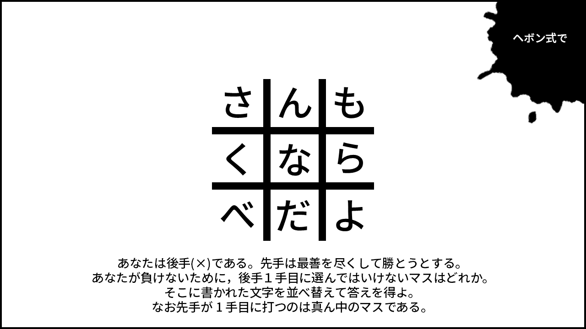</img>
    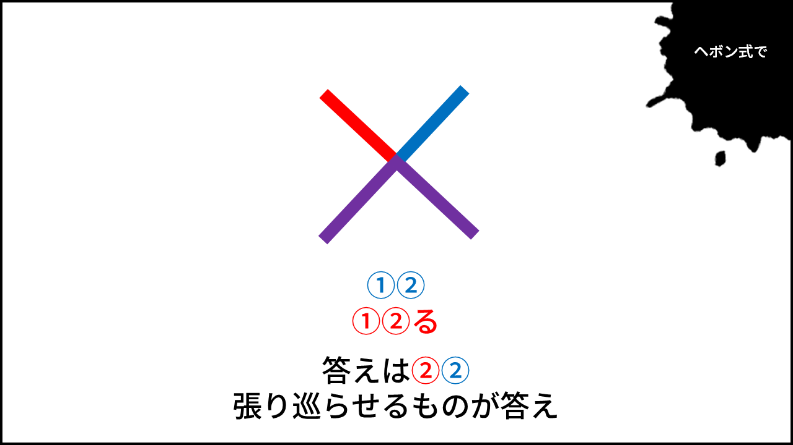</img>
    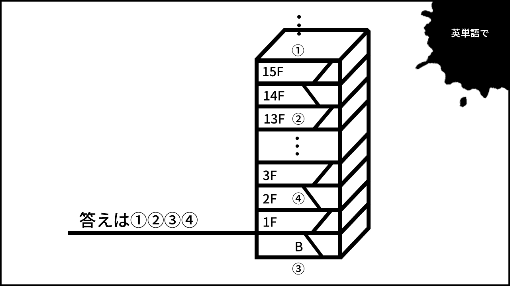</img>
    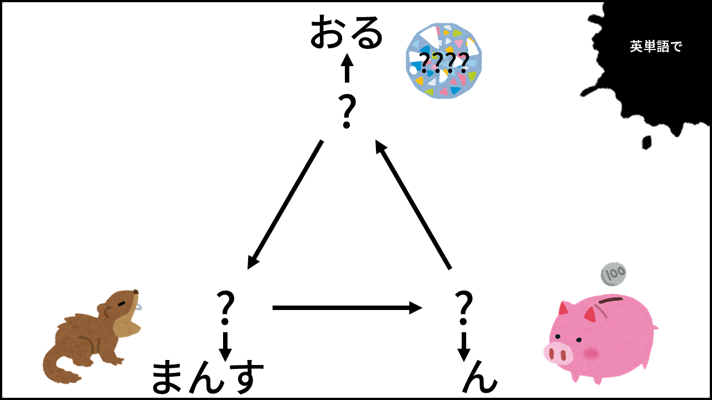</img>
    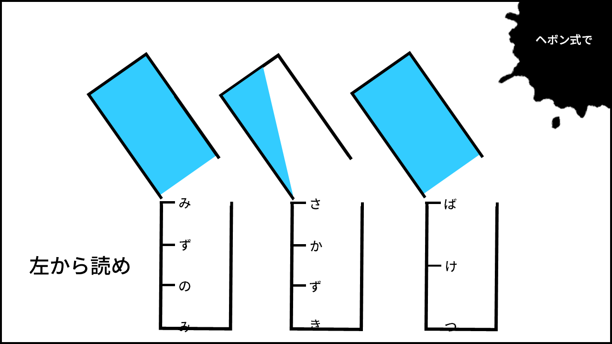</img>
    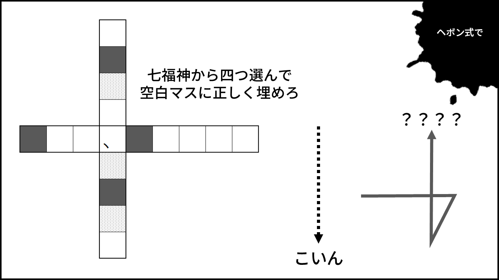</img>
    <input id="b11fo" type="text" placeholder="解答を半角英字で入力" style="display: none;">
    <input id="b12fo" type="text" placeholder="解答を半角英字で入力" style="display: none;">
    <input id="b13fo" type="text" placeholder="解答を半角英字で入力" style="display: none;">
    <input id="b14fo" type="text" placeholder="解答を半角英字で入力" style="display: none;">
    <input id="b15fo" type="text" placeholder="解答を半角英字で入力" style="display: none;">
    <input id="b16fo" type="text" placeholder="解答を半角英字で入力" style="display: none;">
    <button id="submitbutton1" onclick="anssubmitb1();" style="display: none;"> 送信 </button>
    <button id="block_start" onclick="start_s1();" style="display:inline; font-family:Times New Roman; border:3px solid; font-size:20px; position:absolute; top: 700px; left:200px; width:100px; height:100px"> BLOCK START </button>
    <button id="go_north" onclick="go_north();" style="display:none; font-family:Times New Roman; border:3px solid; font-size:20px; position:absolute; top: 600px; left:300px; width:100px; height:100px"> 北へ </button>
    <button id="go_south" onclick="go_south();" style="display:none; font-family:Times New Roman; border:3px solid; font-size:20px; position:absolute; top: 800px; left:300px; width:100px; height:100px"> 南へ </button>
    <button id="go_east" onclick="go_east();" style="display:none; font-family:Times New Roman; border:3px solid; font-size:20px; position:absolute; top: 700px; left:400px; width:100px; height:100px"> 東へ </button>
    <button id="go_west" onclick="go_west();" style="display:none; font-family:Times New Roman; border:3px solid; font-size:20px; position:absolute; top: 700px; left:200px; width:100px; height:100px"> 西へ </button>
    <button id="go_down12" onclick="go_b2f();" style="display: none; font-family:Times New Roman; border:3px solid; font-size:20px; position:absolute; top: 700px; left:300px; width:100px; height:100px"> ハシゴでB2Fへ </button>
    <input id="hebon1" type="text" placeholder="ひらがなで入力して変換" style="display:none;">
    <button id="hebonb1" onclick="hiraganaToRomaji()" style="display: none;"> 変換 </button>

    <!-- ///////////////////// ここまで B1F /////////////////////-->
    
    <!-- ///////////////////// ここから B2F /////////////////////-->

    <script> // STEP2以降はここから

    </script>

    <div id="b2f" style="font-size:40px; display:none; color:white;"> B2F 0/6 </div>
    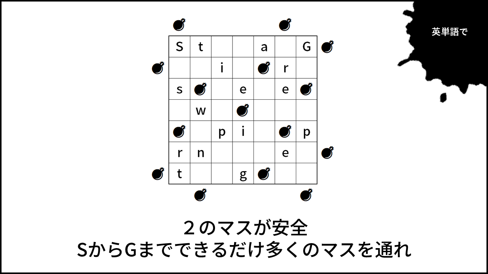</img>
    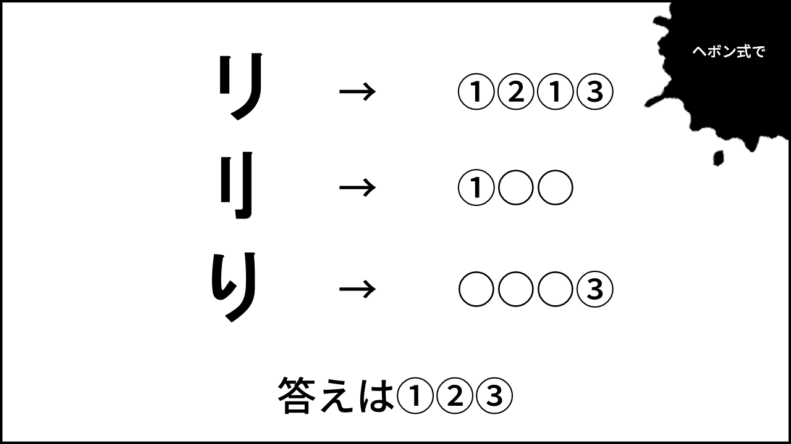</img>
    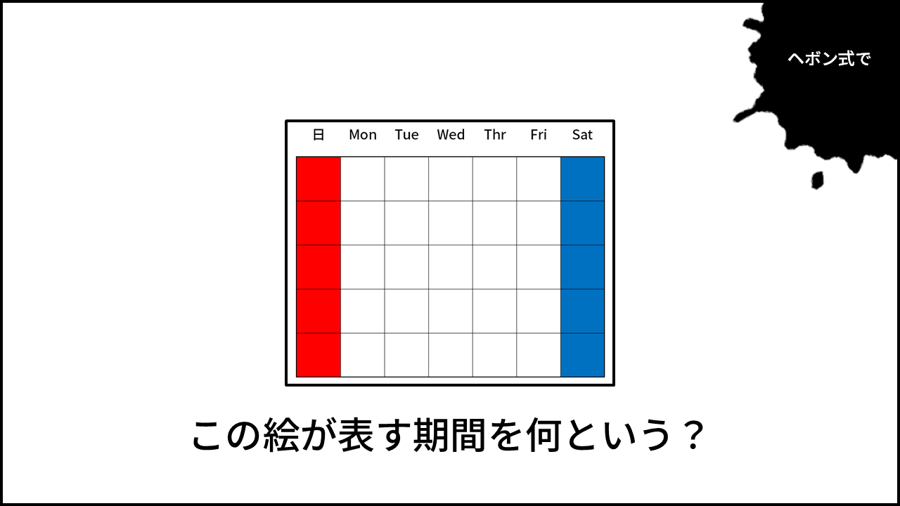</img>
    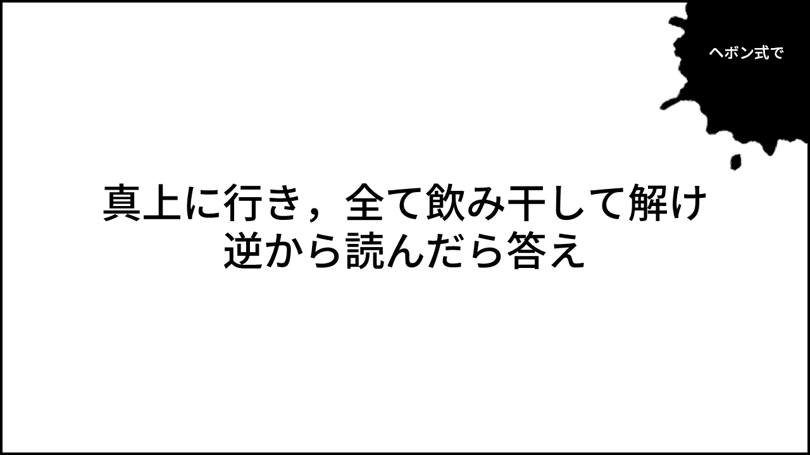</img>
    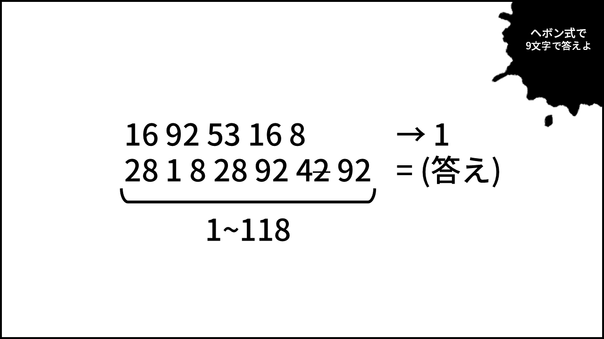</img>
    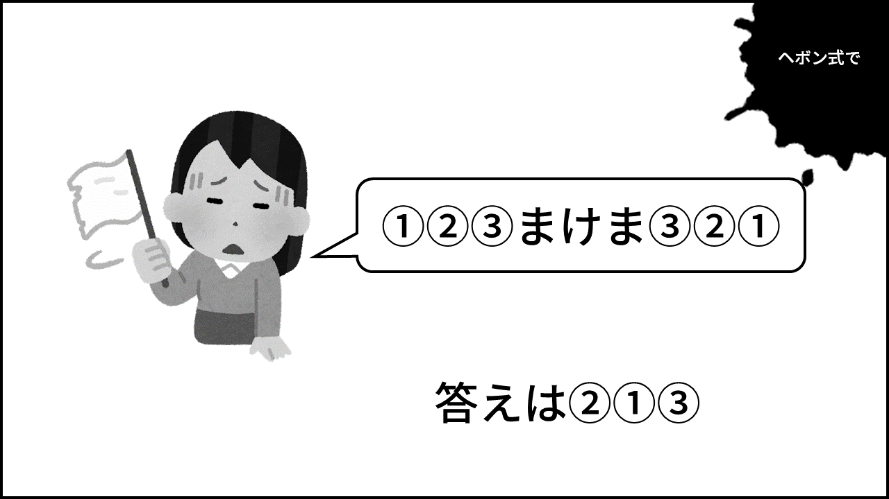</img>
    <input id="b21fo" type="text" placeholder="解答を半角英字で入力" style="display: none;">
    <input id="b22fo" type="text" placeholder="解答を半角英字で入力" style="display: none;">
    <input id="b23fo" type="text" placeholder="解答を半角英字で入力" style="display: none;">
    <input id="b24fo" type="text" placeholder="解答を半角英字で入力" style="display: none;">
    <input id="b25fo" type="text" placeholder="解答を半角英字で入力" style="display: none;">
    <input id="b26fo" type="text" placeholder="解答を半角英字で入力" style="display: none;">
    <button id="submitbutton2" onclick="anssubmitb2();" style="display: none;"> 送信 </button>
    <button id="go_north" onclick="go_north();" style="display:none; font-family:Times New Roman; border:3px solid; font-size:20px; position:absolute; top: 600px; left:300px; width:100px; height:100px"> 北へ </button>
    <button id="go_south" onclick="go_south();" style="display:none; font-family:Times New Roman; border:3px solid; font-size:20px; position:absolute; top: 800px; left:300px; width:100px; height:100px"> 南へ </button>
    <button id="go_east" onclick="go_east();" style="display:none; font-family:Times New Roman; border:3px solid; font-size:20px; position:absolute; top: 700px; left:400px; width:100px; height:100px"> 東へ </button>
    <button id="go_west" onclick="go_west();" style="display:none; font-family:Times New Roman; border:3px solid; font-size:20px; position:absolute; top: 700px; left:200px; width:100px; height:100px"> 西へ </button>
    <button id="go_down23" onclick="go_b3f();" style="display: none; font-family:Times New Roman; border:3px solid; font-size:20px; position:absolute; top: 700px; left:300px; width:100px; height:100px"> ハシゴでB3Fへ </button>
    <button id="go_up21" onclick="go_b1f();" style="display: none; font-family:Times New Roman; border:3px solid; font-size:20px; position:absolute; top: 700px; left:300px; width:100px; height:100px"> ハシゴでB1Fへ </button>
    <input id="hebon2" type="text" placeholder="ひらがなで入力して変換" style="display:none;">
    <button id="hebonb2" onclick="hiraganaToRomaji()" style="display: none;"> 変換 </button>

    <!-- ///////////////////// ここまで STEP 2 /////////////////////-->
    
    <!-- ///////////////////// ここから STEP 3 /////////////////////-->

    <script>

    </script>

    <div id="b3f" style="font-size:40px; display:none; color:white;"> B3F 0/6 </div>
    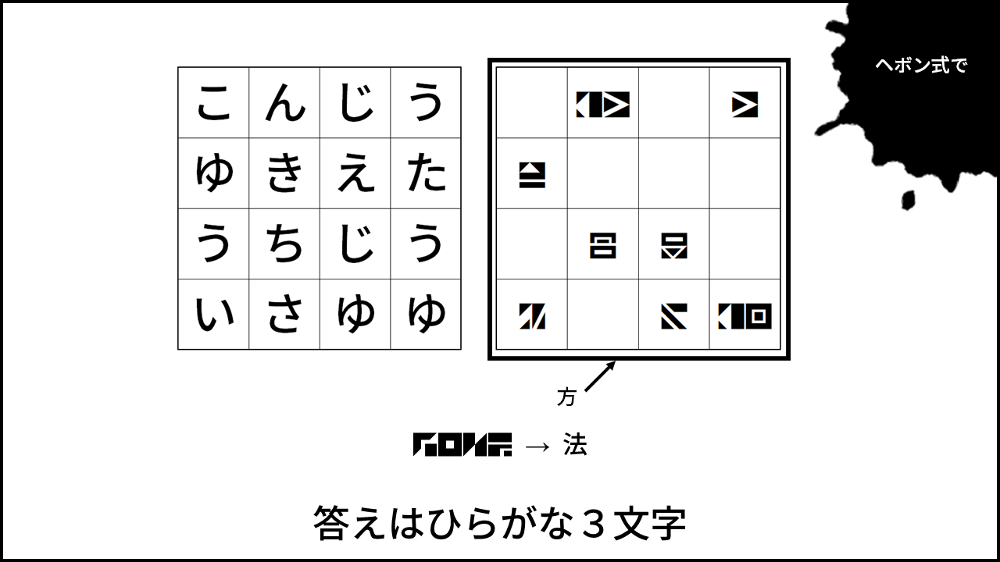</img>
    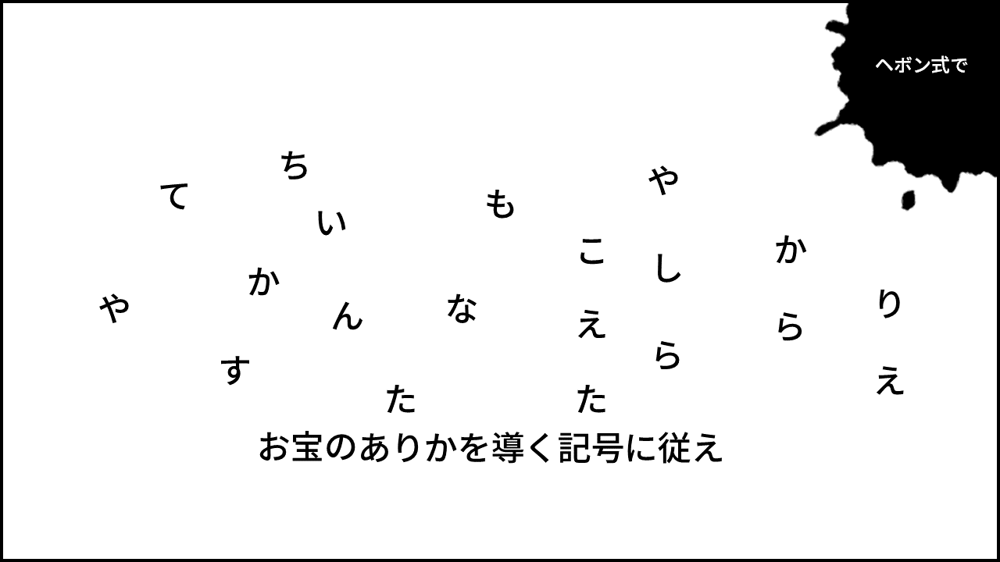</img>
    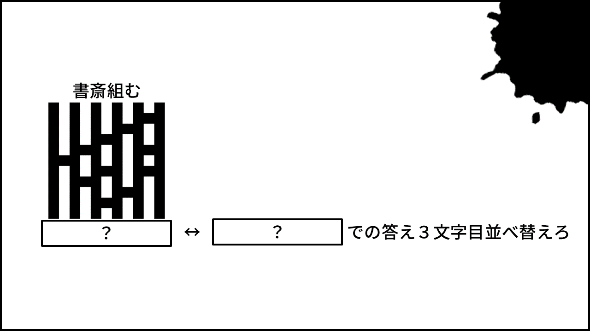</img>
    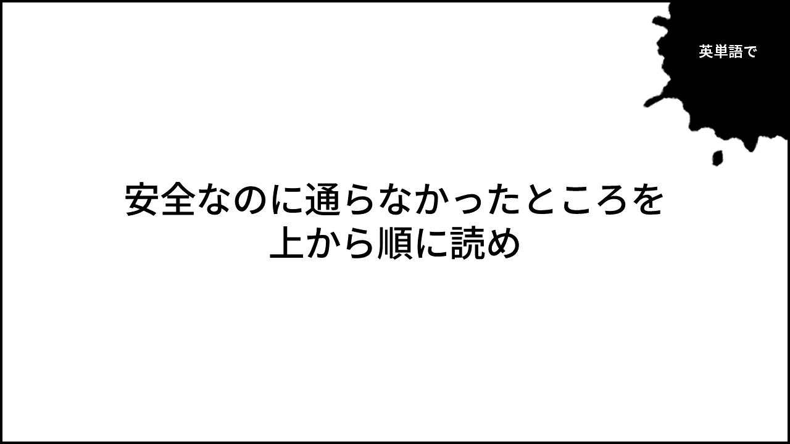</img>
    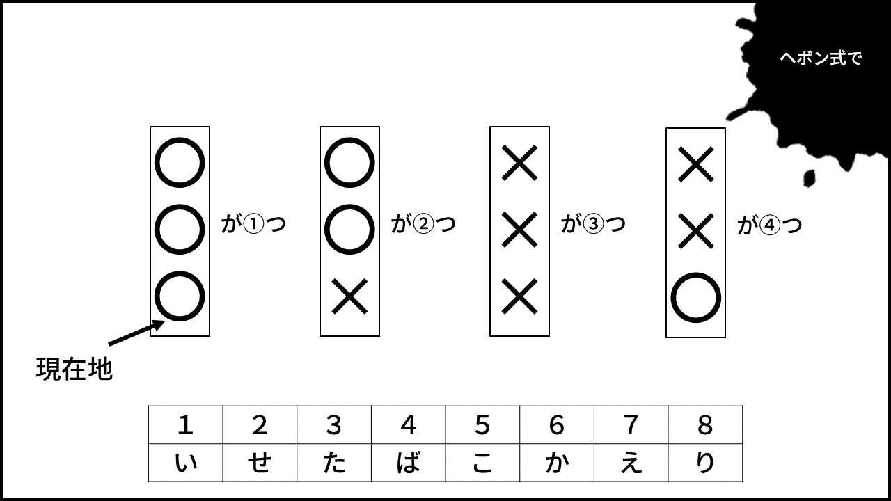</img>
    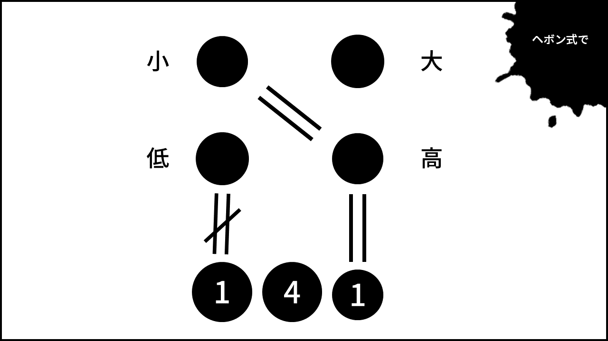</img>
    <input id="b31fo" type="text" placeholder="解答を半角英字で入力" style="display: none;">
    <input id="b32fo" type="text" placeholder="解答を半角英字で入力" style="display: none;">
    <input id="b33fo" type="text" placeholder="解答を半角英字で入力" style="display: none;">
    <input id="b34fo" type="text" placeholder="解答を半角英字で入力" style="display: none;">
    <input id="b35fo" type="text" placeholder="解答を半角英字で入力" style="display: none;">
    <input id="b36fo" type="text" placeholder="解答を半角英字で入力" style="display: none;">
    <button id="submitbutton3" onclick="anssubmitb3();" style="display: none;"> 送信 </button>
    <button id="go_north" onclick="go_north();" style="display:none; font-family:Times New Roman; border:3px solid; font-size:20px; position:absolute; top: 600px; left:300px; width:100px; height:100px"> 北へ </button>
    <button id="go_south" onclick="go_south();" style="display:none; font-family:Times New Roman; border:3px solid; font-size:20px; position:absolute; top: 800px; left:300px; width:100px; height:100px"> 南へ </button>
    <button id="go_east" onclick="go_east();" style="display:none; font-family:Times New Roman; border:3px solid; font-size:20px; position:absolute; top: 700px; left:400px; width:100px; height:100px"> 東へ </button>
    <button id="go_west" onclick="go_west();" style="display:none; font-family:Times New Roman; border:3px solid; font-size:20px; position:absolute; top: 700px; left:200px; width:100px; height:100px"> 西へ </button>
    <button id="go_down34" onclick="go_b4f();" style="display: none; font-family:Times New Roman; border:3px solid; font-size:20px; position:absolute; top: 700px; left:300px; width:100px; height:100px"> 最深部へ </button>
    <button id="go_up32" onclick="go_b2f();" style="display: none; font-family:Times New Roman; border:3px solid; font-size:20px; position:absolute; top: 700px; left:300px; width:100px; height:100px"> ハシゴでB2Fへ </button>
    <input id="hebon3" type="text" placeholder="ひらがなで入力して変換" style="display:none;">
    <button id="hebonb3" onclick="hiraganaToRomaji()" style="display: none;"> 変換 </button>

    <!-- ///////////////////// ここから 最深部 /////////////////////-->
    <div id="b4f" style="font-size:40px; display:none; color:white;"> FINAL </div>
    </img>
    <input id="bfinalfo" type="text" placeholder="解答を半角英字で入力" style="display: none;">
    <button id="submitbutton4" onclick="anssubmitb4();" style="display: none;"> 送信 </button>
    <button id="go_north" onclick="go_north();" style="display:none; font-family:Times New Roman; border:3px solid; font-size:20px; position:absolute; top: 600px; left:300px; width:100px; height:100px"> 北へ </button>
    <button id="go_south" onclick="go_south();" style="display:none; font-family:Times New Roman; border:3px solid; font-size:20px; position:absolute; top: 800px; left:300px; width:100px; height:100px"> 南へ </button>
    <button id="go_east" onclick="go_east();" style="display:none; font-family:Times New Roman; border:3px solid; font-size:20px; position:absolute; top: 700px; left:400px; width:100px; height:100px"> 東へ </button>
    <button id="go_west" onclick="go_west();" style="display:none; font-family:Times New Roman; border:3px solid; font-size:20px; position:absolute; top: 700px; left:200px; width:100px; height:100px"> 西へ </button>
    <button id="go_up43" onclick="go_b3f();" style="display: none; font-family:Times New Roman; border:3px solid; font-size:20px; position:absolute; top: 700px; left:300px; width:100px; height:100px"> ハシゴでB3Fへ </button>
    <input id="hebon4" type="text" placeholder="ひらがなで入力して変換" style="display:none;">
    <button id="hebonb4" onclick="hiraganaToRomaji()" style="display: none;"> 変換 </button>

    <noscript><p> Javascriptをオンにしてください。 </p></noscript>
</body>
</html>
